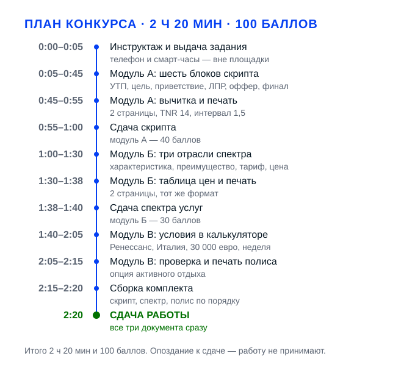
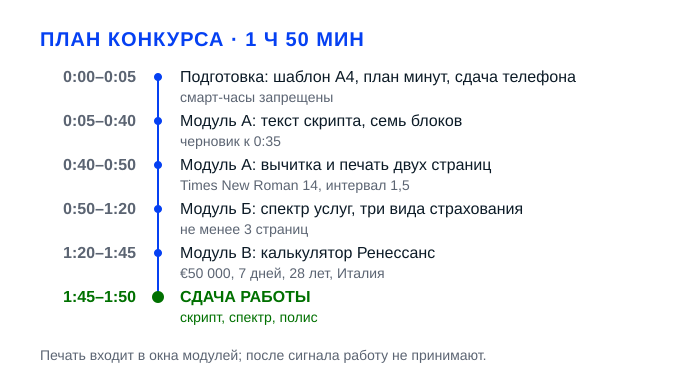
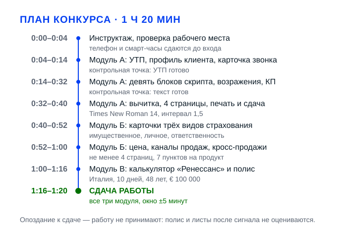

Менеджер по продажам страховых продуктов (Р)
Задания ниже — официальные файлы «Абилимпикс» (источник: abilympics-russia.ru), разложенные по категориям. Решения написаны по тексту задания, регламенту и критериям оценки; в них указано, что именно проверяет эксперт.
Школьник
14–16 лет, базовый уровень заданияВыдержка из официального конкурсного задания: страницы, относящиеся к категории «Школьник» (стр. 6–8 источника).
Пошаговое решение
Задание для школьников состоит из трёх модулей на 100 баллов и идёт 2 часа 20 минут: модуль А — 60 минут и 40 баллов за скрипт телефонного разговора, модуль Б — 40 минут и 30 баллов за описание спектра страховых услуг по имущественному, личному страхованию и страхованию ответственности, модуль В — 40 минут и 30 баллов за расчёт премии и заполненный полис в калькуляторе компании «Ренессанс». Текстовые результаты сдаются печатными: не меньше двух страниц, А4, Times New Roman, 14 кегль, интервал 1,5, а полис — в том виде, который выдаёт онлайн-калькулятор. Условия модуля В заданы жёстко: одна поездка, неделя, возраст 38 лет, гражданство РФ, Италия, страховые 30 000 евро и опция активного отдыха. Задание меняется не менее чем на 30 процентов, поэтому заучивать цифры бессмысленно — нужно понимать логику каждого шага.

Задача 1. Составить скрипт холодного звонка в модуле АМодуль А · 40 баллов · 60 минут
Первый модуль — самый дорогой: 40 баллов из 100, и на него отведён ровно час. Результат — печатный скрипт телефонного разговора с потенциальным клиентом, в котором последовательно разобраны шесть блоков задания: подготовительный этап с уникальным торговым предложением, цель звонка, приветствие, выход на лицо, принимающее решение, оффер с презентацией предложения и завершение разговора. Документ сдаётся на бумаге, не менее двух страниц, шрифтом Times New Roman четырнадцатого кегля с полуторным интервалом, поэтому писать нужно сразу так, чтобы текст читался с листа и не требовал переверстки на последних минутах.
Действие 1.1. Развернуть рабочее место и материалы
Шаг 1.1.1
Заходим на площадку и первые две минуты не пишем, а осматриваем место: убираем со стола сумку, куртку и всё, что не относится к заданию, лист с конкурсным заданием и чистые бланки кладём слева, ручку и черновик справа, стакан воды ставим в стороне от бумаг. Телефон и смарт-часы оставляем вне соревновательной площадки, потому что особым указанием задания устройства с доступом в интернет проносить запрещено, а время смотрим по обычным наручным часам или по часам в зале. Затем проверяем принтер: включён, в лотке лежит бумага А4, на компьютере открыт текстовый редактор с пустым документом.
Организация рабочего места входит в оценку модуля А, но ставка здесь выше, чем кажется: телефон на столе — это не замечание, а разбор с главным экспертом, потому что запрет сформулирован прямо и без исключений. Второй довод чисто практический: на шесть содержательных блоков у вас 60 минут, и каждая минута, потраченная на поиск ручки или перезапуск принтера, вычитается из времени на текст.
На столе остались только задание, чистые листы, ручка, черновик и вода; телефон и смарт-часы лежат вне площадки; в лотке принтера бумага А4, а на экране пустой документ. Если на столе есть предмет, без которого работа пройдёт, значит, он лишний и его место не здесь.
Чаще всего телефон оставляют «на всякий случай» под листами или в кармане: обнаружение такого устройства по особому указанию задания превращает разговор из оценки баллов в вопрос допуска. Вторая ошибка — начать писать, не проверив принтер, и за пять минут до сдачи обнаружить замятие бумаги: перепечатка двух страниц съедает весь запас времени.
Эксперт обходит площадку до старта и в первые минуты модуля: смотрит на порядок на столе и на отсутствие запрещённых устройств, а также отмечает, готовы ли материалы к печати, поскольку результат по заданию сдаётся только в печатном виде.
Шаг 1.1.2
Читаем конкурсное задание целиком, один раз, не выхватывая фразы, и выписываем на отдельный лист портрет клиента пятью строками: кто он, что у него есть в собственности, чем он рискует, что для него дорого и какой продукт ему ближе. Данные берём из задания, а не придумываем: если в задании указан возраст, город, имущество или поездка, они и должны оказаться в скрипте, потому что эксперт сверяет текст с вводными. Этот лист держим перед глазами весь час и в конце вкладываем в черновик, чтобы при подготовке оффера не возвращаться к заданию каждый раз.
Скрипт холодного звонка оценивают не как литературное упражнение, а как рабочий инструмент: он должен быть адресован конкретному человеку с конкретной ситуацией. Универсальный текст «для всех» читается экспертом как отсутствие подготовительного этапа, а это первый из шести обязательных блоков и заметная часть из 40 баллов модуля. Выписанный портрет клиента экономит и время: оффер и примеры цифр потом берутся с этого листа.
На листе пять заполненных строк, и каждая опирается на формулировку из задания, а не на фантазию. Проверьте по ключевым словам: объект страхования назван, риск назван, потребность названа. Если какая-то строка пустая, значит, вводных не хватает и надо перечитать задание, а не додумывать.
Ошибка новичка — писать скрипт «в общем виде», с обезличенными фразами про «вашу компанию» и «ваше имущество»: такой текст невозможно отличить от шаблона из интернета, и баллы за подготовительный этап теряются. Вторая ошибка — выдумать клиенту активы, которых в задании нет, и потом защищать цифры, которые не с чем сверить.
Эксперт читает первые строки скрипта и сразу видит, есть ли в нём адресат: имя, объект, ситуация. Он же сверяет упомянутые в тексте данные с вводными задания, когда забирает документ.
Шаг 1.1.3
Размечаем черновик каркасом на шесть блоков и подписываем их теми словами, которые есть в задании: подготовительный этап и УТП, цель звонка, приветствие, выход на ЛПР, оффер, завершение. Под каждый блок оставляем место в треть страницы, а сверху прикидываем минуты: 10 минут на каркас и портрет клиента, 30 минут на текст всех шести блоков, 8 минут на вычитку, 6 минут на печать и подпись, остальное — запас. Такой расчёт удобнее держать на первой странице черновика, чтобы видеть отставание по времени до того, как оно станет критическим.
Каркас из шести подписанных блоков — это страховка от самой дорогой ошибки модуля: пропущенного пункта. Эксперт проверяет документ по перечню критериев задания, и если в тексте нет, например, выхода на ЛПР, теряется не строчка, а целый блок из 40 баллов модуля. Разметка по минутам нужна потому, что 60 минут на шесть блоков — это ровно по десять минут на каждый, и любая задержка на первом блоке съедает последний, где пишется завершение разговора.
На черновике шесть заголовков, и каждый уже имеет хотя бы по одной рабочей фразе. Пересчитайте заголовки пальцем — их должно быть ровно шесть, без седьмого «прочее» и без объединённого блока «приветствие и оффер»: объединение читается как отсутствие одного из пунктов перечня.
Самая частая ошибка — писать линейно, с начала и до конца, и увязнуть в приветствии на двадцать минут: тогда оффер и завершение пишутся на скорость, короткими обрывками. Вторая — сделать каркас из пяти блоков, случайно соединив цель звонка с приветствием: в тексте не остаётся отдельно сформулированной цели, а это отдельный критерий.
Эксперт перелистывает документ и мысленно ставит галочки напротив шести пунктов перечня. Отсутствие заголовка он замечает быстрее, чем невнятную формулировку внутри абзаца.
Действие 1.2. Сформулировать УТП и цель звонка
Шаг 1.2.1
Собираем уникальное торговое предложение по четырёхчастной формуле: кому предлагаем, что именно, какую проблему этим снимаем и за сколько или в какой срок. В готовом виде это одно предложение на 15–25 слов, например: «Для владельцев квартир в многоэтажках мы страхуем отделку и ответственность перед соседями на 1,5 миллиона рублей, а решение по выплате принимаем за пять рабочих дней». Записываем его отдельным абзацем с заголовком «УТП», потому что эксперту нужно видеть предложение в явном виде, а не собирать его из текста разговора.
УТП — первое, что проверяют в модуле А: без него холодный звонок превращается в обзвон по списку, а в задании подготовительный этап с формулировкой УТП вынесен отдельным пунктом критериев. Формула из четырёх частей нужна ещё и для самопроверки: если хотя бы одна часть не заполняется, предложение получается расплывчатым, и клиент в разговоре не понимает, что ему продают и почему это выгодно.
Проверьте по четырём вопросам: кому адресовано, что страхуется, от какого риска, на какую сумму и за какие деньги. В предложении есть хотя бы одна цифра — сумма покрытия, срок выплаты, размер скидки. Если после прочтения нельзя пересказать предложение одной фразой, его нужно переписать, а не украшать.
Распространённая ошибка — выдать за УТП лозунг вроде «надёжная защита для всей семьи»: он не содержит ни объекта, ни цифры и подходит любой компании, поэтому баллы за уникальность не начисляются. Вторая — уйти в перечисление всех продуктов компании: предложение растягивается на полстраницы, и в разговоре его невозможно произнести за 30 секунд.
Эксперт ищет абзац с формулировкой УТП в самом начале документа и оценивает, отличается ли предложение от типового рыночного. Он же проверяет, совпадают ли цифры предложения с теми, что позже появятся в модуле Б и модуле В.
Шаг 1.2.2
Формулируем цель звонка одной строкой и делаем её измеримой: не «рассказать о страховании», а «получить согласие на расчёт стоимости и назначить встречу на конкретный день» или «договориться об отправке коммерческого предложения на почту до пятницы». Записываем цель сразу после УТП, отдельным абзацем, и добавляем вторую, запасную цель — например, согласие на повторный звонок через три дня, если клиент сейчас занят. Обе формулировки держим короткими, чтобы в разговоре их можно было произнести без запинки.
Цель звонка — второй обязательный блок перечня в задании, и проверяется он буквально: есть ли в документе строка, из которой понятно, чего добивается менеджер. Измеримая цель нужна и в самой работе: холодный звонок почти никогда не заканчивается продажей, его задача — перевести клиента на следующий шаг, и участник, который этого не понимает, к концу разговора теряется и не знает, как прощаться.
Цель содержит глагол результата и срок: назначить, договориться, получить согласие — и дату. Проверьте формулировку вопросом «как я узнаю, что цель достигнута»: если ответа нет, цель описана как процесс, а не как результат.
Типичная ошибка — написать целью «продать полис»: в холодном звонке это почти недостижимо, и разговор заканчивается давлением и отказом. Вторая — оставить цель в виде «проинформировать клиента»: такой звонок не имеет следующего шага, и блок считается нераскрытым.
Эксперт ищет цель звонка в первых абзацах и сверяет её с завершением: если в начале заявлена встреча, а в конце разговор ничем не закончился, это заметное противоречие в тексте.
Действие 1.3. Написать приветствие и выход на ЛПР
Шаг 1.3.1
Пишем приветствие на 15–20 секунд: обращение по имени-отчеству, если оно есть в задании, название компании, свою должность и фамилию, причину звонка одной фразой и вопрос-разрешение на разговор. Порядок именно такой, потому что человек на другом конце провода за первые секунды решает, слушать дальше или положить трубку. В реплике избегаем оборота «вас беспокоит» и вопроса «удобно ли вам сейчас говорить» без продолжения — вместо этого спрашиваем разрешение на две минуты и сразу называем тему, чтобы у клиента не возникало ощущения неизвестности.
Приветствие — третий обязательный блок модуля А, и оно задаёт тон всему остальному: если первые двадцать секунд смазаны, дальше клиент слушает вполуха, и оффер не срабатывает. Кроме того, в документе приветствие видно сразу, на первой странице, и эксперт оценивает его первым, ещё до того, как дочитает до УТП.
В приветствии названы четыре элемента: имя клиента, компания, причина звонка и просьба о двух минутах. Прочитайте вслух с секундомером — должно уложиться в 15–20 секунд, не больше. Если фраза длиннее, уберите из неё всё, что не несёт информации.
Ошибка — начинать с длинного рассказа о компании: клиент за это время успевает решить, что ему продают, и закрывается. Вторая — сразу переходить к продукту, минуя вопрос-разрешение: формально разговор идёт, но по этике холодного звонка это нарушение, и в скрипте отсутствует переход к следующему блоку.
Эксперт читает приветствие с листа и оценивает, можно ли его произнести за двадцать секунд и понятно ли из него, кто звонит и зачем. По его просьбе участник нередко читает приветствие вслух, и тогда видно, укладывается ли он в темп разговора.
Шаг 1.3.2
Прописываем выход на лицо, принимающее решение: вопрос, который выясняет, кто в доме или в компании занимается страхованием имущества и кто подписывает договор. Заготовьте три реплики под три вероятных ответа: «это я», «занимается супруг или руководитель» и «нам это не нужно». Для второго случая нужна вежливая просьба соединить или подсказать имя и удобное время, для третьего — короткая фраза о том, что разговор займёт две минуты и после него решение остаётся за клиентом. Имя и должность ЛПР фиксируем в тексте скрипта, чтобы было видно, что разговор дошёл до нужного человека.
Выход на ЛПР — четвёртый обязательный блок, и в жизни он решает судьбу звонка: разговаривать с человеком, который не принимает решения, значит потратить время и не получить следующего шага. В задании этот блок назван отдельно именно потому, что школьники часто останавливаются на первом же ответившем и считают задачу выполненной.
В скрипте есть вопрос о ЛПР и минимум два варианта развития разговора после ответа. Проверьте, что после вопроса в тексте появляется имя или должность: если разговор обрывается на «соедините, пожалуйста», блок описан наполовину.
Частая ошибка — спросить «а кто у вас главный» тоном проверяющего: вопрос воспринимается как вторжение, и клиент закрывается. Вторая — согласиться на «оставьте информацию, я передам» и закончить звонок: ЛПР так и не появился, и следующий блок оффера повисает в воздухе.
Эксперт смотрит, есть ли в документе отдельный вопрос о ЛПР и что участник делает с ответом «вам это не нужно». Именно этот фрагмент чаще всего отсутствует в работах.
Шаг 1.3.3
Размечаем реплики обеих сторон: слева помечаем «Менеджер», справа — «Клиент», а в квадратных скобках после реплики дописываем ремарку о том, что делает менеджер в этот момент — делает паузу, записывает имя, открывает расчёт. Клиентские реплики делаем короткими и правдоподобными: «сейчас неудобно», «у нас уже есть страховка», «сколько это стоит». Такая разметка превращает текст в сценарий, по которому можно провести реальный звонок, а не в монолог продавца на две страницы.
Скрипт отличается от презентации именно наличием второй стороны: разговор — это обмен, и эксперт по перечню критериев оценивает, предусмотрены ли в документе ответы клиента и переходы между блоками. Кроме того, размеченные реплики помогают уложиться в объём: две страницы набираются естественно, без искусственного растягивания абзацев.
В тексте чередуются реплики менеджера и клиента, у каждой реплики есть пометка говорящего. Прочитайте документ по ролям с кем-нибудь из соседей: если на какой-то вопрос клиента не находится ответа, значит, в скрипте дырка.
Ошибка — написать сплошной монолог менеджера на полторы страницы и добавить одну реплику клиента для вида: читается как конспект, а не как сценарий, и баллы за проработку разговора снижаются. Вторая — сделать клиента слишком сговорчивым, чтобы разговор шёл гладко: эксперт сразу видит неестественность.
Эксперт пролистывает документ, отмечая наличие второй стороны и логичность переходов. Диалоговая разметка для него — признак того, что участник понимает механику звонка.
Действие 1.4. Написать оффер и завершение разговора
Шаг 1.4.1
Собираем оффер по схеме из четырёх шагов: называем ситуацию клиента, показываем риск, предлагаем решение с цифрой и задаём вопрос, который переводит разговор к следующему шагу. В готовом виде это 30–40 секунд речи, то есть примерно 70–90 слов: «У вас квартира на девятом этаже, а залив идёт снизу; ремонт у соседей обходится в среднем в 300 тысяч. Наш полис покрывает отделку на 1,5 миллиона и ответственность перед соседями, стоит от 4 500 рублей в год. Посчитать под ваш метраж?» Такая структура держит внимание, потому что каждая фраза опирается на предыдущую.
Оффер — пятый обязательный блок и ядро модуля: именно в нём проверяют, умеет ли участник перевести характеристику продукта в выгоду для конкретного человека. По перечню критериев это презентация УТП, то есть предложение должно звучать теми же словами, что и в начале документа, иначе эксперт видит два разных предложения в одном скрипте.
В оффере есть ситуация клиента, риск, решение с цифрой и вопрос в конце. Проверьте по секундомеру: 30–40 секунд вслух. Если получается длиннее, вы перечисляете условия договора, а не продаёте идею защиты.
Ошибка — пересказать правила страхования и список рисков: клиент не успевает понять, зачем ему это, и разговор гаснет. Вторая — закончить оффер утверждением без вопроса: тогда менеджеру нечего услышать в ответ, и переход к завершению выглядит как обрыв.
Эксперт читает оффер и ищет в нём связку «риск — сумма — цена». Отсутствие цены в оффере он отмечает отдельно: клиент должен услышать порядок суммы до того, как согласится на встречу.
Шаг 1.4.2
Привязываем оффер к потребности из портрета клиента: если в задании семья с ребёнком и квартира, говорим про отделку, залив и ответственность перед соседями; если речь о поездке — про медицинскую помощь за рубежом и возврат расходов; если о машине — про ремонт после ДТП и стоимость полиса КАСКО. В тексте оффера оставляем не больше двух рисков, но именно тех, которые для этого клиента реальны, и подкрепляем каждый примером из его ситуации: этаж, район, марка машины, страна поездки.
Персонализация — то, чем отличается подготовленный звонок от обзвона по базе, и в критериях модуля А она проходит по подготовительному этапу и офферу одновременно. Практический смысл простой: человек реагирует на свой риск, а не на абстрактный перечень, поэтому разговор доходит до вопроса о расчёте, то есть до следующего шага.
В оффере названы один-два риска, и каждый привязан к детали из задания. Проверьте заменой: если переставить оффер другому клиенту из соседнего задания и он не потеряет смысл, значит, привязки нет. Детали вроде этажа или страны поездки и есть доказательство привязки.
Ошибка — перечислить сразу пять рисков «чтобы клиент выбрал»: внимание рассеивается, и в памяти не остаётся ни одного. Вторая — говорить о рисках, которых у клиента нет: например, предлагать защиту от наводнения владельцу квартиры на девятом этаже.
Эксперт сверяет упомянутые в оффере риски с вводными задания. Совпадение по двум-трём деталям он отмечает как понимание клиента, несовпадение — как шаблон.
Шаг 1.4.3
Вставляем в оффер цифры и проверяем их согласованность: сумма покрытия, размер франшизы, срок выплаты и цена полиса должны совпадать с тем, что вы позже напишете в модуле Б и получите в калькуляторе модуля В. Для школьной категории достаточно двух-трёх чисел, но они должны быть названы точно: не «около миллиона», а «1 500 000 рублей», не «быстро», а «пять рабочих дней». Рядом с ценой полезно дать сравнение с масштабом риска — полис за 4 500 рублей против ремонта у соседей за 300 тысяч.
Цифры в оффере — это доказательство, и по критериям они относятся к презентации предложения. Согласованность важнее красоты: если в скрипте одна сумма, в спектре услуг другая, а в полисе третья, эксперт делает вывод, что участник не понимает собственный расчёт, и это бьёт сразу по двум модулям.
Выпишите все числа из скрипта на отдельную строку и сверьте с листом спектра услуг. Сумма покрытия, франшиза, срок выплаты и премия совпадают до рубля. Если где-то расхождение — правьте скрипт, а не расчёт.
Ошибка — округлять в тексте «примерно полтора миллиона», а в расчёте писать точное число: выглядит как небрежность, и эксперт задаёт вопрос на защите. Вторая — указать цену без указания, за какой срок она берётся, и получить спор о том, год это или месяц.
Эксперт сверяет числа в трёх документах после сдачи: это самый быстрый способ увидеть, работал участник по плану или собирал текст из разных кусков. Он же смотрит, названа ли цена с периодом, потому что без периода цифра превращается в спор о годе и месяце.
Шаг 1.4.4
Пишем завершение звонка на 20–25 секунд: коротко повторяем договорённость своими словами, называем следующий шаг с датой и временем, уточняем способ связи и благодарим за разговор. Например: «Тогда я готовлю расчёт по вашей квартире до пятницы, отправляю на эту почту и звоню в понедельник после обеда, если не возражаете». В конце — имя менеджера и пожелание хорошего дня, без повторной продажи и без новых условий, потому что в этот момент клиент уже принял решение и лишняя информация его только настораживает.
Завершение — шестой и последний обязательный блок перечня в задании. Именно здесь видно, была ли у звонка цель: если в конце нет следующего шага с датой, все предыдущие блоки повисают, потому что разговор не привёл ни к чему измеримому. Эксперт дочитывает документ до конца, и финал запоминается ему лучше середины.
В завершении есть повтор договорённости, дата следующего контакта и способ связи. Проверьте совпадение с целью звонка из первого блока: если там была встреча, а здесь только «спасибо за внимание», текст нужно переписать.
Ошибка — закончить словами «если что, звоните»: инициатива переходит к клиенту, и звонок не имеет продолжения. Вторая — в финале снова начать рассказывать про условия и скидки, из-за чего клиент отменяет уже согласованный шаг.
Эксперт читает последний абзац первым делом после заголовков: по нему он проверяет, доведён ли разговор до результата и совпадает ли результат с заявленной целью.
Действие 1.5. Оформить, проверить и сдать скрипт
Шаг 1.5.1
Переносим черновик в документ с нужным оформлением: формат А4, шрифт Times New Roman, кегль 14, межстрочный интервал 1,5, поля по два сантиметра слева и справа, выравнивание по ширине, абзацный отступ 1,25 сантиметра. Каждый блок получаем жирным заголовком, реплики размечаем «Менеджер:» и «Клиент:», ремарки ставим в квадратные скобки курсивом. Нумерацию блоков делаем сквозной, от первого до шестого, чтобы эксперт видел структуру с первого взгляда и мог сверять её с перечнем критериев.
Требования к оформлению в задании перечислены дословно: А4, Times New Roman, 14, интервал 1,5. Это не придирки — по этим параметрам документ проверяют на соответствие, и работа, набранная двенадцатым кеглем или одинарным интервалом, теряет баллы независимо от содержания. Полуторный интервал и четырнадцатый кегль дают примерно 350–400 слов на страницу, поэтому две страницы — это около 700–800 слов текста.
Откройте настройки абзаца и проверьте четыре параметра: шрифт, кегль, интервал, отступ. Затем посмотрите на документ в масштабе 100 процентов: если строки идут плотно, как в книге, интервал не тот. Поля и выравнивание проверяются линейкой на экране.
Ошибка — набрать текст в двенадцатом кегле, чтобы уместить больше слов, и получить несоответствие формату: проверяющий видит его сразу, ещё до чтения. Вторая — сделать заголовки цветными и с рамками: оформление отвлекает, а в требованиях его нет.
Эксперт первым делом смотрит на параметры страницы и шрифта, потому что проверка формальных требований занимает секунды. Дальше он читает уже с поправкой на то, соблюдён формат или нет.
Шаг 1.5.2
Проверяем объём и полноту: две полные страницы без учёта титульного листа, все шесть блоков на месте, в каждом блоке есть хотя бы одна развёрнутая реплика. Если текст не дотягивает до второй страницы, добавляем не «воду», а содержание: ещё одну пару «вопрос клиента — ответ менеджера», пример расчёта в оффере или вариант приветствия для случая, когда трубку взял не ЛПР. Если текст перевалил за три страницы, сокращаем описания и оставляем только реплики и ремарки.
Объём в задании задан прямо: не менее двух страниц. Это значит, что работа на полторы страницы не соответствует требованию, а работа на пять страниц с длинными рассуждениями затрудняет проверку и увеличивает шанс, что эксперт не дойдёт до конца. Две-три страницы плотного сценарного текста — оптимум, при котором видно и структуру, и глубину проработки.
Пересчитайте страницы по разрывам, а не по количеству набранного текста: вторая страница должна быть заполнена минимум на две трети, иначе эксперт формально увидит полторы. Пройдите по заголовкам и убедитесь, что каждый из шести блоков занимает свой абзац.
Ошибка — догонять объём повторами одного и того же предложения разными словами: это заметно с первого абзаца и читается как отсутствие содержания. Вторая — сдать ровно две страницы, из которых вторая заполнена тремя строками: по факту объём не выполнен.
Эксперт листает документ и оценивает плотность: сколько страниц реально занято и сколько блоков раскрыто. Пустая вторая страница — частая причина снижения оценки при формально выполненном объёме.
Шаг 1.5.3
Вычитываем текст перед печатью: проверяем имена, названия компании и продукта, все цифры и суммы, отсутствие обрывков черновых фраз и следов автозамены. Отдельно читаем вслух приветствие и оффер — они должны произноситься без запинки, потому что именно их эксперт может попросить прочитать. Затем печатаем, проверяем, что обе страницы вышли целиком и без полос, ставим в правом нижнем углу каждой страницы подпись и фамилию и сдаём документ экспертам в отведённое время.
Печать и сдача — финальная точка модуля, и ошибки здесь самые обидные: правильно написанный скрипт, оставшийся в файле или распечатанный с обрезанной второй страницей, оценивается как невыполненный. В задании результат сформулирован однозначно — скрипт предоставляется в печатном виде, поэтому экранный вариант без бумаги не принимается.
В руках два полных листа, текст читается целиком, подпись стоит на каждой странице. Сверьте часы: сдача идёт внутри 60 минут модуля А, и лучше отдать на две минуты раньше, чем печатать второй экземпляр в последние секунды.
Ошибка — печатать в последние две минуты и попасть в очередь к принтеру: на площадке принтер один, и ожидание съедает время следующего модуля. Вторая — сдать черновик с пометками и зачёркиваниями, посчитав, что содержание важнее вида: требования к оформлению относятся и к чистоте листа.
Эксперт принимает листы, проверяет количество страниц, подпись и соответствие формату, и фиксирует время сдачи. Дальше он читает текст уже как готовый документ, а не как черновик.
Задача 2. Описать спектр страховых услуг в модуле БМодуль Б · 30 баллов · 40 минут
Второй модуль стоит 30 баллов и длится 40 минут: за это время нужно охарактеризовать страховые продукты по трём отраслям — имущественному страхованию, личному страхованию и страхованию ответственности. По каждому продукту задание требует четыре вещи: краткую характеристику, преимущество, подобранный для клиента тариф и цену страховой услуги. Результат сдаётся в печатном виде на двух страницах минимум, тем же шрифтом Times New Roman четырнадцатого кегля с полуторным интервалом, поэтому форма подачи здесь так же важна, как и содержание: три отрасли должны читаться как три отдельных блока с одинаковой структурой.
Действие 2.1. Разложить спектр по трём отраслям
Шаг 2.1.1
Начинаем с таблицы на листе А4, развёрнутом горизонтально: четыре столбца — отрасль, продукт, объект страхования, основной риск. В строках пишем три отрасли из задания и напротив каждой один продукт, который вы будете описывать дальше: имущественное — страхование квартиры или КАСКО, личное — страхование от несчастных случаев, ответственности — ОСАГО или страхование ответственности перед третьими лицами. Таблица нужна не для сдачи, а как каркас: из неё потом вырастают все тексты, и она не даёт перепутать отрасли местами.
Модуль Б оценивают по тому, насколько участник ориентируется в отраслях: в задании три вида страхования названы прямо, и продукт из каждой отрасли должен быть описан отдельно. Без таблицы легко получить перекос: три продукта из личного страхования и ни одного из ответственности, а это треть модуля, то есть до 10 баллов из 30. Кроме того, каркас экономит время: 40 минут на три отрасли — это примерно 12 минут на каждую с учётом печати.
В таблице три заполненные строки, в каждой названы отрасль, продукт, объект и риск. Проверьте, что отрасли не дублируются: если в двух строках объектом выступает здоровье, значит, одна из отраслей пропущена.
Ошибка — начать писать текст сразу, без каркаса, и к третьей отрасли обнаружить, что осталось пять минут и полстраницы. Вторая — отнести ОСАГО к имущественному страхованию: это страхование ответственности, и путаница видна эксперту с первой строки.
Эксперт смотрит на структуру документа: видны ли три отрасли как отдельные части. Отсутствие одной из них он отмечает как неполное выполнение задания, потому что спектр в задании описан именно тремя составляющими.
Шаг 2.1.2
Выбираем продукты так, чтобы каждый был узнаваемым и его можно было описать по четырём пунктам без учебника: страхование квартиры или дома от залива, пожара и противоправных действий третьих лиц; страхование от несчастных случаев с выплатой при травме или инвалидности; ОСАГО с выплатой пострадавшему в ДТП. В таблицу дописываем третьим столбцом объект: квартира и отделка, жизнь и здоровье застрахованного, имущественный интерес по обязательствам перед третьими лицами. Четвёртым столбцом — риск: залив, пожар, травма, ДТП по вашей вине.
Продукты должны быть настоящими, а не выдуманными: эксперт проверяет, существует ли то, что описано, и совпадает ли объект с отраслью. Узнаваемые продукты проще наполнить конкретикой за отведённые 40 минут, а конкретика — это то, за что дают баллы в характеристике и преимуществе. Кроме того, выбранный продукт для клиента должен попасть в спектр, иначе текст распадается на теорию и не связан с заданием.
Каждый продукт назывался бы в разговоре с клиентом без запинки: у него есть общепринятое название, объект и риск. Проверьте, что объект не пересекается с другой отраслью: квартира — имущество, здоровье — личное, чужая машина при ДТП — ответственность.
Ошибка — взять три продукта одной компании с похожими названиями, например «защита дома», «защита квартиры» и «защита дачи»: формально три строки, а по сути одна отрасль, и две другие остаются нераскрытыми. Вторая — выбрать экзотический продукт, о котором участник мало знает, и на нём потерять время.
Эксперт сверяет выбранные продукты с отраслями и отмечает, покрыты ли все три. Он же смотрит, не подменены ли отрасли перечислением продуктов одной компании.
Шаг 2.1.3
Отдельно отмечаем в таблице тот продукт, который подходит клиенту из задания, и пишем рядом одну строку обоснования: почему именно он, а не соседний. Если клиент по вводным едет в поездку, целевым продуктом становится страхование путешественников из личного страхования, а имущественное и ответственность остаются в спектре как альтернативы. Эту пометку ставим звёздочкой, чтобы в тексте потом сразу было видно, какой продукт рекомендуется клиенту и какой тариф для него подобран.
В задании сказано, что участник анализирует спектр и подбирает необходимый продукт для своего клиента, поэтому описание без выбора выглядит как реферат, а не как работа менеджера. Пометка звёздочкой помогает и в защите: на вопрос «какой продукт вы предлагаете и почему» ответ уже сформулирован в документе. Это же связывает модуль Б с модулем В, где считается премия по конкретному продукту.
В таблице один продукт помечен звёздочкой, и рядом есть фраза обоснования с деталью из задания. Проверьте, что выбранный продукт действительно соответствует ситуации клиента, а не просто самый простой для описания.
Ошибка — описать три продукта ровно и не выбрать ни одного: задание требует подбора для клиента, и отсутствие выбора стоит баллов. Вторая — выбрать продукт, который не подходит по вводным, например страхование квартиры клиенту, у которого в задании только поездка.
Эксперт ищет в документе фразу о том, какой продукт рекомендован клиенту. Дальше он проверяет, согласуется ли этот выбор с тарифом и ценой в следующих блоках.
Действие 2.2. Дать характеристику и преимущество продукта
Шаг 2.2.1
По каждому из трёх продуктов пишем характеристику четырьмя предложениями: что является объектом страхования, от каких рисков заключается договор, что именно возмещает страховщик и на какой срок или территории действует защита. Например: «Объект — квартира вместе с отделкой и инженерным оборудованием. Договор покрывает залив, пожар, взрыв бытового газа и противоправные действия третьих лиц. Возмещается стоимость ремонта и повреждённого имущества в пределах страховой суммы. Срок — один год, территория — адрес квартиры». Такой абзац читается как описание продукта, а не выдержка из учебника.
Характеристика — первый из четырёх пунктов, которые задание требует по каждому продукту, и на неё опираются все остальные: преимущество без характеристики повисает, а тариф невозможно обосновать, если неизвестны риски и объект. Четыре предложения выбраны не случайно: этого объёма хватает, чтобы раскрыть пункт, и он не съедает страницу, оставляя место двум другим отраслям.
В абзаце названы объект, риски, характер возмещения и срок или территория. Прочитайте и проверьте, можно ли по этому тексту понять, что застраховано и от чего. Если приходится догадываться, характеристика неполная.
Ошибка — написать общими словами «страхование имущества защищает вашу собственность от различных рисков»: такой абзац подходит к любому продукту и не содержит ни одного проверяемого элемента. Вторая — переписать правила страхования на полстраницы, из-за чего на две другие отрасли времени не остаётся.
Эксперт читает характеристику и мысленно проверяет четыре элемента: объект, риски, возмещение, срок. Отсутствие любого из них он фиксирует как неполное раскрытие пункта.
Шаг 2.2.2
Формулируем преимущество продукта так, чтобы оно было проверяемым: не «выгодные условия», а конкретный признак с цифрой или сравнением. Хорошо работают сроки выплаты, отсутствие франшизы по мелким убыткам, покрытие без учёта износа, скидка за безаварийный стаж, бесплатный выезд эксперта в день обращения. По каждому продукту пишем одно главное преимущество и одну строку пояснения, что это даёт клиенту на практике: например, «выплата за пять рабочих дней означает, что ремонт можно начать сразу, не дожидаясь денег и не занимая их».
Преимущество — второй обязательный пункт задания, и именно в нём чаще всего звучат общие слова, за которые баллы не дают. Проверяемость важна и для защиты: на вопрос «чем это лучше» участник должен отвечать цифрой, а не интонацией. Кроме того, преимущество связывает продукт с потребностью клиента, а это уже следующий шаг к подбору тарифа.
В преимуществе есть число или однозначное сравнение, и из него понятно, что клиент получает. Проверьте тестом на подстановку: если то же предложение можно сказать про любой продукт любой компании, преимущества нет.
Ошибка — писать «широкий спектр рисков и надёжная компания»: это свойства рынка, а не продукта, и они не считаются преимуществом. Вторая — приписать продукту условие, которого в нём нет, например выплату без справок, и потерять баллы на защите, когда эксперт попросит пояснить.
Эксперт ищет в каждом блоке отдельную строку с преимуществом и оценивает, отличается ли оно от типовой рекламной фразы. Переписанный с сайта слоган он отмечает как отсутствие собственного анализа.
Шаг 2.2.3
Связываем преимущество с клиентом из задания: из трёх продуктов в спектре выделяем то преимущество, которое закрывает его главную тревогу. Клиенту, который едет за границу, важна не франшиза по квартире, а медицинская помощь без предоплаты и покрытие активного отдыха; владельцу квартиры — скорость выплаты при заливе; автовладельцу — сохранение скидки за безаварийность. В тексте это оформляем одной фразой-мостиком: «для клиента с поездкой в Италию решающим становится второе преимущество, потому что медицинская помощь за рубежом оплачивается напрямую клинике».
Модуль Б по заданию заканчивается подбором продукта для клиента, и мостик от характеристики к потребности — это ровно то, что отличает работу менеджера от конспекта. Практический эффект тоже есть: такой фразой участник пользуется на защите, когда его спрашивают, почему выбран именно этот продукт, а не соседний из спектра.
В документе есть фраза, которая прямо называет, какое преимущество решающее для этого клиента и почему. Проверьте, что объяснение опирается на деталь из задания, а не на общее рассуждение о важности страхования.
Ошибка — оставить три преимущества рядом, без выбора: читателю и эксперту непонятно, что участник считает главным. Вторая — привязать к клиенту преимущество другого продукта, например говорить о поездке в блоке про квартиру.
Эксперт проверяет логику перехода от спектра к выбору. Разрыв между описанием продуктов и рекомендацией он отмечает как формальное выполнение задания.
Действие 2.3. Подобрать тариф для клиента
Шаг 2.3.1
Выписываем параметры, от которых зависит тариф, в отдельный список: для имущества — стоимость объекта и отделки, материал стен и год постройки, наличие охраны, этаж и история заливов; для личного страхования — возраст, состояние здоровья, профессия и вид деятельности; для ответственности — стаж вождения, возраст, мощность машины, территорию использования. По клиенту из задания заполняем те пункты, которые есть в вводных, остальные помечаем как принятые по стандарту. Список держим рядом с таблицей: он нужен для обоснования выбора тарифа.
Тариф не берётся из воздуха: задание требует подобрать необходимый тариф для клиента, а это значит, что выбор должен опираться на его параметры. Понимание факторов важно и для цены: одинаковый продукт для 25-летнего и 60-летнего клиента стоит по-разному, и если в работе этого различия нет, эксперт видит формальный подход. Кроме того, этот же список понадобится в модуле В, где параметры вводятся в калькулятор.
Список содержит минимум четыре параметра по выбранному продукту, и каждый соотнесён с вводными задания или с принятым стандартом. Проверьте, что ни один параметр не остался без значения: пустая строка в списке — это место, где тариф невозможно объяснить.
Ошибка — взять тариф «средний по рынку» и не указать, из чего он сложился: обоснование исчезает, и пункт теряет смысл. Вторая — перепутать параметры разных отраслей, например учитывать стаж вождения в страховании квартиры.
Эксперт смотрит, названы ли факторы, влияющие на тариф. В задании для школьников это входит в пункт подбора тарифа, и отсутствие факторов он отмечает отдельно.
Шаг 2.3.2
Подбираем тариф в три шага: сначала берём базовую ставку по продукту в процентах от страховой суммы, затем применяем поправочные коэффициенты из списка параметров, затем переводим результат в рубли. Для примера с квартирой: страховая сумма 1 500 000 рублей, базовая ставка 0,3 процента, коэффициент за деревянные перекрытия 1,2 и за отсутствие охраны 1,1 — итоговая ставка 0,396 процента, а премия 5 940 рублей. Числа в примере можно брать свои, важно, чтобы цепочка «сумма — ставка — коэффициент — премия» была видна и считалась без калькулятора.
Подбор тарифа — третий пункт задания, и он проверяется не красотой ставки, а наличием расчёта: эксперт должен увидеть, как из суммы получилась цена. Прозрачная цепочка помогает и в защите: на вопрос «почему столько» участник показывает коэффициенты, а не пожимает плечами. Ошибка в арифметике здесь заметнее, чем в любом другом месте документа, потому что числа рядом.
Цепочка расчёта записана так, что её можно повторить на бумаге: сумма умножается на ставку, ставка умножается на коэффициенты, результат округляется до рубля. Проверьте пересчётом: 1 500 000 × 0,396 / 100 = 5 940. Если не сходится, ищите ошибку в коэффициентах.
Ошибка — писать ставку в рублях, а не в процентах от суммы: тогда непонятно, как она изменится при другой страховой сумме. Вторая — применять коэффициенты после округления, из-за чего итог расходится с пересчётом на десятки рублей, и эксперт считает расчёт неверным.
Эксперт проверяет арифметику выборочно, одним-двумя пересчётами. Совпадение до рубля он отмечает как корректный расчёт, расхождение — как ошибку в тарифе.
Шаг 2.3.3
Выбираем для клиента не абстрактный тариф, а один из трёх вариантов и называем его: эконом с франшизой и минимальным набором рисков, оптимальный с полным покрытием основных рисков и без франшизы, максимальный с расширенным перечнем и сервисными опциями. Рядом с выбранным вариантом пишем два аргумента: чем он закрывает риск клиента и почему двух других недостаточно. Например: «оптимальный, потому что франшиза в экономе оставит клиенту ремонт до 30 тысяч своими силами, а максимальный включает опции, которыми клиент не воспользуется».
Задание требует именно подобрать тариф, а не перечислить прайс: подбор — это выбор с обоснованием. Три варианта удобны тем, что показывают линейку и одновременно позволяют объяснить решение, а это прямой путь к баллам за третий пункт модуля. Кроме того, на защите вопрос «почему не самый дешёвый» задают почти всегда, и готовый ответ в документе снимает риск.
В тексте назван один выбранный вариант и приведены два аргумента в его пользу. Проверьте, что аргументы разные: один про покрытие, второй про цену или ненужные опции, а не два пересказа одного и того же.
Ошибка — выбрать самый дешёвый вариант и объяснить это экономией: для клиента с реальным риском залива франшиза означает, что мелкий убыток он платит сам, и подбор выглядит неверным. Вторая — выбрать максимальный вариант без обоснования, и получить вопрос о том, зачем клиенту лишние опции.
Эксперт читает обоснование выбора и проверяет, соответствует ли оно параметрам клиента из задания. Подбор без аргументов он оценивает как перечисление тарифной сетки.
Действие 2.4. Посчитать и показать цену услуги
Шаг 2.4.1
Считаем страховую премию по формуле: страховая сумма умножается на тарифную ставку в процентах и делится на сто. Для выбранного варианта показываем расчёт полностью, с подстановкой чисел: сумма, ставка с коэффициентами, результат в рублях. Если по продукту есть минимальная премия, её тоже называем, потому что при маленькой страховой сумме расчётная величина может оказаться ниже минимума, и в полисе будет стоять именно минимальная. Рядом с премией указываем период: год для имущества, срок поездки для путешественников, год для ОСАГО.
Цена страховой услуги — четвёртый и последний пункт, который задание требует по каждому продукту, и он же самый проверяемый: числа видно сразу, и они либо сходятся, либо нет. Полная подстановка нужна потому, что эксперт считает выборочно, а участник, который показал всю цепочку, защищён от обвинения в неверной методике. Указание периода снимает второй частый вопрос — за что именно эта сумма.
Расчёт воспроизводится на бумаге: сумма × ставка / 100 = премия, и результат совпадает с тем, что записан в тексте. Период указан рядом с цифрой. Проверьте округление: премия записана до рубля, без копеек и без «примерно».
Ошибка — написать только итоговую цифру без расчёта: проверить её невозможно, и балл за пункт снижается. Вторая — забыть про минимальную премию и получить цену, которой не существует в тарифной сетке, например 40 рублей за годовое страхование квартиры.
Эксперт пересчитывает премию по формуле из документа и сравнивает с итогом: совпадение подтверждает, что участник понимает методику, а не списал цифру с экрана.
Шаг 2.4.2
Показываем цену в сравнении с покрытием: сколько защиты получает клиент на каждый рубль премии и как это соотносится с размером возможного убытка. Формулировка простая: «за 5 940 рублей в год клиент получает 1 500 000 рублей покрытия, то есть ремонт после залива окупает полис двести пятьдесят раз». Затем честно перечисляем, что в цену не входит: франшиза, износ, лимиты по отделке, исключения по ветхости. Такое сравнение делает цену понятной и одновременно показывает, что участник читал условия, а не только тариф.
Цена без покрытия — это просто число, и эксперт по такому блоку не видит, умеет ли участник продавать. Сравнение с убытком — рабочий приём менеджера: клиент сравнивает шесть тысяч с ремонтом за триста тысяч и принимает решение. Одновременно перечисление исключений защищает от вопроса «а это точно покрывается», который задают на защите.
В блоке есть отношение покрытия к премии в числах и перечислены ограничения. Проверьте, что ограничения не противоречат характеристике: если в характеристике обещано покрытие отделки, а в цене указан лимит, значит, нужна оговорка в обоих местах.
Ошибка — продавать только дешевизну, не показывая, что за эти деньги покрывается: цена выглядит необоснованной. Вторая — умолчать об исключениях и получить на защите вопрос, на который нет ответа в документе.
Эксперт ищет связку цены и покрытия. Если в блоке только цифра премии, он отмечает пункт как раскрытый наполовину. Отдельно он проверяет, названы ли исключения: по ним видно, читал участник условия или только тарифную сетку.
Действие 2.5. Оформить и сдать спектр услуг
Шаг 2.5.1
Приводим оформление к требованиям задания: А4, Times New Roman, кегль 14, межстрочный интервал 1,5, поля по два сантиметра, выравнивание по ширине. Заголовки отраслей выделяем жирным, подпункты — жирным курсивом в начале абзаца, таблицы делаем с видимыми границами и шрифтом не мельче двенадцатого, чтобы цифры читались. Нумеруем страницы, если их больше двух, и ставим в верхнем колонтитуле название компетенции и фамилию участника — это удобно эксперту при сортировке работ.
Формальные требования в задании перечислены теми же словами, что и для модуля А, и проверяются так же строго: А4, четырнадцатый кегль, полуторный интервал. Таблица с мелким шрифтом — распространённая ловушка: содержимое читается, но требование к кеглю формально нарушено. Колонтитул же помогает не перепутать листы, если работа состоит из трёх страниц.
Шрифт, кегль и интервал соответствуют заданию, включая текст внутри таблиц; заголовки отличаются от текста начертанием, а не цветом. Проверьте вторую страницу: она должна быть заполнена не меньше чем на две трети.
Ошибка — уменьшить кегль в таблице до десятого, чтобы влезли все столбцы: формально это нарушение требований. Вторая — выровнять текст по левому краю и оставить рваный правый край: работа выглядит черновиком.
Эксперт проверяет параметры страницы и читаемость таблиц. Нарушение кегля в таблице он отмечает как несоответствие оформлению. Он же смотрит, читаются ли таблицы без увеличения: если цифры приходится разглядывать, кегль нарушен.
Шаг 2.5.2
Перед печатью пересчитываем объём: не менее двух страниц, при трёх отраслях обычно выходит две с половиной — три страницы, и это нормально, лишь бы последняя была заполнена хотя бы наполовину. Проверяем, что в тексте нет ссылок на продукты, которых нет в таблице, и что цифры в таблице совпадают с расчётами в абзацах. Затем печатаем, сверяем, что все листы вышли, подписываем каждый и сдаём вместе со скриптом из модуля А, не перемешивая документы.
Объём и целостность — последний барьер: работа, в которой таблица обещает одну премию, а абзац другую, читается как небрежная, даже если каждая часть по отдельности верна. Сдача вместе со скриптом важна организационно: два документа по двум модулям должны быть у эксперта одновременно, иначе один из них может уйти в общую стопку и не дойти до проверки.
Две полные страницы минимум, таблица и текст согласованы, подпись на каждом листе. Сверьте часы: 40 минут модуля Б заканчиваются до старта модуля В, и печать лучше закончить за три минуты до конца. Если остаётся меньше двух минут, печатайте сразу и не перечитывайте.
Ошибка — печатать по одному листу и обнаружить, что третий потерялся между модулями: работу собирают в папку, а не разносят по столам. Вторая — сдать спектр без подписи, и получить вопрос, чья это работа, при сортировке.
Эксперт принимает документ, проверяет количество страниц и подпись. Дальше он читает его вместе со скриптом, сверяя цифры между модулями. Отсутствие подписи или страницы он фиксирует как неполный комплект модуля.
Задача 3. Рассчитать страховую премию в модуле ВМодуль В · 30 баллов · 40 минут
Третий модуль — расчётный, 30 баллов и 40 минут. Компания задана жёстко: «Ренессанс», вид страхования — страхование путешественников, количество поездок — одна, срок — одна неделя, возраст 38 лет, гражданство РФ, страна Италия, страховая сумма 30 000 евро, дополнительно — страхование во время активного отдыха. Результат — заполненный через онлайн-калькулятор полис, который сдают экспертам. Ошибка в одном параметре здесь стоит дороже, чем в текстовых модулях: калькулятор послушно посчитает премию по неверным вводным, и работа будет выглядеть аккуратной, но не соответствовать заданию.
Действие 3.1. Выставить условия страхования
Шаг 3.1.1
Открываем на рабочем компьютере сайт страховой компании и находим раздел страхования путешественников, а не «страхование от несчастных случаев» и не «выезжающим за рубеж по путевке» — продуктов у компании несколько, и они отличаются набором рисков. Проверяем три вещи на экране: в шапке калькулятора стоит название компании, в заголовке продукта есть слово «путешественников» или «выезжающих за границу», а в перечне рисков первым идёт медицинская помощь. Если всё совпало, начинаем заполнять форму сверху вниз, не перескакивая через поля.
Выбор продукта — первое место, где теряют баллы молча: калькулятор соседнего продукта считает премию по другим ставкам, и цифра получается правдоподобной, но не той. В задании вид страхования назван однозначно, и эксперт сверяет его с полисом по названию, поэтому проверка заголовка занимает секунды, а спасает весь модуль из 30 баллов.
На экране видно название компании и название продукта с медицинскими рисками в перечне. Проверьте адрес страницы и логотип: если вы на сайте агрегатора, а не компании, продукт может оказаться другим, и полис будет от другого страховщика.
Ошибка — начать с агрегатора сравнений и получить на выходе полис чужой компании: в задании компания указана, и такой результат не принимается. Вторая — перепутать страхование путешественников со страхованием от несчастных случаев и потерять покрытие медицинских расходов.
Эксперт проверяет полис на соответствие компании и виду страхования. Несовпадение с заданием он фиксирует до того, как посмотрит на премию. Он же смотрит на название продукта: у компании их несколько, и подмену видно в шапке калькулятора.
Шаг 3.1.2
Заполняем условия поездки: количество поездок — одна, срок — одна неделя, то есть семь дней, даты начала и окончания подбираем так, чтобы между ними было ровно семь календарных дней. Осторожно с датами: часть калькуляторов считает день вылета и день возврата как два разных дня, и тогда при вводе с 1 по 7 число выходит семь дней, а при вводе с 1 по 8 — восемь. Смотрим на подпись под полем срока и на итоговое число дней, которое калькулятор показывает сам, и добиваемся, чтобы там стояло семь.
Срок — одна из вводных задания, и он напрямую влияет на премию: за восемь дней страховка стоит дороже, чем за семь, а несоответствие сроку эксперт замечает первым делом, потому что даты напечатаны в полисе крупно. Кроме того, аккуратность с датами — часть навыка работы с калькулятором, который в модуле В и оценивается.
В поле срока стоит семь дней или одна неделя, а в предпросмотре полиса даты дают ровно семь календарных дней. Проверьте арифметикой: разница между датой окончания и датой начала плюс один день должна равняться семи.
Ошибка — выбрать «1 месяц» вместо недели, решив, что это то же самое: премия вырастает в несколько раз, и расчёт перестаёт соответствовать заданию. Вторая — ввести даты так, что поездка захватывает восемь дней, и получить расхождение с условием.
Эксперт сверяет даты в полисе с условием «одна неделя». Расхождение в один день он трактует как неверно заданный параметр, даже если премия посчитана верно.
Шаг 3.1.3
Вводим данные застрахованного: возраст 38 лет, гражданство Российская Федерация, страна поездки — Италия. Возраст вводим числом, а не датой рождения, если калькулятор просит число: при вводе даты легко ошибиться на год и получить другую тарифную группу. Страну выбираем из выпадающего списка, а не вписываем вручную, и проверяем, что выбрана именно Италия, а не «Шенгенская зона» или «Европа» целиком: это разные тарифы, и в полисе будет стоять другое покрытие.
Возраст и страна — тарифообразующие параметры: до 40 лет ставка ниже, а Италия относится к группе стран с повышенной стоимостью медицинской помощи, поэтому цена зависит от точности выбора. Российское гражданство указано в задании, и при его отсутствии калькулятор может предложить другой продукт. Все три параметра напечатаны в полисе, и эксперт сверяет их построчно.
В предпросмотре полиса стоит возраст 38, гражданство РФ и страна Италия. Проверьте выпадающий список ещё раз после ввода: иногда браузер сбрасывает выбор при переходе к следующему полю. После ввода возраста перечитайте строку целиком: 83 вместо 38 встречается чаще, чем кажется.
Ошибка — выбрать «Европа» вместо конкретной страны, решив, что покрытие то же: в полисе появляется другая территория, и соответствие заданию теряется. Вторая — ввести возраст 38 в поле «стаж вождения» по невнимательности, и калькулятор перестроит тариф.
Эксперт читает полис построчно: возраст, гражданство, страна. Эти три строки он проверяет раньше, чем сумму премии. Несовпадение возраста он считает ошибкой ввода, а не опиской, потому что от него зависит тарифная группа.
Шаг 3.1.4
Вводим страховую сумму 30 000 евро и проверяем валюту: в задании сумма указана в евро, а не в рублях, и часть калькуляторов по умолчанию подставляет рубли. Если поле валюты есть, выбираем евро; если калькулятор работает только в рублях, пересчитываем по курсу, указанному на площадке, и записываем на черновике и выбранную валюту, и курс, чтобы на защите можно было объяснить цифру. После ввода смотрим, как изменилась премия: при увеличении суммы она должна вырасти примерно пропорционально.
Страховая сумма — база расчёта, и её значение в евро принципиально: 30 000 рублей и 30 000 евро отличаются в десятки раз, а премия при ошибке в валюте получается правдоподобной, потому что калькулятор просто считает от другого числа. Пропорциональная проверка нужна как быстрый тест: если при росте суммы премия не меняется, значит, поле не применилось и расчёт идёт по умолчанию.
В поле страховой суммы стоит 30 000, а в поле валюты — евро. Проверьте реакцией калькулятора: измените сумму на 60 000 и посмотрите на премию, затем верните обратно и убедитесь, что цифра вернулась к прежней.
Ошибка — оставить валюту по умолчанию и получить полис на 30 000 рублей: покрытие в евро и в рублях отличается в разы, и такой полис не соответствует заданию. Вторая — вписать сумму с пробелом или точкой в неверном разряде и не заметить, что получилось 3 000 или 300 000.
Эксперт сверяет страховую сумму и валюту с заданием. Это первое, что видно на экране предпросмотра, поэтому ошибка обнаруживается сразу. Если сумма указана в рублях вместо евро, покрытие меняется в разы, и полис не соответствует условию.
Действие 3.2. Добавить дополнительную опцию
Шаг 3.2.1
Находим в форме блок дополнительных опций и включаем «страхование во время активного отдыха»: ставим галочку или переводим переключатель, затем обязательно смотрим, изменилась ли итоговая премия в правой части экрана. Опция в разных калькуляторах называется по-разному — «активный отдых», «спорт и активный отдых», «занятия спортом», — поэтому читаем подписи, а не выбираем первое похожее. Если после включения премия не изменилась, опция не применилась: ищем кнопку подтверждения или прокручиваем форму до конца, где обычно стоит «пересчитать».
Дополнительная опция — прямое требование задания, и в полисе она должна быть видна отдельной строкой, иначе эксперт считает условие невыполненным. Практический смысл тоже есть: базовый полис путешественника не покрывает травмы при занятиях горными лыжами, дайвингом или верховой ездой, и без этой опции клиент остаётся без защиты именно в той ситуации, где она нужнее всего.
Опция отмечена, а премия выросла по сравнению с базовым расчётом. Проверьте в предпросмотре полиса: там должна быть отдельная строка про активный отдых. Если строки нет, опция не попала в договор. Строка про активный отдых должна стоять отдельно от медицинских рисков, а не быть приписана к ним.
Ошибка — включить опцию и не пересчитать форму: галочка стоит, а в полисе её нет. Вторая — выбрать похожую опцию, например «спортивные соревнования», которая покрывает только официальные турниры и не заменяет активный отдых.
Эксперт ищет в полисе строку с дополнительной опцией. Если её нет, он фиксирует невыполнение одного из условий расчёта. Он же проверяет, не заменена ли опция другим тарифом: в этом случае набор рисков меняется.
Шаг 3.2.2
Проверяем, какие риски добавила опция и не исчезли ли базовые. Раскрываем описание тарифа и читаем: базово в страховании путешественников идут медицинские расходы, экстренная помощь, репатриация и юридическая поддержка, а опция активного отдыха расширяет перечень на травмы при занятиях спортом, несчастные случаи во время экскурсий и порчу снаряжения, если это предусмотрено условиями. Убеждаемся, что медицинское покрытие не уменьшилось, а сумма по нему осталась прежней, и фиксируем перечень на черновике.
Понимание того, что входит в полис, — это половина ответа на вопросы экспертов после сдачи, и в критериях модуля В расчёт связан с пониманием условий. Кроме того, базовая ошибка новичков — заменить один тариф другим вместо включения опции, и тогда медицинское покрытие падает, а полис формально выглядит полным.
В описании тарифа после включения опции есть и медицинские риски, и риски активного отдыха. Проверьте, что страховая сумма по медицинским расходам не изменилась: она должна остаться 30 000 евро, а не уменьшиться из-за перераспределения.
Ошибка — переключить тариф на «спортивный», посчитав, что это и есть опция: в таком полисе может не быть части медицинских рисков. Вторая — не прочитать описание и на защите не суметь объяснить, что именно покрывает опция.
Эксперт задаёт вопрос о том, что покрывает опция, и по ответу оценивает, разбирается ли участник в продукте или просто нажал галочку. Если участник называет только название опции и не может сказать, что она покрывает, ответ считается слабым.
Шаг 3.2.3
Убираем из формы всё, чего нет в задании: страхование багажа, денежную выплату в результате несчастного случая, страхование рейса, страхование отмены поездки. У школьной категории в условии указана только одна дополнительная опция — активный отдых, а лишние опции увеличивают премию и делают расчёт несоответствующим заданию. Проходим по всем переключателям сверху вниз и проверяем каждый: включён должен быть ровно один, остальные — выключены. После этого пересчитываем форму ещё раз и записываем итоговую премию на черновик.
Лишние опции — невидимая ошибка: премия выглядит правдоподобно, полис сформирован, но суммы не совпадают с тем, что должно быть по условию, и эксперт при проверке видит несоответствие набору рисков. Чистота набора важна ещё и потому, что премию в модуле В сравнивают с ценой, которую участник назвал в модуле А и модуле Б.
Включена одна опция — активный отдых, все остальные выключены. Проверьте по списку в предпросмотре полиса: строк должно быть столько же, сколько условий в задании. Если строк больше, чем условий в задании, вернитесь к форме, выключите лишнее и пересчитайте премию.
Ошибка — оставить включёнными все опции «чтобы полис был полнее»: премия вырастает в два-три раза, и расчёт перестаёт соответствовать заданию. Вторая — выключить активный отдых вместе с лишними опциями и вернуться к базовому тарифу.
Эксперт сверяет набор опций в полисе с условием задания. Лишняя опция для него такой же минус, как недостающая. Отдельно он проверяет опции, которых в задании нет: страхование багажа и выплату при несчастном случае.
Действие 3.3. Проверить расчёт и зафиксировать премию
Шаг 3.3.1
Проверяем премию тремя быстрыми тестами. Первый: меняем страховую сумму вдвое и смотрим, выросла ли премия примерно в два раза, потом возвращаем исходное значение. Второй: меняем срок с недели на две и убеждаемся, что премия выросла, но не вдвое — за длинный срок ставка на день обычно ниже. Третий: выключаем опцию активного отдыха и смотрим, насколько упала премия, чтобы понимать её вклад в цену. После каждого теста возвращаем параметры задания и проверяем, что премия вернулась к прежнему значению.
Тесты нужны не для красоты, а чтобы убедиться: калькулятор считает именно по вашим вводным, а не по умолчанию, и ни одно поле не потерялось. Понимание вклада опции пригодится на защите: участник, который знает, сколько стоит активный отдых в его полисе, отвечает на вопрос за пять секунд. А несовпадение при возврате параметров — сигнал, что форма сбросилась.
После возврата к исходным параметрам премия совпадает с той, что была до тестов, до рубля. Запишите три числа на черновик: базовая премия, премия с опцией и разница между ними. Если после возврата число другое, форма сбросила один из параметров, и его нужно ввести заново.
Ошибка — провести тест и забыть вернуть исходные параметры, получив в полисе другую сумму или срок. Вторая — менять сразу два параметра и потом не понимать, какой из них дал прирост. Третья типичная — крутить параметры до последней минуты и оформлять полис в спешке, без сверки.
Эксперт не видит процесса тестов, но по премии в полисе и по ответам на защите понимает, проверял участник расчёт или принял первое число. Он же смотрит, называет ли участник вклад опции в премию: это признак осознанного расчёта.
Шаг 3.3.2
Записываем итог расчёта на отдельный лист до того, как нажимать «оформить»: компания, продукт, количество поездок, срок в днях, возраст, гражданство, страна, страховая сумма с валютой, включённая опция, итоговая премия с валютой и период оплаты. Этот лист — ваш контрольный список: по нему вы за минуту сверите полис перед печатью и по нему же ответите на вопросы экспертов. Премию записываем полностью, вместе с копейками, если калькулятор их показывает, и не округляем в большую сторону.
Фиксация итога до оформления нужна потому, что после формирования полиса форма часто закрывается, и вернуться к цифрам невозможно. Кроме того, контрольный список — единственный способ поймать ошибку в одном из восьми полей, когда всё уже выглядит готовым: сверить восемь строк быстрее, чем заново проходить калькулятор.
На листе восемь строк условий и премия, каждое значение совпадает с заданием и с экраном калькулятора. Проверьте валюту у премии: калькулятор путешественников обычно считает в рублях, даже если страховая сумма в евро.
Ошибка — сразу нажать «оформить» и потом пытаться вспомнить, какая опция была включена. Вторая — записать премию округлённо, а в полисе увидеть другое число и начать сомневаться в расчёте. Третья — записать премию на клочке бумаги, который потом теряется среди черновиков.
Эксперт сравнивает премию в полисе с расчётом, который участник называет на защите. Расхождение он воспринимает как незавершённую работу. Он также сверяет, названа ли валюта премии: рубли и евро в одном ответе путают чаще всего.
Действие 3.4. Оформить и сдать полис
Шаг 3.4.1
Заполняем данные страхователя: фамилию, имя, отчество, дату рождения, паспортные данные или номер документа, адрес, телефон и электронную почту. Если своих данных вписывать не хочется, используем данные клиента из задания или тестовые, но обязательно согласованные: имя и дата рождения должны совпадать с возрастом 38 лет, иначе калькулятор пересчитает тариф. Электронную почту указываем в формате с собакой и точкой, иначе форма не пропустит дальше и придётся искать ошибку в конце.
Данные страхователя попадают в полис и проверяются экспертом на согласованность: если в поле возраста стоит 38, а дата рождения даёт 45, документ выглядит противоречивым. Кроме того, корректные контакты нужны для получения полиса на почту, если площадка работает через отправку файла, а не через печать с экрана.
Форма пропускает данные без ошибок, в предпросмотре имя и дата рождения соответствуют друг другу, почта указана полностью. Проверьте раскладку: русские буквы в поле e-mail — частая причина отказа. Если форма ругается на почту, проверьте точку и домен, а не переписывайте адрес целиком.
Ошибка — вписать вымышленные паспортные данные, которые не проходят проверку формата: форма выдаёт ошибку, и время уходит на поиск причины. Вторая — указать почту без домена и застрять на последнем шаге.
Эксперт смотрит на согласованность данных: возраст, дата рождения и страховая сумма должны читаться как один документ, а не как набор полей. Он же смотрит, не остались ли в полисе данные из примера, который был открыт на экране.
Шаг 3.4.2
Открываем предпросмотр полиса и проверяем его целиком, а не только цену: серия и номер, наименование компании, продукт, страхователь и застрахованный, срок действия с датами, территория — Италия, страховая сумма 30 000 евро, перечень рисков с опцией активного отдыха, итоговая премия и порядок оплаты. Читаем сверху вниз, водя пальцем по строкам: так за минуту ловятся расхождения, которые при быстром просмотре не видны. Если что-то не совпало, возвращаемся к форме и правим поле, а не пытаемся исправить текст в документе.
Предпросмотр — единственный момент, когда можно увидеть полис до печати, и именно он показывает, что попало в договор, а что осталось только в ваших намерениях. Требование задания — предоставить заполненный полис, поэтому документ должен быть цельным: все условия в одном месте, без пустых строк и прочерков.
Все восемь условий видны в полисе и совпадают с контрольным листом. Проверьте, что срок в полисе совпадает с датами, а не отличается на день из-за часового пояса. Отдельно проверьте строку с опцией: она должна стоять в перечне рисков, а не в комментариях к полису.
Ошибка — проверить только сумму премии: остальное кажется очевидным, а в полисе оказывается не та территория или отсутствует опция. Вторая — править текст прямо в предпросмотре, если форма это позволяет: данные всё равно берутся из полей, и правка не сохранится.
Эксперт читает полис построчно, начиная с компании и продукта и заканчивая премией. Несовпадение хотя бы одного поля он фиксирует отдельным пунктом. Он же сверяет даты: неделя в задании и неделя в полисе должны совпадать по числу дней.
Шаг 3.4.3
Печатаем полис на принтере, если на площадке предусмотрена печать, или сохраняем его в папку, указанную организаторами, и сразу проверяем, что файл открывается и читается. Затем ставим на листе свою фамилию и подпись, складываем полис вместе со скриптом и спектром услуг в один комплект и сдаём экспертам до окончания 40 минут модуля В. Если полис печатается с экрана, проверяем, что в область печати попал весь документ, а не только верхняя часть с формой.
Сдача полиса — это результат модуля В, и работа, оставшаяся на экране, не оценивается: эксперт получает документы, а не смотрит на монитор. Комплект из трёх документов нужен потому, что модули связаны: скрипт называет цену, спектр её обосновывает, полис её подтверждает, и проверяют их вместе.
Полис распечатан полностью или сохранён в указанном месте, файл открывается, подпись стоит, комплект собран. Сверьте часы: до конца модуля должно оставаться не меньше двух минут, чтобы дойти до стола эксперта.
Ошибка — распечатать страницу с формой вместо самого полиса: в документе нет условий, и он не считается заполненным. Вторая — отправить полис на почту и уйти, не убедившись, что письмо ушло и файл вложен.
Эксперт принимает полис и проверяет его полноту: все страницы, все условия, подпись. Частично распечатанный документ он оценивает как незавершённую работу.
Задача 4. Собрать комплект, сдать работу и ответить на вопросыМодули А–В · защита результата
Финальная часть не добавляет новых баллов за содержание, но здесь теряется то, что уже набрано: непереданный лист, полис, оставшийся на экране, документы, разошедшиеся по разным стопкам, и неспособность объяснить собственные цифры. По заданию результаты всех трёх модулей предоставляются экспертам, а после сдачи участник отвечает на вопросы. Порядок здесь простой: сверить комплект, сдать его целиком и уметь за полминуты объяснить любое число из своих документов.
Действие 4.1. Сверить комплект документов
Шаг 4.1.1
Раскладываем на столе три документа в порядке модулей: скрипт телефонного разговора, спектр страховых услуг и полис. Пересчитываем страницы: в скрипте не меньше двух, в спектре не меньше двух, полис целиком. Проверяем, что на каждом листе стоит подпись и фамилия, а сами листы не перепутаны местами между документами: при быстрой работе страница спектра легко оказывается в середине скрипта. Комплект складываем в том порядке, в котором модули идут в задании.
Комплект — это то, что эксперт получает на руки, и любая потерянная страница сразу снижает результат соответствующего модуля: например, спектр без второй страницы теряет часть отраслей, а значит, и часть из 30 баллов. Порядок по модулям нужен для скорости проверки: эксперт идёт по перечню критериев А, Б, В и не тратит время на сортировку.
Три документа, страницы пересчитаны, подписи на месте, листы не перепутаны. Проверьте крайние страницы каждого документа: они чаще всего выпадают, когда листы собирают в спешке. Если лист выпал, допечатайте его сразу, пока принтер свободен.
Ошибка — сдать документы россыпью, без порядка, и потерять страницу при передаче. Вторая — не подписать листы спектра, и при сортировке работа оказывается без автора. Третья — сдать документы в разных папках и потом искать, в какой остался полис.
Эксперт принимает комплект и первым делом проверяет количество страниц и подписи. Неполный комплект он фиксирует до чтения содержания. Он же отмечает порядок листов: страница спектра внутри скрипта читается как спешка.
Шаг 4.1.2
Сверяем числа между документами: сумма покрытия и премия в скрипте должны совпадать с ценой в спектре услуг, а страховая сумма и срок в полисе — с условиями задания. Выписываем на черновик четыре числа: сумма покрытия по основному продукту, премия по нему, страховая сумма в полисе и премия по полису. Если премии в скрипте и в полисе разные, это нормально только тогда, когда речь о разных продуктах, и тогда в тексте должно быть объяснение. Любое необъяснённое расхождение — повод править документ до сдачи.
Согласованность цифр — то, что эксперт проверяет первым после формальностей, потому что сравнение чисел занимает секунды и сразу показывает, работал участник по плану или собирал документы независимо друг от друга. Ошибка в одном числе бьёт по двум модулям сразу: по спектру, где цена обоснована, и по скрипту, где она названа клиенту.
Четыре числа выписаны и совпадают или объяснены. Проверьте отдельно валюту: сумма в полисе в евро, премия — в рублях, и путать их в тексте нельзя. Если числа не сходятся, найдите, где ошибка: в тексте скрипта, в таблице или в полисе, и правьте источник, а не следствие.
Ошибка — оставить в спектре одну премию, а в скрипте другую, посчитав, что это разные продукты: эксперт видит противоречие и задаёт вопрос на защите. Вторая — указать премию без валюты, и получить спор о том, рубли это или евро.
Эксперт сверяет числа в трёх документах выборочно, по одному-двум значениям. Совпадение он отмечает как целостность работы. Он же смотрит, объяснены ли расхождения: разница премий допустима только при разных продуктах.
Шаг 4.1.3
Проверяем формальные требования по всем трём документам сразу: А4, Times New Roman, кегль 14, интервал 1,5 — в скрипте и в спектре, и корректность полиса как документа компании. Если в одном из файлов шрифт случайно остался двенадцатым, исправляем и перепечатываем только этот документ, не трогая остальные. Заодно проверяем, что в документах нет чужих фамилий и названий, оставшихся от черновика или шаблона, который вы открывали в начале.
Формальные требования в задании перечислены один раз, но относятся к результатам обоих текстовых модулей, поэтому проверять их нужно по всем документам, а не только по первому. Чужие данные в шаблоне — редкая, но обидная ошибка: работа с фамилией из примера читается как несамостоятельная и вызывает вопросы у эксперта.
Все листы набраны одним шрифтом и кеглем, интервал полуторный, фамилия в документах ваша. Проверьте последнюю страницу каждого документа: на ней чаще всего остаются следы правок. Сравните первую страницу скрипта и первую страницу спектра: они должны выглядеть как части одного комплекта.
Ошибка — поправить шрифт только в скрипте и забыть про спектр: документы выглядят как сделанные разными людьми. Вторая — оставить в тексте название компании из шаблона, отличное от указанной в задании.
Эксперт смотрит на единообразие оформления комплекта. Разнобой между документами он отмечает как небрежность. Он также проверяет, нет ли в тексте названий и фамилий из шаблона: это читается как чужая работа.
Действие 4.2. Сдать работу по порядку
Шаг 4.2.1
Сдаём комплект в отведённое время, называя состав: «скрипт телефонного разговора, две страницы; спектр страховых услуг, две страницы; полис по расчёту». Документы передаём из рук в руки, а не оставляем на столе, и дожидаемся, пока эксперт их пересчитает. Если он просит что-то дописать или уточнить, уточняем сразу, пока документы перед нами, а не после того, как они ушли в стопку. Черновики и лист с расчётами оставляем себе: они не входят в комплект, но пригодятся на защите.
Сдача — формальная точка, после которой работу уже не поправить, и спокойное перечисление состава экономит время и снимает вопросы: эксперт сразу видит, что комплект полный. Отдавать документы из рук в руки важно организационно, потому что работы на площадке собирают в папки, и лист, оставленный на краю стола, может не дойти до проверки.
Комплект передан, эксперт пересчитал страницы и зафиксировал время. У вас на руках остались черновики с расчётами, а стол свободен от документов, которые уже сданы. Если эксперт просит уточнить, отвечайте сразу: после передачи документов поправить их уже нельзя.
Ошибка — оставить документы на столе и отойти, посчитав, что их заберут: часть работы теряется. Вторая — отдать черновик вместо чистовика, потому что он лежал сверху. Третья — отдать только скрипт, решив, что остальное эксперт найдёт сам: комплект сдаётся целиком.
Эксперт принимает комплект, отмечает время сдачи и количество страниц. Дальше он работает с документами, а не с участником. Он же сверяет время сдачи с регламентом модулей: опоздание фиксируется отдельно.
Действие 4.3. Ответить на вопросы экспертов
Шаг 4.3.1
Готовим короткий рассказ о скрипте на 30–40 секунд: кому звоним, какое уникальное предложение озвучиваем, как выходим на ЛПР и чем заканчиваем разговор. Строим его по тем же шести блокам, что и документ, но без подробностей: одна фраза на блок. Ответ начинаем с цели звонка, потому что она объясняет всё остальное: если цель — назначить встречу, то и приветствие, и оффер подчинены этому. Заканчиваем фразой о следующем шаге, который получил клиент.
Защита проверяет, понимает ли участник то, что написал: по критериям модуля А оценивается и сам документ, и способность его объяснить. Ответ по структуре документа показывает, что текст писался осознанно, а не собирался из шаблонов. Кроме того, короткий рассказ удобен эксперту: он слышит ровно те шесть элементов, которые ищет в работе.
Рассказ укладывается в 30–40 секунд и содержит все шесть блоков по одной фразе. Проверьте себя: если из рассказа нельзя понять, чем закончился звонок, значит, финал выпал. Проговорите рассказ вслух один раз до защиты: на слух лишние слова слышны сразу.
Ошибка — пересказывать документ целиком, зачитывая реплики: эксперту нужно понимание, а не повтор текста. Вторая — начать с УТП и забыть про цель звонка, хотя именно она связывает блоки. Третья — отвечать про продукт вместо скрипта, когда спросили именно про разговор с клиентом.
Эксперт слушает ответ и сверяет его с документом. Расхождение между тем, что написано, и тем, что участник говорит, он отмечает как формальное выполнение.
Шаг 4.3.2
Готовим ответ про тариф и цену: какой продукт выбран для клиента, почему именно он, из каких факторов сложилась ставка и как получилась премия. Называем формулу своими словами — страховая сумма умножается на ставку с коэффициентами и делится на сто — и подставляем свои числа: например, 1 500 000 рублей на 0,396 процента даёт 5 940 рублей в год. Если эксперт спросит, что будет при франшизе, отвечаем коротко: премия снизится, потому что часть мелкого ущерба клиент берёт на себя.
Вопрос о цене задают почти всегда, потому что именно она показывает, разбирается ли участник в продукте. Готовый ответ с формулой и числами закрывает третий и четвёртый пункты модуля Б сразу: и подбор тарифа, и цену услуги. Кроме того, умение объяснить цену — это навык, без которого менеджер по продажам не работает.
Ответ содержит продукт, факторы тарифа, формулу и конкретные числа, которые сходятся с документом. Проверьте, что вы можете назвать свою ставку, не заглядывая в лист: если нет, лучше держать черновик с расчётом перед собой.
Ошибка — отвечать «так посчитал калькулятор»: это не объяснение, и эксперт делает вывод, что участник не понимает методику. Вторая — назвать цену, которая расходится с документом, из-за волнения или округления.
Эксперт задаёт один-два вопроса по цене. По ответу он проверяет, может ли участник защитить расчёт перед клиентом. Если участник называет ставку и сумму, он отвечает за цифру, а не пересказывает экран.
Шаг 4.3.3
Готовим ответ про расчёт в калькуляторе: какие параметры введены, как они повлияли на премию и что изменится, если условия поменяются. Перечисляем восемь условий задания — компания, продукт, одна поездка, неделя, 38 лет, гражданство РФ, Италия, 30 000 евро — и добавляем опцию активного отдыха. Дальше показываем понимание зависимостей: при увеличении срока премия растёт, при увеличении страховой суммы тоже, а при отказе от опции снижается на её долю. Готовность к изменению условий особенно важна, потому что задание меняется не менее чем на 30 процентов.
Модуль В проверяет не только результат, но и понимание механики расчёта: если участник помнит восемь условий и знает, как они связаны с ценой, он справится и с изменёнными вводными. Именно поэтому в задании оговорены 30 процентов изменений: заученный ответ на один набор параметров здесь не работает.
Ответ называет все восемь условий и хотя бы две зависимости премии от параметров. Проверьте на себе: если поменять возраст на 55 лет, вы можете сказать, в какую сторону изменится цена, и объяснить почему.
Ошибка — назвать премию, но не суметь объяснить, из чего она сложилась: в этом случае модуль В выглядит как механическое нажатие кнопок. Вторая — забыть про опцию активного отдыха в ответе, хотя она включена в полис.
Эксперт проверяет, ориентируется ли участник в своём полисе: по ответу видно, считал он сам или получил готовую цифру. Он же проверяет, помнит ли участник опцию: без неё полис не соответствует условию задания.
Студент
учащиеся колледжей и техникумовВыдержка из официального конкурсного задания: страницы, относящиеся к категории «Студент» (стр. 6–8 источника).
Пошаговое решение
Компетенция «Менеджер по продажам страховых продуктов» на категории «Студенты» проверяет не знание терминов, а умение довести клиента до решения. За 1 час 50 минут нужно пройти три модуля: составить скрипт холодного звонка на 40 баллов, описать спектр страховых услуг по имущественному страхованию, личному и страхованию ответственности на 30 баллов и рассчитать страховую премию в онлайн-калькуляторе Ренессанса на 30 баллов. Скрипт печатается объёмом не менее двух страниц, спектр — не менее трёх, оба документа в формате А4, Times New Roman 14, интервал 1,5. Расчёт идёт по жёстким параметрам: одна поездка в Италию на 7 дней, возраст 28 лет, страховая сумма 50 000 евро, три дополнительные опции. Ниже задание разложено на пять задач и сорок восемь шагов — от плана времени до сдачи комплекта, с критериями, типичными ошибками и тем, на что смотрит эксперт.

Задача 1. Разложить 1 час 50 минут и подготовить рабочее местоМодули А–В · 110 минут · организация
На студенческой категории три модуля идут подряд и в сумме занимают 1 час 50 минут: 50 минут на скрипт холодного звонка, 30 на спектр страховых услуг и 30 на расчёт премии в онлайн-калькуляторе. Баллы распределены как 40, 30 и 30 из 100, то есть самый дорогой модуль стоит первым и съедает почти половину времени. Задача этого блока — до старта разложить минуты по операциям, подготовить шаблон документа с нужным форматированием и убрать с площадки всё, что запрещено регламентом. Здесь не набирают оценки за знания, но именно здесь теряют баллы, которые потом не вернуть.
Действие 1.1. Разложить время по модулям
Шаг 1.1.1
Берём лист бумаги и рисуем на нём три окна: 0:00–0:50 — модуль А, 0:50–1:20 — модуль Б, 1:20–1:50 — модуль В. Внутри модуля А сразу отчёркиваем 35 минут на написание текста, 10 минут на вычитку и 5 минут на печать, потому что печать никто не продлевает. Контрольные точки ставим жирно и с временем: к 0:35 у вас готов черновик скрипта, к 0:50 распечатаны два листа, к 1:20 распечатаны три листа по спектру услуг, к 1:50 на столе лежит полис с расчётом. Листок кладём на край стола, а не в папку.
Конкурсное задание студенческой категории даёт ровно 1 час 50 минут: 50 минут на модуль А, по 30 минут на модули Б и В. Окна жёсткие, запаса внутри нет, а печать и сшивание документов в эти минуты уже включены. Модуль А стоит 40 баллов из 100, поэтому недобор времени именно здесь обходится дороже всего: недописанный блок возражений — это минус сразу по нескольким критериям из сорока.
Проверьте план по трём признакам: листок лежит перед глазами, в нём есть промежуточные точки, а не только финиш, и вы в любой момент можете назвать, сколько минут осталось до ближайшей. Если хотя бы один признак не выполняется, план существует только в голове и работать не будет.
Самая частая ошибка — оставить печать на последнюю минуту модуля. Принтер на площадке не всегда один на участника, очередь съедает 5–10 минут, и в итоге экспертам уходит документ на полторы страницы вместо двух. Вторая ошибка — начать с модуля Б, он кажется проще, и подойти к скрипту с 20 минутами вместо 50: 40 баллов за такой срок не собрать.
Эксперт видит тайминг косвенно, по состоянию работы в момент сдачи: недописанный раздел, оборванная таблица, документ без последней страницы. Отдельно он отмечает, успел ли участник сдать всё тремя отдельными комплектами.
Шаг 1.1.2
Заранее создаём пустой файл-шаблон: формат А4, поля по 2 сантиметра, шрифт Times New Roman, кегль 14, межстрочный интервал 1,5, абзацный отступ 1,25 сантиметра, нумерация страниц в нижнем колонтитуле. Добавляем стили «Заголовок 1» и «Обычный текст», чтобы потом менять оформление одним щелчком. Файл сохраняем под именем, которое сразу говорит, что внутри, например skript_A.docx, и копируем дважды — под модули Б и В.
Требования к оформлению прописаны в КЗ буквально: А4, Times New Roman, 14 кегль, интервал 1,5. Оформление проверяют наряду с содержанием, и документ, набранный кеглем 12 с одинарным интервалом, читается как невыполненное техническое требование, даже если текст сильный. Шаблон экономит 5–7 минут, которые иначе уходят на настройку шрифта и отступов уже внутри дорогого модуля А.
Откройте шаблон и проверьте три параметра в диалоге «Шрифт» и «Абзац»: Times New Roman 14, интервал 1,5, поля 2 сантиметра. Затем наберите две пробные строки и посмотрите, сколько знаков помещается на страницу: при таком форматировании это примерно 1800–1900 знаков, и от этой цифры считается нужный объём.
Ошибка — настраивать формат в конце, когда текст уже готов: при смене кегля с 12 на 14 и интервала с 1,0 на 1,5 документ разъезжается, таблицы ломаются, а времени на перевёрстку нет. Вторая — сохранить шаблон в формате, который не откроется на площадке, и потерять на конвертации ещё пять минут.
Эксперт открывает первый лист и смотрит именно формат: шрифт, кегль, интервал, поля. Это первый фильтр, через который проходит работа, и он срабатывает раньше, чем эксперт начнёт читать содержание.
Шаг 1.1.3
Проверяем рабочее место до старта: компьютер включается и открывает браузер, интернет для калькулятора работает, принтер видит задание, бумага в лотке, ручка и чистые листы для черновика под рукой. Мобильный телефон, смарт-часы и любые устройства с выходом в интернет сдаём эксперту до начала работы — по особому указанию КЗ их запрещено брать на соревновательную площадку. Часы на работу смотрим по настенным часам или по часам на экране компьютера.
Запрет на телефоны и смарт-часы записан в КЗ отдельным пунктом, и нарушение здесь не обсуждается: устройство, найденное на столе, ставит под сомнение весь результат. Кроме того, онлайн-калькулятор в модуле В — единственный инструмент, который нельзя заменить расчётом на бумаге, поэтому проверка интернета и браузера заранее страхует 30 баллов третьего модуля.
Убедитесь, что браузер открывает страницу калькулятора и в ней работают выпадающие списки стран и дат. Проверьте, что принтер не в режиме паузы: отправьте тестовую страницу до старта, а не в конце модуля Б.
Участник обнаруживает, что калькулятор не открывается, уже на третьем модуле, когда на расчёт остаётся 20 минут: часть баллов уходит на вызов эксперта и перезагрузку. Вторая ошибка — оставить телефон в кармане «на всякий случай»: это прямое нарушение, за которое могут снять работу целиком.
Эксперт проверяет стол на входе и может подойти в любой момент модуля. Устройство, лежащее рядом с клавиатурой, фиксируется сразу, без предупреждения.
Действие 1.2. Заготовить каркас документов
Шаг 1.2.1
Раскладываем работу по трём файлам, а не по одному длинному: skript_A для телефонного разговора, spektr_B для спектра страховых услуг, polis_V для расчёта. Каждый файл начинаем с шапки: компетенция, категория, модуль, фамилия и номер участника. Сохраняем вручную каждые 5–7 минут через Ctrl+S, потому что автосохранение в офисном пакете на площадке может быть отключено администратором.
Модули оценивают отдельно и по разным критериям: 40, 30 и 30 баллов. Если всё лежит в одном файле, эксперт вынужден искать границы разделов, а участник рискует перепутать, что уже написано, а что нет. Три файла с шапками экономят время на сдаче и защищают от потери текста при зависании программы.
Проверьте: в каждом файле есть шапка с модулем, все три сохранены, и вы можете назвать путь к папке без подсказки. Откройте один файл заново — текст на месте, значит, сохранение работает. И проверьте имена файлов: по ним вы найдёте нужный документ за секунду, когда эксперт попросит открыть модуль Б.
Ошибка — держать весь текст в одном документе и разбивать его на этапе печати: при копировании теряются заголовки и нумерация. Вторая — не ставить шапку: на сдаче листы перемешиваются, и работа без маркировки модуля может уйти не в тот комплект.
Эксперт получает три комплекта и сразу смотрит, подписан ли каждый. Работа без обозначения модуля создаёт задержку на сдаче, а в спорной ситуации — и потерю баллов.
Шаг 1.2.2
Выписываем на отдельный лист-памятку параметры задания из КЗ, чтобы не искать их в тексте под таймером: страховая компания Ренессанс, вид страхования — страхование путешественников, количество поездок одна, период 7 дней, возраст 28 лет, гражданство РФ, страна Италия, страховая сумма 50 000 евро, дополнительно — активный отдых, страхование багажа и денежная выплата в результате несчастного случая. Эти же цифры нужны в модуле Б как пример цены и в модуле А как аргумент в оффере.
Параметры расчёта — единственная часть задания, где ошибка в одном поле обнуляет весь модуль В, а он стоит 30 баллов. Сверка с памяткой занимает секунды, тогда как поиск нужной строки в распечатанном задании — минуту, и делать это придётся трижды. Заодно памятка связывает модули между собой: в скрипте и спектре появляются те же числа, что в полисе, и работа выглядит цельной.
Сверьте памятку с текстом КЗ по каждому полю, отметив галочкой: компания, вид, количество поездок, 7 дней, 28 лет, РФ, Италия, 50 000 евро, три дополнительные опции. Девять галочек — девять полей, ни одного пропуска.
Самая дорогая ошибка — перепутать страховую сумму: для студенческой категории это 50 000 евро, а не 30 000, как у школьников и не 100 000, как у специалистов. Вторая — забыть третью опцию, денежную выплату при несчастном случае: премия пересчитывается, а время уже потрачено.
Эксперт сверяет полис с заданием поле за полем. Несовпадение суммы или набора опций он видит сразу, потому что держит перед собой тот же перечень параметров.
Шаг 1.2.3
Прикидываем объём до начала письма: модуль А требует не менее двух страниц, модуль Б — не менее трёх, и при кегле 14 с интервалом 1,5 страница вмещает примерно 1800–1900 знаков. Значит, скрипт — это порядка 3800 знаков, а спектр услуг — от 5700. Делим на блоки заранее: в скрипте семь смысловых частей, то есть около 550 знаков на каждую, в спектре три вида страхования по два продукта, то есть по 900–950 знаков на вид.
Объём в КЗ задан как минимальное требование, и «две страницы» — это не пожелание, а измеримый порог. Участник, который пишет свободно и не считает блоки, обычно получает полторы страницы и теряет баллы за неполноту, даже когда мысли правильные. Разбивка на блоки заранее даёт шанс заметить перекос: если на приветствие ушло 900 знаков, значит, на возражения останется меньше.
Проверьте первую страницу после набора: если на ней меньше 1700 знаков, уменьшите интервал не нужно — наоборот, проверьте, не стоят ли лишние пустые абзацы. Ориентир простой: две полные страницы текста при таком форматировании — это около 3800 знаков, три — около 5700.
Ошибка — писать «как идёт» и обнаружить на печати, что до двух страниц не хватает трёх абзацев: дописывать в спешке хуже, чем планировать блоки. Вторая — набивать объём водой и повторами, которые эксперт видит и оценивает как отсутствие содержания.
Эксперт пересчитывает страницы и смотрит на плотность текста. Растянутый на три страницы сценарий из двух реплик вызывает больше вопросов, чем плотный текст на двух с половиной.
Задача 2. Составить скрипт холодного звонкаМодуль А · 40 баллов · 50 минут
Самый дорогой модуль: 40 баллов из 100 и 50 минут времени. Скрипт холодного звонка строится из семи обязательных блоков — подготовка с уникальным торговым предложением, цель звонка, приветствие, выход на лицо, принимающее решения, оффер с презентацией УТП, ответы на вопросы и работа с возражениями, завершение. Требуется не менее двух страниц печати при Times New Roman 14 и интервале 1,5, то есть около 3800 знаков живого диалога, а не перечня фраз. Разница с школьной категорией именно в блоке возражений: без пяти отработанных возражений сорок баллов не собрать.
Действие 2.1. Сформулировать УТП на подготовительном этапе
Шаг 2.1.1
Берём полстраницы и заполняем карточку клиента, под которого пишется звонок: сегмент (например, строительная фирма на 25 человек), лицо, принимающее решения (директор), что у клиента уже застраховано (ОСАГО на два автомобиля), где разрыв в защите (нет страхования ответственности за качество работ). В карточку выписываем три факта, которые можно произнести вслух без бумажки: численность, вид деятельности, срок на рынке, и один вопрос-крючок: что будет с объектом, если через год фасад придётся переделывать за свой счёт.
Подготовительный этап стоит первой строкой в перечне критериев модуля А, и это не формальность: без выбранного клиента УТП превращается в общий текст про надёжность и заботу, который эксперт читает как отсутствие подготовки. Карточка на полстраницы даёт то, чего не хватает большинству работ, — конкретику: с кем говорим, что у него болит и какими словами это называется.
Проверьте карточку на конкретность: если из неё нельзя за минуту назвать профессию клиента, его размер и один незакрытый риск, она написана зря. Хороший признак — вы можете задать по карточке три вопроса подряд и на каждый ответить без «ну, в целом».
Ошибка — писать звонок «для всех»: тогда в оффере появляются фразы вроде «широкий спектр услуг по выгодным тарифам», которые ничего не сообщают и стоят баллов по критерию уникальности предложения. Вторая — взять клиента, о котором участник ничего не знает, и застрять на деталях вместо текста.
Эксперт ищет в скрипте признаки выбранного сегмента уже на первой странице: упоминание отрасли, численности, конкретного риска. Если текст начинается с универсального приветствия без адресата, это видно сразу.
Шаг 2.1.2
Формулируем УТП по жёсткой конструкции: что делаем, для кого, какую проблему снимаем, за какой срок и за какие деньги. Рабочий пример: «За три дня застрахуем ответственность строительной фирмы за качество работ на 5 миллионов рублей — с франшизой 30 тысяч и без выезда в офис, документы подписываем электронной подписью». Фраза должна произноситься за 8–10 секунд, то есть содержать не больше 25–30 слов, и в ней не должно быть слов «качественно», «надёжно», «индивидуальный подход».
Уникальное торговое предложение — отдельный критерий модуля А, и оценивают его по двум признакам: есть ли выгода в измеримых единицах и отличается ли предложение от того, что клиент слышит от других агентов. Абстракции вроде «лучшие условия» не считаются УТП, потому что их нельзя проверить. Числа, срок и конкретный риск — считаются, и именно они переносятся потом в оффер.
Проверьте фразу тремя вопросами: есть ли в ней цифра, назван ли объект защиты, и можно ли её произнести на одном выдохе. Если после прочтения нельзя пересказать предложение своими словами, оно слишком длинное.
Ошибка — строить УТП на скидке: «дешевле на 15 процентов» без указания, относительно чего, звучит как реклама и не отвечает на вопрос клиента о покрытии. Вторая — перегрузить фразу терминами: «пролонгация лимита ответственности по генеральному договору» клиент не воспринимает на слух, а эксперт отмечает неумение говорить на языке выгоды.
Эксперт оценивает УТП по первым строкам скрипта и по тому, повторяется ли оно в оффере дословно. Расхождение между заявленным УТП и оффером читается как несогласованность документа.
Шаг 2.1.3
Собираем к УТП доказательную базу из трёх элементов: цифра (срок выплаты или размер покрытия), факт (работаем с 2005 года, 12 тысяч клиентов) и понятный пример («в прошлом году по похожему случаю клиент получил возмещение за затопление за 11 дней»). Доказательства выписываем отдельными строками, чтобы в оффере вставить одно из них, а не пересказывать всё подряд. Если точных данных компании нет, берём те, что указаны в задании или в открытых материалах страховщика, и не придумываем лишних.
Оффер без доказательства звучит как обещание, а критерий модуля А требует аргументированной презентации. Одно уместное доказательство в момент презентации снимает половину возражений ещё до их появления, и это дешевле по времени, чем отрабатывать каждое возражение отдельно.
Проверьте: под каждым тезисом УТП есть строка с цифрой или фактом, и ни одна из этих строк не противоречит другой. Если доказательство нельзя произнести за 15 секунд, оно слишком длинное для телефонного разговора.
Ошибка — придумать статистику «98 процентов клиентов довольны»: непроверяемые цифры в скрипте эксперт воспринимает как вымысел и снижает оценку за достоверность. Вторая — сложить в скрипт пять доказательств подряд: разговор превращается в монолог, а критерий предполагает диалог.
Эксперт смотрит, есть ли в тексте хотя бы одна проверяемая опора и не подменена ли она общими словами о надёжности компании. Отдельно он отмечает, совпадает ли доказательство с продуктом из оффера: выдуманная статистика про выплаты в первый же день видна сразу.
Действие 2.2. Задать цель звонка и написать приветствие
Шаг 2.2.1
Цель звонка пишем отдельным абзацем до приветствия и формулируем измеримо: получить согласие на расчёт или на встречу, а не «продать полис». В студенческой категории рабочая цель — договорённость о следующем шаге: 15-минутная встреча в офисе клиента или отправка коммерческого предложения на конкретный адрес с подтверждением по телефону через два дня. Формулировку записываем так, чтобы её можно было проверить: есть дата, есть действие, есть ответственное лицо.
Цель звонка — обязательный пункт перечня критериев модуля А, и проверяют его на реалистичность: продажа сложного корпоративного продукта за один звонок не считается достижимой целью, и эксперт это отмечает. Измеримая цель связывает весь скрипт: приветствие подводит к ней, оффер её обосновывает, а завершение фиксирует результат.
Проверьте формулировку вопросами: можно ли по итогам звонка однозначно сказать, достигнута цель или нет; есть ли в ней дата и действие; не подменена ли она словом «презентация». Если на все три вопроса ответ «да», цель сформулирована верно.
Ошибка — написать целью «рассказать о продукте»: такая цель достигается всегда и потому ничего не требует, а скрипт теряет направление. Вторая — поставить целью немедленную оплату полиса: в критериях это читается как непонимание цикла продажи страхового продукта.
Эксперт ищет формулировку цели в начале документа и сверяет с ней финал: если в завершении нет того действия, которое заявлено целью, документ считается несогласованным.
Шаг 2.2.2
Пишем приветствие на 12–15 секунд: обращение по имени-отчеству или нейтральное «добрый день», название компании, повод звонка и запрос разрешения говорить. Порядок именно такой: сначала представляемся, потом объясняем повод, потом спрашиваем, удобно ли две минуты. Пример: «Добрый день, Михаил Сергеевич, меня зовут Анна, компания Ренессанс, звоню по страхованию ответственности за качество работ. Удобно две минуты сейчас или лучше перезвонить в конце дня?»
Приветствие — отдельный критерий модуля А, и в нём оценивают три вещи: представление, обозначение повода и уважение ко времени клиента. Фраза «удобно говорить» в конце приветствия снижает число отказов на первой же секунде, а без неё разговор часто заканчивается на «мне некогда». Всё приветствие должно укладываться в 15 секунд, иначе клиент перебивает раньше, чем вы дойдёте до сути.
Произнесите приветствие вслух с секундомером: если получается дольше 20 секунд, убирайте лишнее, а не ускоряйтесь. Проверьте, что в нём нет двух вопросов подряд: после «удобно говорить» клиент отвечает одним словом, и это нормальный старт.
Ошибка — начинать с вопроса «как у вас дела?»: это тратит первые секунды и не сообщает, кто звонит. Вторая — скороговорка с названием компании в середине фразы: клиент не успевает понять, с кем говорит, и кладёт трубку.
Эксперт читает приветствие вслух и считает, укладывается ли оно в отведённое время и содержит ли обращение, представление и повод. Он слушает и интонацию: приветствие скороговоркой на одном дыхании читается как заученный текст и оценивается ниже.
Шаг 2.2.3
Добавляем в приветствие короткую рамку доверия: одну фразу о том, откуда у нас контакт («вы обращались по ОСАГО в прошлом году») или о законности звонка («звоню по открытым данным вашей компании, если тема не актуальна — скажите, больше не буду беспокоить»). Затем фиксируем согласие на разговор и переходим к квалификации, не разгоняясь: пауза после вопроса в 2–3 секунды даёт клиенту возможность ответить и показывает, что его слушают.
Работа с данными и согласием на разговор — часть профессионального стандарта специалиста по страхованию и требование законодательства о персональных данных, которые перечислены в требованиях к квалификации категории «Студенты». В скрипте это выглядит как одна-две фразы, но их отсутствие эксперт замечает: он оценивает, понимает ли участник, что холодный звонок имеет правовую рамку.
Проверьте, что в тексте есть ответ на два вопроса: откуда контакт и что будет, если клиент откажется. Реплики должны быть короткими, до 20 слов, иначе в диалоге они не звучат. И проверьте порядок: сначала объяснение повода, потом вопрос о времени, иначе клиент успевает ответить «неудобно» раньше, чем поймёт, зачем звонок.
Ошибка — начинать с фразы «вам удобно?» без объяснения повода: клиент отвечает «неудобно» и разговор заканчивается. Вторая — длинное юридическое обоснование на полминуты: оно превращает приветствие в монолог и съедает время модуля.
Эксперт отмечает наличие рамки и её уместность: одна короткая фраза — плюс, абзац юридического текста — минус за неумение вести разговор. Если участник начинает с юридической формулировки о персональных данных, эксперт фиксирует это как формальный подход к разговору.
Действие 2.3. Прописать выход на лицо, принимающее решения
Шаг 2.3.1
Для студенческой категории выход на ЛПР пишем без «прорыва через секретаря»: три коротких реплики на случай, если трубку взял администратор. Первая — кто вы и по какому вопросу, вторая — к кому именно нужно, третья — просьба соединить или узнать имя и время, когда человек будет на месте. Например: «Добрый день, это Анна из компании Ренессанс, вопрос по страхованию ответственности строительных работ. Подскажите, пожалуйста, с кем в компании это согласуется — с директором или с главным инженером?»
Выход на ЛПР — отдельный пункт критериев, и даже в упрощённом студенческом варианте он проверяется: умеет ли участник за две реплики узнать имя и роль человека, который принимает решение. Без этого разговор с администратором заканчивается на «пришлите на почту», и цель звонка не достигается.
Проверьте реплики на вежливость и краткость: ни одна не длиннее 25 слов, в каждой есть просьба, а не требование. В тексте должно быть видно, что участник получил имя и должность, а не просто «соединили».
Ошибка — требовать «соедините с директором» с первой секунды: администратор воспринимает это как давление и отвечает отказом. Вторая — не спросить имя и должность: в следующей реплике не к кому обращаться, диалог теряет естественность.
Эксперт смотрит на реалистичность диалога: звучит ли он как живая речь или как заготовка, в которой администратор отвечает «соединяю» без единого вопроса.
Шаг 2.3.2
Добавляем в скрипт два-три вопроса квалификации, которые задаются уже ЛПР: кто в компании отвечает за страхование, как сейчас закрыт риск ответственности за качество работ, какой лимит считается приемлемым и кто согласует бюджет. Вопросы записываем в диалоге, с репликой клиента и вашей реакцией, чтобы было видно, что разговор идёт по схеме «вопрос — ответ — уточнение», а не по монологу продавца.
Критерий «Ответы на вопросы. Работа с возражениями» предполагает, что участник сначала выясняет ситуацию, а потом предлагает продукт. Квалификация — это и есть сбор фактов под оффер: без ответов на эти вопросы невозможно назвать ни лимит, ни франшизу, ни цену, и оффер снова становится общим.
Проверьте, что после каждого вопроса в скрипте есть реплика клиента: если вопрос задан в пустоту, диалог не читается. Минимум два вопроса должны касаться денег или текущего покрытия. Третий вопрос обязательно должен быть про бюджет или срок: без него оффер не с чем связать.
Ошибка — задавать пять вопросов подряд без реакции на ответы: клиент воспринимает это как допрос. Вторая — спрашивать о том, что не влияет на предложение, например о количестве сотрудников, если продукт не зависит от штата.
Эксперт оценивает, связаны ли вопросы с последующим оффером: если в презентации нет ни одной цифры из ответов клиента, квалификация признаётся формальной.
Шаг 2.3.3
Пишем переход к ЛПР в три предложения: напоминание о договорённости с администратором, краткое обозначение темы и вопрос на вовлечение. Обращение — по имени-отчеству, без «уважаемый руководитель». Пример: «Михаил Сергеевич, добрый день, мне сказали, что вопрос по страхованию ответственности решаете вы. Уделите две минуты — я задам два вопроса и скажу, есть ли смысл считать?» После этой фразы в скрипте должна идти пауза и реплика клиента, а не продолжение монолога.
Переход к ЛПР — узкое место холодного звонка: здесь теряется больше всего разговоров, и в критериях модуля А это отражено отдельным пунктом. Три предложения работают потому, что дают клиенту понять, что от него не требуют решения сразу, а просят всего две минуты на разговор.
Проверьте, что переход занимает не больше трёх строк и содержит вопрос, на который нельзя ответить «нет» без объяснения. Если после перехода сразу начинается презентация на полстраницы, ритм сломан. Проверьте также, что в реплике ЛПР не повторяется дословно приветствие для администратора.
Ошибка — начинать разговор с ЛПР заново, как будто предыдущего не было: клиент не понимает, почему ему звонят второй раз за минуту. Вторая — обращаться по фамилии без имени-отчества, если имя уже известно.
Эксперт проверяет естественность перехода и то, обращается ли участник к ЛПР по имени: это простой признак, по которому видно, продуман ли сценарий или написан общими фразами.
Действие 2.4. Написать оффер и презентовать УТП
Шаг 2.4.1
Строим оффер по цепочке из пяти звеньев: проблема клиента, решение, доказательство, цена и срок, вопрос на согласие. Проблему берём из квалификации дословно, например «сейчас ответственность за качество работ ничем не закрыта, а по одному объекту иск может дойти до 5 миллионов». Решение — продукт с конкретными параметрами: страховая сумма 5 миллионов рублей, франшиза 30 тысяч, срок действия год. Доказательство — срок выплаты или пример урегулирования, цена и срок оформления — в одном предложении, и в конце вопрос: «Считаем на такой лимит?»
Оффер — центральный пункт критериев модуля А: за презентацию УТП даётся самая весомая часть из 40 баллов. Цепочка из пяти звеньев работает потому, что каждое следующее звено опирается на предыдущее и не даёт уйти в перечисление продуктов. Эксперт проверяет именно это: есть ли в оффере проблема, цифры и вопрос, а не только описание полиса.
Проверьте оффер по пяти отметкам: проблема названа словами клиента, в решении есть страховая сумма и франшиза, доказательство содержит цифру, цена названа до вопроса, а завершается абзац вопросом. Если хотя бы одного звена нет, презентация рассыпается в перечисление.
Ошибка — начинать оффер с названия продукта: клиенту не важен продукт, ему важен закрытый риск. Вторая — заканчивать презентацию утверждением «думаю, вам это подойдёт»: без вопроса диалог останавливается, и переход к возражениям теряет смысл.
Эксперт читает оффер целиком и отмечает, звучит ли он как разговор или как выписка из правил страхования: оба варианта он различает по наличию вопроса и по разговорным конструкциям.
Шаг 2.4.2
Переводим характеристики в выгоды и пишем их тремя строками: не «полис страхования ответственности», а «если объект придётся переделывать, платит страховщик, а не вы»; не «лимит 5 миллионов», а «пять миллионов — это стоимость двух таких объектов, как ваш последний». Термины оставляем только те, без которых нельзя: страховая сумма, франшиза, срок. Каждую выгоду проверяем вопросом «и что это даёт клиенту» — если ответа нет, строка не нужна.
Критерий презентации оценивает не знание продукта, а умение говорить на языке клиента: в требованиях к квалификации категории прямо указано владение профессиональной терминологией, но в разговоре она должна расшифровываться. Три выгоды — оптимум для телефонного разговора: четвёртая уже не запоминается, а первая теряется.
Проверьте текст на наличие слов-пустышек: «качественно», «надёжно», «индивидуальный подход», «широкий спектр». Если они есть, замените их на цифру, срок или действие. В каждой выгоде должно быть существительное из жизни клиента: объект, бригада, срок, деньги.
Ошибка — пересказывать правила страхования: на слух это не воспринимается, а эксперт видит, что участник не умеет адаптировать продукт. Вторая — обещать покрытие, которого в продукте нет, например выплату без франшизы: на защите такой скрипт разваливается первым вопросом.
Эксперт сверяет выгоды с условиями продукта: если в скрипте обещано больше, чем даёт полис, это оценивается как недостоверная информация, а не как сильная презентация.
Шаг 2.4.3
Вставляем в оффер цифры, которые потом повторятся в полисе и в спектре услуг: страховая сумма, премия, франшиза, срок. Для примера из задания это расчёт по путешественнику: 28 лет, Италия, одна поездка, 7 дней, сумма 50 000 евро, три дополнительные опции. Одна и та же цифра в трёх модулях — признак цельной работы, и на защите это выглядит убедительно. Если точная премия ещё не посчитана, в оффере ставим диапазон и помечаем его как предварительный.
Модуль В стоит 30 баллов и даёт единственные точные цифры во всей работе. Когда они появляются в скрипте и в спектре, эксперт видит, что участник понимает связь между расчётом и продажей, а не выполняет три изолированных задания. Кроме того, конкретная премия в оффере снимает возражение «дорого» ещё до того, как оно прозвучит.
Проверьте, что все цифры в скрипте совпадают с параметрами задания и с будущим полисом: сумма 50 000 евро, срок 7 дней, возраст 28 лет, страна Италия, три опции. Расхождений быть не должно ни в одном знаке.
Ошибка — назвать премию «примерно 2000 рублей» без привязки к параметрам: такая цифра ничего не значит и легко оспаривается. Вторая — указать сумму в рублях, тогда как в задании она в евро: это меняет расчёт и обесценивает весь модуль В.
Эксперт держит рядом задание и сверяет цифры: совпадение суммы, срока и набора опций он отмечает как связность работы, расхождение — как невнимательность.
Действие 2.5. Подготовить ответы на вопросы и работу с возражениями
Шаг 2.5.1
Составляем таблицу возражений на пять строк — минимум, который закрывает критерий: «дорого», «у нас уже есть страховка», «надо подумать», «пришлите на почту», «нам это не нужно». Каждое возражение разбираем по формуле из трёх шагов: присоединиться к сказанному, задать уточняющий вопрос и только потом дать аргумент. В скрипте это выглядит как диалог: реплика клиента, ваша реакция, его ответ — то есть возражение не подавляется, а разбирается.
Работа с возражениями — отдельный, самый объёмный пункт критериев студенческой категории, которого нет у школьников. Пять возражений — это тот минимум, по которому эксперт видит системность: если в скрипте два возражения, значит, участник не готов к реальному разговору. Формула «присоединение — вопрос — аргумент» ценится потому, что сохраняет контакт и не превращает звонок в спор.
Проверьте таблицу: пять строк, в каждой есть вопрос к клиенту до аргумента, и ни один ответ не длиннее трёх предложений. Если аргумент идёт первым, возражение фактически проигнорировано. И проверьте, что возражения разные по смыслу: пять формулировок про цену критерий не закрывают.
Ошибка — отвечать «у нас не дорого» сразу после «дорого»: это спор, после которого клиент закрывается. Вторая — заготовить ответы только на «дорого» и «надо подумать», а на «пришлите на почту» зависнуть: в телефонной продаже это самое частое возражение.
Эксперт читает таблицу целиком и оценивает разнообразие возражений: пять разных по смыслу — плюс, пять формулировок одного и того же — минус за формальный подход.
Шаг 2.5.2
Возражение «дорого» отрабатываем пересчётом в малые единицы и сравнением с ценой риска. Считаем вслух: премия за год, делённая на 12 месяцев, и делённая на 30 дней, — это сумма, сопоставимая с одной поездкой на такси. Дальше называем последствия: ремонт фасада за свой счёт или выплата по иску в 5 миллионов против премии в несколько десятков тысяч. Заканчиваем вопросом: «Какой лимит вам ближе — 3 или 5 миллионов, чтобы премия не была обременительной?»
Возражение по цене — самое частое в страховании, и критерий оценивает не умение спорить, а умение переводить разговор из абсолютной суммы в относительную. Пересчёт на день и сравнение с ценой риска работают потому, что меняют точку отсчёта: клиент начинает сравнивать премию не с нулём, а с потенциальной выплатой.
Проверьте, что в ответе есть арифметика и что она верна: сумма, делённая на 12, должна сходиться с исходной при обратном умножении. И что после пересчёта задан вопрос о лимите — иначе разговор остаётся на цене и никуда не движется.
Ошибка — предлагать скидку сразу: она обесценивает продукт и показывает, что исходная цена была завышена. Вторая — сравнивать со стоимостью кофе или обеда в кафе: для корпоративного клиента это звучит снисходительно.
Эксперт смотрит на цифры в ответе: конкретный пересчёт он отличает от фразы «это же небольшие деньги» и оценивает по-разному. Он отмечает и интонацию: «это же копейки» в корпоративном разговоре работает против продавца.
Шаг 2.5.3
Возражение «у нас уже есть страховка» разбираем через уточнение покрытия: что именно застраховано, на какую сумму, есть ли франшиза, какие исключения. В скрипте прописываем три вопроса и типичный ответ: «ОСАГО покрывает ущерб третьим лицам на дороге, но не покрывает ответственность за качество работ — по иску за переделку фасада оно не работает». После этого предлагаем не замену, а дополнение, и это принципиально: клиент не слышит «у вас всё плохо».
Критерий предполагает не только ответ, но и понимание продукта: разница между видами страхования входит в требования к квалификации категории. Ответ через уточнение покрытия показывает, что участник знает границы ОСАГО, КАСКО и страхования ответственности, а не просто зачитывает заготовку.
Проверьте, что в ответе названо хотя бы одно исключение или ограничение существующего полиса и что предложение сформулировано как дополнение. Если в реплике звучит «ваша страховка не защищает», ответ переписываем.
Ошибка — утверждать, что у клиента «неправильная» страховка: это вызывает защитную реакцию. Вторая — предлагать дублирующий продукт на ту же сумму: клиент видит, что его не услышали. Третья ошибка — отвечать без вопроса о том, какой полис у клиента сейчас: ответ получается общим и к его ситуации не относится.
Эксперт проверяет знание продуктовой линейки именно по этому ответу: правильно названное ограничение ОСАГО или КАСКО он отмечает как признак подготовки.
Действие 2.6. Завершить звонок и оформить скрипт
Шаг 2.6.1
Пишем завершение в три шага: резюме договорённости, фиксация следующего действия с датой и каналом, короткое подтверждение по e-mail. Резюме — два предложения, где повторяются ключевые параметры: лимит, продукт, срок. Дальше конкретика: «Сегодня до 18:00 отправлю расчёт на почту, завтра в 11:00 позвоню и уточню, подходит ли лимит». Письмо-подтверждение прописываем отдельным блоком на три-четыре строки, потому что после звонка клиент часто забывает детали.
Завершение звонка — отдельный критерий модуля А, и в нём оценивают не вежливость, а зафиксированный результат: без даты и канала договорённость рассыпается за сутки. Резюме вслух нужно ещё и для проверки понимания: если клиент поправит цифру, вы узнаете об этом сразу, а не после отправки расчёта.
Проверьте завершение на три элемента: повторены параметры, названа дата следующего контакта, указан канал. Если в тексте есть только «спасибо за уделенное время», договорённости нет. Проверьте и то, что резюме звучит от вас, а не пересказывается клиентом: инициатива в финале остаётся у продавца.
Ошибка — заканчивать фразой «если что, обращайтесь»: инициатива переходит к клиенту, и звонок не даёт результата. Вторая — назначать следующий контакт «на следующей неделе» без дня и часа. Третья — не отправить обещанное письмо: на защите это первый вопрос, который задаёт эксперт.
Эксперт проверяет, есть ли в конце скрипта измеримая договорённость: дату и канал он ищет целенаправленно и отмечает их наличие в оценочном листе. Он смотрит и на то, названо ли ответственное лицо: без него договорённость остаётся пожеланием.
Шаг 2.6.2
Добавляем в завершение работу с отказом: если клиент говорит «не интересно», скрипт не обрывается, а предлагает мягкий выход — оставить расчёт на будущее или вернуться к разговору через полгода, когда закончится текущий договор. Формулировка короткая: «Понимаю, тогда не буду настаивать. Можно я отправлю одностраничный расчёт — вернётесь к нему, когда будет актуально?» Затем — прощание без обиды и фиксация причины отказа в одну строку.
Отказ — нормальный исход холодного звонка, и в критериях оценивается умение его принять профессионально. Мягкий выход сохраняет контакт и даёт второй шанс: по статистике страховых продаж значительная часть сделок приходит именно по повторным обращениям. Кроме того, фраза с причиной отказа в скрипте показывает, что участник понимает аналитику звонков.
Проверьте, что в тексте есть реплика на отказ и она не содержит давления и упрёка. Хороший признак — после неё разговор заканчивается за две реплики, а не растягивается на полстраницы. Проверьте, что причина отказа записана одной строкой и без оценки клиента: «не интересно» — факт, «клиент не разбирается» — уже нет.
Ошибка — продолжать продажу после явного отказа: это нарушение этики делового оборота, которое прямо упомянуто в требованиях к квалификации. Вторая — бросать трубку без прощания: в скрипте это читается как несформированный навык.
Эксперт смотрит на корректность выхода из разговора: вежливый отказ с сохранением контакта он оценивает выше, чем попытку дожать клиента любой ценой. Отдельно он проверяет, нет ли в финале упрёка или иронии и остаётся ли у клиента возможность вернуться к разговору.
Шаг 2.6.3
Оформляем скрипт в готовый документ: Times New Roman 14, интервал 1,5, поля 2 сантиметра. Реплики размечаем так, чтобы их можно было читать с листа: слева имя говорящего полужирным, ремарки в скобках курсивом, блоки названы по этапам — подготовка, цель, приветствие, выход на ЛПР, оффер, возражения, завершение. Проверяем объём: не меньше двух страниц, и последняя страница заполнена хотя бы на две трети, а не одной строкой.
Формат и объём прописаны в КЗ отдельным требованием: не менее двух страниц, А4, Times New Roman 14, интервал 1,5. Разметка по этапам нужна не для красоты: эксперт ищет семь блоков и по разметке находит их за секунды, а в сплошном тексте тратит время и может не увидеть блок целиком. Структура документа прямо влияет на то, сколько баллов из 40 он успеет заметить.
Пройдитесь по заголовкам: их семь, они совпадают с перечнем критериев и идут в том же порядке. Проверьте нумерацию страниц и то, что документ открывается на любом компьютере в формате docx или pdf. Проверьте, что в документе нет пустых страниц и что последняя заполнена хотя бы на две трети.
Ошибка — сдать сплошной текст без заголовков: эксперту приходится искать блоки, и часть критериев остаётся незамеченной. Вторая — уложиться в полторы страницы и добрать объём увеличенным интервалом: это видно и оценивается как попытка обойти требование.
Эксперт берёт документ в руки и сначала смотрит структуру и объём, и только потом читает содержание. Семь читаемых заголовков — это первое, что он отмечает.
Задача 3. Составить спектр страховых услуг по трём видам страхованияМодуль Б · 30 баллов · 30 минут
Модуль Б стоит 30 баллов и длится 30 минут: нужно охарактеризовать страховые продукты по имущественному страхованию, личному и страхованию ответственности. Студенческая категория требует по каждому продукту шести элементов: краткой характеристики, преимуществ, факторов, влияющих на стоимость, цены услуги, каналов продаж и послепродажного обслуживания. Объём — не менее трёх страниц при Times New Roman 14 и интервале 1,5. Здесь важно не перечислить продукты, а показать, из чего складывается цена и что происходит с клиентом после продажи.
Действие 3.1. Собрать каркас документа по трём видам
Шаг 3.1.1
Открываем шаблон и делаем три раздела с заголовками: имущественное страхование, личное страхование, страхование ответственности. Перед разделами — короткое вступление на 5–6 строк о том, что деление идёт по объекту защиты: вещь, человек, ответственность перед третьими лицами. В конце — сводная таблица на четыре столбца: вид, продукт, ориентировочная премия, основной канал продаж. Такая таблица занимает примерно треть страницы и сразу показывает эксперту, что охвачены все три вида.
Критерий модуля Б проверяет охват: в КЗ перечислены ровно три вида страхования, и отсутствие любого из них — это потеря части из 30 баллов. Сводная таблица нужна ещё и практически: в ней сходятся цифры, и видно, что участник сравнивал продукты между собой, а не описывал их по отдельности.
Проверьте каркас: три заголовка первого уровня, вступление, таблица, нумерация страниц. Если распечатать сейчас, структура уже должна читаться без единого абзаца содержания. И проверьте, что заголовки сделаны стилем, а не просто жирным шрифтом: тогда при правках они не разъедутся.
Ошибка — начать сразу с продукта, забыв раздел страхования ответственности: на него приходится треть модуля, и дописывать его в конце модуля Б придётся за пять минут. Вторая — сделать таблицу без цифр: пустые ячейки эксперт воспринимает как незаполненную работу.
Эксперт смотрит на первый лист: три раздела и таблица дают ему карту документа, и дальше он читает выборочно, уже понимая, где что лежит. Отсутствие раздела по страхованию ответственности он замечает уже на первом листе.
Шаг 3.1.2
Подбираем по два продукта на каждый вид: для имущественного — КАСКО и страхование имущества юридического лица (здание, оборудование, товарный запас), для личного — добровольное медицинское страхование и страхование от несчастных случаев, для ответственности — ОСАГО и страхование ответственности за качество работ или профессиональная ответственность. Продукты выбираем так, чтобы они различались ценой и массовостью: один массовый и дешёвый, второй дорогой и сложный, тогда сравнение в тексте будет содержательным.
Модуль Б — про спектр, то есть про широту линейки, и два продукта на вид дают шесть описаний, которые вместе занимают нужные три страницы. Пара «массовый плюс сложный» удобна для критерия цены: на ней видно, что участник понимает разницу между премией в 5 тысяч и в 500 тысяч и умеет объяснить, откуда она берётся.
Проверьте, что все шесть продуктов названы точно и относятся к своему виду: ОСАГО не может стоять в разделе имущественного, а ДМС — в разделе ответственности. Убедитесь, что по каждому продукту вы можете назвать объект защиты одной фразой.
Ошибка — взять шесть продуктов одного вида и растянуть их на три страницы: охват не выполнен, и баллы теряются сразу по нескольким критериям. Вторая — выбрать продукты, о которых участник знает только название: описание получается из общих слов.
Эксперт сверяет список продуктов с перечнем видов и отмечает, есть ли в каждом разделе хотя бы два разных продукта. Он смотрит и на то, не подменены ли продукты одного вида продуктами другого: ОСАГО в разделе имущественного страхования — типичная ошибка.
Шаг 3.1.3
Задаём единый шаблон описания продукта из шести пунктов, ровно как в критериях: краткая характеристика, преимущества, факторы, влияющие на стоимость, цена услуги, каналы продаж, послепродажное обслуживание. Каждый пункт — отдельный абзац с полужирным подзаголовком, объём 120–180 знаков, чтобы шесть пунктов по шести продуктам дали примерно 6000 знаков, то есть три с лишним страницы. Шаблон копируем шесть раз и заполняем по порядку.
Шесть элементов — это буквальный перечень из конкурсного задания для студентов, и эксперт проверяет их наличие построчно. Единый шаблон гарантирует, что ни один пункт не пропущен, и экономит время: за 30 минут модуля писать заново структуру для каждого продукта непозволительно. Полужирные подзаголовки ускоряют проверку и работают в пользу участника.
Проверьте по чек-листу: шесть продуктов, у каждого шесть подпунктов, итого 36 абзацев. Если хотя бы у одного продукта нет строки о послепродажном обслуживании, пункт считается невыполненным. Отмечайте каждый подпункт галочкой на черновике, а не по памяти: 36 отметок видно сразу.
Ошибка — описывать продукты по-разному: где-то с ценой, где-то без, и эксперту приходится догадываться, пропуск это или другой формат. Вторая — сжать каждый пункт до одной строки: формально всё есть, но содержание не раскрыто, и баллы снижаются за глубину.
Эксперт идёт по документу с перечнем шести пунктов и отмечает каждый: одинаковые подзаголовки позволяют ему сделать это за пару минут. Пропущенный подпункт он видит по отсутствию полужирного подзаголовка, даже не читая абзац.
Действие 3.2. Раскрыть характеристику, преимущества и факторы цены
Шаг 3.2.1
Характеристику пишем по четырём параметрам: объект защиты, покрываемые риски, страховая сумма, срок и франшиза. Например, для КАСКО: объект — автомобиль стоимостью до 3 миллионов, риски — ущерб и угон, сумма — действительная стоимость на дату договора, срок — год, франшиза — от 0 до 30 тысяч по выбору. Для ответственности за качество работ: объект — обязательство перед заказчиком, риски — переделка и судебные расходы, сумма — лимит по договору, срок — период работ плюс гарантийный срок.
Краткая характеристика — первый из шести критериев, и оценивают в ней точность: правильно названный объект защиты и перечень рисков показывают, что участник понимает конструкцию продукта, а не пересказывает рекламу. Четыре параметра — минимальный набор, по которому продукт можно сравнить с другим.
Проверьте характеристику вопросом: можно ли по ней посчитать премию или хотя бы понять порядок цифр. Если в тексте нет ни суммы, ни срока, характеристика неполная. И проверьте, что объект защиты назван так, как его назвал бы клиент, а не только термином из правил.
Ошибка — описывать продукт через эмоции: «надёжная защита вашего автомобиля от любых неприятностей». Такое описание нельзя использовать в работе, и эксперт это отмечает. Вторая ошибка — описывать все шесть продуктов одним и тем же абзацем, меняя только название.
Эксперт ищет в характеристике объект, риски и сумму: три слова, по которым он сразу понимает, знает ли участник продукт. Если в характеристике нет страховой суммы, он делает вывод, что продукт описан поверхностно.
Шаг 3.2.2
Преимущества пишем по три на продукт и обязательно через ситуацию клиента: для ДМС — «сотрудник попадает к врачу за два дня, а не за две недели», «поликлиника рядом с офисом, прикрепление без визита», «стоимость фиксирована на год, повышение тарифа не переносится на клиента». Для ОСАГО преимуществом будет не цена, а скорость урегулирования и работа аварийного комиссара. Формулировки держим в пределах одного предложения, чтобы они читались как аргументы, а не как абзацы.
Второй критерий модуля — преимущества продукта, и оценивают их по привязке к потребности: преимущество, которое нельзя отнести к конкретному клиенту, не считается. Три штуки — оптимум: первое отвечает на боль, второе на удобство, третье на деньги. От четвёртого аргумента клиент перестаёт слышать первые.
Проверьте каждое преимущество вопросом «по сравнению с чем»: если ответа нет, это не преимущество, а свойство. И убедитесь, что ни одно не противоречит условиям продукта. И проверьте, что преимущества не дублируют друг друга словами «удобно» и «комфортно».
Ошибка — писать «выгодные тарифы» и «широкий выбор программ»: эти фразы подходят к любому продукту и потому не работают. Вторая — обещать то, чего в продукте нет, например выплату без справок при любом обращении.
Эксперт сверяет преимущества с условиями: конкретное преимущество с цифрой или сроком он отличает от рекламного слогана и оценивает по-разному. Он отмечает и то, привязаны ли преимущества к профилю клиента из модуля А.
Шаг 3.2.3
Факторы стоимости расписываем по пять-шесть на продукт, с указанием направления влияния: возраст и стаж водителя, территория эксплуатации, мощность двигателя, франшиза, история убытков — повышают или понижают премию. Для имущества юридического лица добавляем вид деятельности, материал стен, наличие охраны и пожарной сигнализации. Для личного — возраст, профессию, состояние здоровья, вид спорта. Для ответственности — лимит, вид работ, опыт и статистику исков по отрасли.
Факторы, влияющие на стоимость, — третий критерий, и он же самый показательный: именно здесь видно, понимает ли участник, что тариф не берётся из воздуха. В требованиях к квалификации категории прямо указаны оценка страховых рисков и определение условий страхования, и факторы — это их практическая часть.
Проверьте, что у каждого фактора указано направление: повышает или понижает премию и примерно на сколько. Фактор без направления читается как перечисление слов. И проверьте, что факторов не меньше пяти: три выглядят как перечисление, пять — как анализ.
Ошибка — ограничиться фразой «на стоимость влияет множество факторов»: это пустой пункт, за который баллы не дают. Вторая — назвать факторы, не относящиеся к продукту, например мощность двигателя для страхования ответственности строителя.
Эксперт читает факторы с интересом: это место, где он проверяет профессиональную подготовку, и ошибочный фактор замечает сразу. Фактор, названный без связи с продуктом, он отмечает как заученный список.
Действие 3.3. Показать цену услуги и тариф
Шаг 3.3.1
Цену показываем двумя величинами: страховой премией в рублях и тарифом в процентах от страховой суммы, с формулой расчёта. Пишем прямо: премия равна страховой сумме, умноженной на тариф, плюс надбавки за дополнительные опции. Для примера берём КАСКО: автомобиль за 1,2 миллиона, тариф 4,5 процента, премия 54 тысячи. Для ответственности строителя: лимит 5 миллионов, тариф 0,6 процента, премия 30 тысяч. Обе цифры проверяем на калькуляторе и записываем результат рядом с формулой.
Критерий цены страховой услуги требует не просто назвать сумму, а показать механику: премия, тариф, база. Формула делает документ профессиональным, потому что клиент видит, из чего складывается цена и как её изменить через франшизу или лимит. Это же умение проверяется в модуле В, поэтому здесь оно отрабатывается на бумаге.
Проверьте арифметику обратным счётом: премия, делённая на страховую сумму, должна дать указанный тариф. Расхождение больше половины процента означает ошибку в расчёте. И проверьте, что тариф записан в процентах, а не в промилле: для ответственности строителя это частая путаница.
Ошибка — написать премию без базы: «страховка стоит около 50 тысяч» ничего не говорит, потому что непонятно, от какой суммы. Вторая — перепутать проценты и промилле при тарифе 0,6: в тексте появляется сумма в десять раз больше реальной.
Эксперт проверяет именно связку «сумма — тариф — премия»: если цифры не сходятся, он отмечает ошибку в расчётах, даже когда описание продукта верное. Отдельно он смотрит, указана ли база, от которой считается процент.
Шаг 3.3.2
Приводим расчёт на конкретном клиенте из задания, чтобы цена перестала быть абстрактной: мужчина 28 лет, гражданство РФ, одна поездка в Италию на 7 дней, страховая сумма 50 000 евро, дополнительные опции — активный отдых, багаж и денежная выплата при несчастном случае. Показываем, как каждая опция меняет премию: базовая ставка для такого профиля невысокая, активный отдых добавляет процент, багаж и выплата при НС — фиксированные надбавки. Итоговую премию берём из калькулятора, а не придумываем.
Этот же профиль используется в модуле В, и совпадение цифр связывает два модуля в одну работу: эксперт видит, что участник считал, а не писал пример из головы. Для критерия цены такой расчёт ценен тем, что показывает влияние опций — то есть управление ценой через комплектацию.
Проверьте, что все параметры профиля совпадают с заданием: 28 лет, 7 дней, Италия, 50 000 евро, три опции. Итоговая премия должна совпадать с той, что получится в полисе. И проверьте, что профиль записан теми же словами, что в задании: 7 дней, а не неделя.
Ошибка — посчитать премию для другого профиля, например для 38 лет, как в школьной категории: цифры не сойдутся с полисом, и разрыв заметят. Вторая — указать премию в евро, тогда как калькулятор выдаёт рубли, и в тексте появляются две разные валюты.
Эксперт сверяет профиль и премию с полисом модуля В: совпадение он отмечает отдельно как признак системной работы. Расхождение в возрасте или сроке он замечает сразу, потому что держит задание перед собой.
Шаг 3.3.3
Сравниваем цену страховки с альтернативой — самофинансированием риска. Считаем на примере: премия 30 тысяч в год против возможного иска на 5 миллионов, то есть покрытие превышает цену в 166 раз. Для поездки: премия за неделю против стоимости медицинской помощи в Италии, где один день в клинике может стоить больше, чем весь полис. Сравнение оформляем одной таблицей на две строки: цена защиты и цена риска без защиты.
Сравнение с ценой риска — самый сильный аргумент в продаже страхования и одновременно проверка понимания экономики продукта. В критериях модуля Б цена услуги оценивается в связке с ценностью, а не изолированно: цифра «30 тысяч» без сопоставления выглядит расходом, а рядом с «5 миллионами» — становится решением.
Проверьте арифметику отношения: 5 миллионов, делённые на 30 тысяч, дают примерно 166 — если получается другое число, в расчёте ошибка. Оба значения должны быть подписаны, откуда взяты. И проверьте, что франшиза упомянута рядом с лимитом, иначе сравнение выглядит неполным.
Ошибка — сравнивать премию с бытовыми тратами: для корпоративного клиента это неубедительно. Вторая — забыть про франшизу: без неё сравнение выглядит как обещание полного покрытия, которого нет. Третья — писать «страховка окупается» без расчёта: это утверждение, а не аргумент.
Эксперт смотрит на корректность сопоставления: числа должны быть из одной системы, а вывод — следовать из расчёта, а не быть вписанным заранее. Он проверяет и то, не сравниваются ли премия за год и выплата за один случай без пояснения.
Действие 3.4. Описать каналы продаж и послепродажное обслуживание
Шаг 3.4.1
Каналы продаж расписываем по каждому продукту с указанием, кому какой подходит: офис страховщика, агент, сайт и мобильное приложение, банковский канал при автокредите, партнёрские точки — автосалоны, туроператоры, застройщики, маркетплейсы. Для ОСАГО главный канал — онлайн, для ДМС — прямой менеджер и тендер, для страхования ответственности строителя — агент и брокер. По каждому каналу пишем одно преимущество и одно ограничение, например скорость против сложности урегулирования.
Каналы продаж — отдельный пункт критериев, которого нет в школьной категории: от него зависит, как продукт доходит до клиента, и эксперт проверяет, различает ли участник массовые и корпоративные каналы. Практическая ценность в том, что этот же анализ потом используется в скрипте: холодный звонок — один из каналов, и его место в системе видно.
Проверьте, что в тексте не меньше пяти каналов и у каждого указана целевая аудитория. Если канал назван без пояснения, кому он подходит, пункт считается раскрытым наполовину. И проверьте, что каналы не перечислены в строку через запятую: каждый требует пояснения.
Ошибка — перечислить каналы списком без связи с продуктами: получается справочник, а не анализ. Вторая — утверждать, что сложные корпоративные продукты продаются через приложение: это противоречит практике и снижает доверие ко всему документу.
Эксперт ищет связку «продукт — канал — аудитория»: именно она показывает понимание, а не заученный перечень. Отдельно он смотрит, назван ли канал, через который продаётся сложный корпоративный продукт.
Шаг 3.4.2
Послепродажное обслуживание описываем как процесс из четырёх шагов: передача полиса и памятки, напоминание о сроках оплаты и продлении, внесение изменений в договор, помощь при убытке. По каждому шагу указываем срок и ответственного: полис на почту в день оплаты, напоминание за 30 дней до окончания, изменения в течение трёх рабочих дней, регистрация убытка в день обращения с выездом аварийного комиссара. Для ДМС добавляем выдачу полисов сотрудникам и горячую линию 24 часа.
Послепродажное обслуживание — шестой критерий модуля Б, и он отделён от продажи не случайно: в страховании доход компании зависит от продления, а продление — от сопровождения. Эксперт проверяет конкретику сроков: фраза «мы всегда на связи» не считается описанием процесса.
Проверьте, что в каждом описании есть срок в днях или часах и назван канал обращения. Если оба элемента есть, пункт закрыт содержательно. И проверьте, что сроки разные по операциям: выдача полиса и урегулирование убытка не могут занимать одинаковое время.
Ошибка — ограничиться фразой «после продажи клиент получает поддержку»: это не обслуживание, а обещание. Вторая — не упомянуть урегулирование убытков, хотя именно оно проверяет качество полиса в глазах клиента.
Эксперт читает этот пункт как проверку профессионального стандарта: сроки и каналы он ищет целенаправленно, потому что они легко отделяют текст от пересказа.
Шаг 3.4.3
Собираем документ целиком и проверяем объём: не менее трёх страниц, Times New Roman 14, интервал 1,5, поля 2 сантиметра. Считаем знаки: шесть продуктов по шесть пунктов дают около 6000 знаков, это три с половиной страницы. Проверяем, что таблица не разорвана между страницами, заголовки разделов не висят в конце листа, номер страницы стоит внизу. Распечатываем и читаем последнюю страницу отдельно — на ней не должно быть обрыва таблицы.
Формат и объём в КЗ заданы теми же требованиями, что и для скрипта: не менее трёх страниц, А4, 14 кегль, интервал 1,5. Разорванная таблица и заголовок в конце листа выглядят как небрежность и снижают впечатление, хотя формально содержание на месте. Печать заранее нужна ещё и потому, что на экране разрывы страниц не видны.
Проверьте три вещи по распечатке: количество страниц не меньше трёх, последняя страница заполнена больше чем наполовину, таблица целиком на одном листе. Затем пролистайте и убедитесь, что все 36 абзацев на месте.
Ошибка — сдать документ на двух с половиной страницах, рассчитывая, что «почти три» засчитают: требование измеримое, и округление идёт не в пользу участника. Вторая — вставить картинку или схему вместо текста, чтобы добрать объём: это видно и оценивается как обход требования.
Эксперт считает страницы и просматривает структуру: три раздела, шесть продуктов, сводная таблица. По этим признакам он определяет полноту раньше, чем начнёт читать.
Задача 4. Рассчитать страховую премию в онлайн-калькулятореМодуль В · 30 баллов · 30 минут
Модуль В длится 30 минут и стоит 30 баллов: нужно рассчитать страховую премию в онлайн-калькуляторе страховой компании Ренессанс по заданным параметрам и предъявить экспертам заполненный полис. Параметры для студенческой категории: страхование путешественников, одна поездка, 7 дней, возраст 28 лет, гражданство РФ, страна Италия, страховая сумма 50 000 евро, дополнительно — активный отдых, страхование багажа и денежная выплата в результате несчастного случая. Работа механическая, но ошибка в одном поле обнуляет весь модуль, поэтому порядок действий и проверка важнее скорости.
Действие 4.1. Ввести параметры задания в калькулятор
Шаг 4.1.1
Открываем сайт Ренессанс Страхование и находим раздел страхования путешественников — не ДМС и не страхование от несчастных случаев, а именно продукт для выезжающих за рубеж. В калькуляторе проверяем три настройки до ввода данных: валюта страховой суммы (нужны евро, потому что в задании 50 000 евро), тип договора (одна поездка), и то, что калькулятор считает именно этот продукт, а не соседний. Страницу не закрываем до конца модуля: возврат к результату через историю браузера иногда сбрасывает введённые поля.
Модуль В оценивается по заполненному полису, и первое, что проверяет эксперт, — соответствие продукта заданию. Расчёт в соседнем продукте, например в страховании от несчастных случаев, даёт другие цифры и другой набор опций, поэтому 30 баллов модуля теряются целиком, даже если арифметика верна.
Убедитесь, что в заголовке калькулятора стоит страхование путешественников, в поле валюты — евро, а в типе договора — одна поездка. Три этих признака видны на экране одновременно, проверять их дольше, чем исправлять.
Ошибка — считать в рублях, потому что калькулятор по умолчанию открывается в рублях: страховая сумма превращается в 50 000 рублей вместо евро, и премия выходит в разы меньше. Вторая — уйти на страницу соседнего продукта и не заметить подмены.
Эксперт сверяет название продукта в полисе с заданием первым делом: это самый быстрый способ отсеять неверные расчёты. Если в полисе стоит другой продукт, остальные параметры он уже не проверяет.
Шаг 4.1.2
Заполняем основные поля строго по заданию: количество поездок — одна, период страхования — 7 дней, возраст — 28 лет, гражданство — Российская Федерация, страна — Италия. Даты выбираем так, чтобы между началом и окончанием было ровно 7 календарных дней, включая первый: если начало 10 июня, окончание 16 июня. Если калькулятор считает в месяцах, переводим вручную и не оставляем поле пустым. Возраст вводим цифрой, без слова «лет».
Период и возраст — два параметра, которые сильнее всего влияют на премию: у 28 лет тариф ниже, чем у 48, а неделя стоит меньше, чем месяц. Ошибка в датах даёт 8 или 6 дней вместо 7, и премия перестаёт соответствовать заданию, хотя выглядит правдоподобно. Именно поэтому даты проверяют по календарю, а не на глаз.
Проверьте по календарю: от даты начала до даты окончания ровно 7 дней, возраст 28, страна Италия, гражданство РФ, поездок одна. Пять полей — пять галочек на черновике. И проверьте, что даты не в прошлом: калькулятор такой период либо не примет, либо посчитает по другому тарифу.
Ошибка — выбрать 7 дней, но оставить дату окончания на день позже: калькулятор считает 8 дней, и премия отличается. Вторая — перепутать страну и выбрать Испанию из соседней строки списка: тариф по Италии другой, а проверить это можно только сверкой.
Эксперт открывает полис и смотрит на даты: ровно неделя и правильный возраст — это те два поля, где ошибки встречаются чаще всего. Отдельно он смотрит на возраст: в задании 28 лет, а 38 из школьного варианта — частая ошибка.
Шаг 4.1.3
Включаем три дополнительные опции и проверяем, что они именно включены, а не заменили друг друга: страхование во время активного отдыха, страхование багажа, денежная выплата в результате несчастного случая. В интерфейсе это отдельные переключатели или строки в списке — проходим по ним по очереди и отмечаем каждую. Затем проверяем, что страховая сумма осталась 50 000 евро: некоторые опции добавляют собственный лимит и визуально меняют основную сумму.
Три дополнительные опции — часть задания, и каждая из них увеличивает премию. Если включить две из трёх, расчёт формально состоится, но не будет соответствовать КЗ, и баллы за модуль снизятся. Одновременно это упражнение на понимание того, что цена полиса складывается из базы и надбавок — та же логика, что в модуле Б.
Проверьте список опций в итоговой строке расчёта: три названия, ни одно не пропало и не заменено похожим. Страховая сумма по основному покрытию — 50 000 евро. И проверьте, что дополнения стоят отдельными строками, а не вписаны примечанием к базовому покрытию.
Ошибка — включить «активный отдых» вместо «багажа», потому что переключатели стоят рядом: в полисе не хватает опции, и расчёт приходится повторять. Вторая — не заметить, что опция включена как замена базового покрытия, а не как дополнение.
Эксперт сверяет набор опций с заданием построчно: три опции — три отметки, отсутствие любой из них он фиксирует в оценочном листе. Он проверяет, что все три опции отражены в премии: если сумма не изменилась, значит, они не применились.
Действие 4.2. Проверить расчёт и выбрать вариант
Шаг 4.2.1
Нажимаем «Рассчитать» и записываем премию на черновик цифрой с указанием валюты: калькулятор Ренессанса часто показывает результат в рублях, даже когда сумма задана в евро, поэтому рядом с цифрой подписываем, в чём она. Затем меняем один параметр — например, программу покрытия с базовой на расширенную — и смотрим, как меняется премия: это даёт второй вариант для сравнения и одновременно проверку, что калькулятор реагирует на ввод.
Критерий модуля В — рассчитанная премия и корректный полис, и фиксация результата на бумаге защищает от потери данных при случайном обновлении страницы. Сравнение двух вариантов показывает, что участник управляет ценой, а не просто нажимает кнопку: расширенная программа с тем же лимитом стоит дороже, и это видно в цифрах.
Проверьте, что премия записана дважды — на черновике и в тексте модуля Б — и что оба числа совпадают. Если калькулятор выдал результат без валюты, допишите её сами. И проверьте, что в черновике подписано, за какой срок и какую сумму получено каждое число.
Ошибка — не записать результат и потерять его при перезагрузке: придётся вводить семь полей заново. Вторая — сравнивать варианты с разными страховыми суммами: тогда разница в цене ничего не говорит о программе.
Эксперт смотрит, есть ли в работе два числа и пояснение, чем варианты отличаются: одно число без сравнения выглядит как случайный результат. Он смотрит и на то, объясняет ли участник разницу между программами, а не просто приводит две цифры.
Шаг 4.2.2
Проверяем расчёт на здравый смысл по трём направлениям. Первое: при увеличении страховой суммы премия растёт пропорционально, а не скачками. Второе: при увеличении срока с 7 дней до 14 премия растёт примерно вдвое, но не в десять раз. Третье: каждая из трёх опций добавляет к базовой премии фиксированную надбавку или процент, и итог равен базе плюс надбавки. Если какое-то из соотношений ломается, значит, в поле введено не то значение.
Проверка логики — самый быстрый способ поймать ошибку ввода: калькулятор не сообщает, что вы указали не тот возраст или не ту валюту, он просто считает. В критериях модуля В оценивается именно корректность расчёта, и участник, который проверил пропорции, находит ошибку за минуту вместо того, чтобы узнать о ней на сдаче.
Проверьте три соотношения на черновике: сумма — премия, срок — премия, база плюс опции — итог. Все три должны сходиться с точностью до небольшой погрешности за счёт округления тарифа. И проверьте, что при смене одного параметра меняется только связанная с ним часть премии.
Ошибка — принять результат, который в десять раз меньше ожидаемого: обычно это признак того, что сумма ушла в рубли. Вторая — не заметить, что премия не изменилась после включения опций: значит, опции не применились.
Эксперт тоже оценивает расчёт на здравый смысл: премия за неделю в Италию на 50 000 евро не может быть ни символической, ни сравнимой со стоимостью автомобиля.
Шаг 4.2.3
Сверяем полученную премию с ручной оценкой: умножаем страховую сумму в рублях по курсу, который показывает калькулятор, на типовой тариф для путешественников — примерно 0,5–1,5 процента в зависимости от возраста и опций. Для суммы 50 000 евро и недели поездки порядок величины получается в несколько тысяч рублей; если калькулятор выдал цифру в десятки раз больше или меньше, ищем ошибку во вводе. Расхождение до 15 процентов считается нормальным и объясняется надбавками за опции.
Ручная оценка — это страховка от грубых ошибок: калькуляторы считают по своим тарифным сеткам, и участнику не нужно знать их наизусть, но порядок величины он обязан чувствовать. В требованиях к квалификации категории прямо указано умение рассчитывать страховую премию, и проверка через прикидку как раз демонстрирует это умение.
Запишите обе цифры рядом: полученную в калькуляторе и прикидочную. Если они одного порядка, расчёт можно оформлять; если нет — возвращайтесь к полям ввода, начиная с валюты и срока. И проверьте, что прикидка записана с указанием тарифа, который вы взяли за основу.
Ошибка — считать, что калькулятор всегда прав, и не проверять введённые значения: ошибка в стране или возрасте не видна в итоговой цифре. Вторая — подгонять прикидку под результат, чтобы «сошлось», вместо поиска причины расхождения.
Эксперт может попросить объяснить, откуда взялась премия: участник, который называет тариф и базу, отвечает уверенно, а тот, кто просто переписал число с экрана, — нет.
Действие 4.3. Оформить полис и перенести цифры в другие модули
Шаг 4.3.1
Проходим расчёт до шага оформления и заполняем данные застрахованного лица: фамилия и имя, дата рождения, соответствующая возрасту 28 лет, паспортные данные в формате, который просит форма, контактный телефон и адрес электронной почты. До оплаты дело не доводим: задание требует предъявить заполненный полис, а не оплаченный. На последнем шаге сохраняем результат в PDF и делаем скриншот экрана с итоговой суммой — два независимых доказательства расчёта на случай, если файл не откроется.
Результат модуля В по КЗ — заполненный полис, полученный через онлайн-калькулятор, и это 30 баллов. Форма может требовать поля, которых нет в задании: дату рождения считаем от возраста 28 лет, остальное заполняем тестовыми данными, но без вымышленных паспортных номеров, если площадка этого не разрешает. PDF и скриншот нужны потому, что распечатать страницу из браузера иногда нельзя.
Проверьте, что полис сформирован и в нём виден номер, дата, страхователь и итоговая премия. Откройте PDF отдельно, чтобы убедиться, что он читается, а не сохранён пустым. И проверьте, что в PDF видна дата формирования: по ней ясно, что расчёт сделан на конкурсе.
Ошибка — дойти до оплаты и остановиться на платёжной странице: полис не сформирован, предъявлять нечего. Вторая — сохранить скриншот только с суммой, без параметров: эксперт не может сверить расчёт с заданием.
Эксперт проверяет наличие заполненного полиса и его читаемость: номер, сумма, срок и опции должны быть видны на одном листе. Если полис сохранён ссылкой на сайт, он может не открыться после конкурса, и это снижает оценку.
Шаг 4.3.2
Сверяем полис с заданием поле за полем: страховая компания Ренессанс, страхование путешественников, одна поездка, 7 дней, возраст 28, гражданство РФ, Италия, страховая сумма 50 000 евро, три опции — активный отдых, багаж, денежная выплата при НС. Отдельно проверяем итоговую премию: она должна совпадать с той, что записана в модуле Б. Если обнаружилась разница, правим не текст, а расчёт, потому что полис — первичный документ.
Сверка полиса с заданием — это и есть проверяемая часть модуля: эксперт сравнивает девять параметров, и любое расхождение снижает баллы. Совпадение премии с модулем Б показывает, что работа внутренне согласована, а это отдельно отмечается при оценке связности.
Проведите сверку по списку из девяти пунктов и отметьте каждый. Особое внимание — сумме: 50 000, а не 30 000 и не 100 000, и именно в евро. И проверьте, что опции перечислены в полисе по названиям, а не только галочками в интерфейсе.
Ошибка — оставить в полисе дату рождения, не соответствующую возрасту 28 лет: калькулятор считал по одному возрасту, а документ показывает другой, и расчёт выглядит недостоверным. Вторая — не заметить, что опция «багаж» добавилась как отдельный полис.
Эксперт сверяет полис с заданием механически, по пунктам, и расхождение в сумме или сроке находит быстрее всего. Совпадение всех девяти параметров он отмечает как отдельный результат модуля.
Шаг 4.3.3
Переносим цифры из полиса в остальные документы: в скрипт — в оффер как аргумент по цене, в спектр услуг — в строку о цене продукта «страхование путешественников» с указанием профиля клиента. Печатаем полис на отдельном листе, подписываем сверху параметры задания и прикладываем к комплекту третьим документом. В служебной части листа указываем, что оплата не производилась и полис получен в демонстрационном режиме.
Связка трёх модулей одной цифрой — сильная сторона работы: эксперт видит, что участник не выполнял три независимых задания, а строил один расчёт. Печать полиса обязательна, потому что модуль В требует предъявить заполненный полис, а не ссылку. Пометка о демонстрационном режиме снимает вопросы о незавершённой оплате.
Проверьте, что премия в скрипте, в спектре и в полисе — одно и то же число, и что на распечатке видны все девять параметров. Сравните документы между собой, а не с памятью. И проверьте, что пометка о демонстрационном режиме стоит на всех трёх документах.
Ошибка — оставить в скрипте старую цифру, посчитанную до включения опций: расхождение с полисом бросается в глаза. Вторая — распечатать только страницу с суммой, без параметров и опций: доказать соответствие заданию нечем.
Эксперт сравнивает премию в трёх документах: совпадение он отмечает как системность, расхождение — как небрежность при оформлении. Он смотрит и на то, не расходятся ли цифры в подписи к распечатке и в самом полисе.
Задача 5. Проверить комплект и сдать работуМодули А–В · сдача в окне 1:45–1:50
Сдача не добавляет баллов напрямую, но может их снять: работа, сданная не в полном комплекте или с нарушенным форматом, оценивается по факту предъявленного, а не по тому, что осталось в компьютере. К моменту 1:45 на столе должны лежать три распечатанных документа: скрипт холодного звонка не менее двух страниц, спектр страховых услуг не менее трёх страниц и заполненный полис с расчётом премии. Задача этого блока — сверить комплект по чек-листу, распечатать недостающее и сдать работу в отведённые пять минут.
Действие 5.1. Сверить комплект, распечатать и сдать
Шаг 5.1.1
Печатаем три документа по очереди и сразу проверяем каждый на бумаге: Times New Roman, кегль 14, интервал 1,5, поля 2 сантиметра, нумерация страниц внизу. Скрипт — не меньше двух страниц, спектр — не меньше трёх, полис — один лист с девятью параметрами. Листы не сшиваем степлером наглухо: эксперту удобнее листать, поэтому скрепляем скрепкой в левом верхнем углу и подписываем каждый документ сверху — модуль, фамилия, номер участника.
Требования к оформлению в КЗ заданы одинаково для всех трёх категорий, и проверяют их на бумаге: на экране невозможно увидеть разрыв таблицы или лишнюю пустую страницу. Подпись модуля на каждом документе нужна потому, что комплекты складываются рядом, и перемешанные листы без маркировки теряют адресата — а вместе с ним и баллы.
Проверьте распечатку по трём признакам на каждом листе: шрифт и интервал соответствуют, номер страницы виден, вверху стоит название модуля. Затем пересчитайте листы: два плюс три плюс один. И проверьте, что скрепка не закрывает текст на первой странице.
Ошибка — печатать всё одной очередью и не проверить первую страницу: если настройки сбились, испорчен весь комплект, а бумага и время уже израсходованы. Вторая — скрепить листы так, что эксперт не может разложить их по модулям.
Эксперт получает комплект и первым делом раскладывает листы по модулям: подписанные и скреплённые работы он оценивает быстрее, и это влияет на то, сколько критериев попадёт в поле его внимания.
Шаг 5.1.2
Проходим чек-лист по содержанию, не читая текст целиком, а проверяя наличие блоков. В скрипте — семь заголовков: подготовка и УТП, цель звонка, приветствие, выход на ЛПР, оффер, возражения, завершение. В спектре — три вида страхования, по два продукта в каждом, у каждого продукта шесть подпунктов. В полисе — девять параметров задания и итоговая премия. Всё, чего нет, дописываем сразу, пока есть минуты, а не после сигнала о сдаче.
Перечень критериев модуля А включает семь пунктов, модуля Б — шесть, и каждый пропущенный блок стоит части из 40 и 30 баллов. Проверка по заголовкам занимает три минуты и находит именно те пропуски, которые не видны при чтении: глаз «дочитывает» отсутствующий раздел, а чек-лист — нет.
Проверьте, что напротив каждого пункта чек-листа стоит галочка и что галочка поставлена после просмотра листа, а не по памяти. Отдельно проверьте, что в спектре нет раздела без подпункта о послепродажном обслуживании.
Ошибка — проверять работу «по диагонали» и пропустить блок возражений: он идёт предпоследним и легко теряется при перелистывании. Вторая — обнаружить пропуск после сдачи и просить разрешения дописать: работа уже не принимается.
Эксперт идёт по тому же перечню критериев, и наличие семи блоков в скрипте для него очевидно уже по заголовкам. Пропущенный блок он отмечает как невыполненный критерий, а не как недочёт оформления.
Шаг 5.1.3
Сдаём комплект в окне 1:45–1:50: складываем три документа в порядке модулей, называем вслух, что где лежит, и коротко объясняем логику — одно-два предложения про то, что клиент выбран в сегменте строительных фирм, а расчёт сделан по параметрам задания. Черновики и лист с планом времени оставляем у себя, на стол эксперта их не кладём. После сдачи уточняем, нужны ли файлы в электронном виде, и если да — показываем папку с тремя документами и PDF полиса.
Сдача в окне — организационное требование: после сигнала работу не принимают, а пять минут даны именно на то, чтобы разложить листы и назвать состав. Короткое объяснение логики помогает эксперту увидеть связь между модулями, которую он иначе может не заметить: одна и та же премия в скрипте, спектре и полисе читается как цельная работа.
Проверьте перед выходом: три документа на столе, порядок модулей соблюдён, файлы сохранены в папке с понятным именем. Если эксперт просит открыть полис на экране — PDF находится за два щелчка, без поиска по диску.
Ошибка — сдавать в 1:52, досчитывая последнюю цифру: окно закрыто, и работа может быть не принята целиком. Вторая — отдать эксперту черновики вместе с чистовым вариантом: в них остаются зачёркнутые цифры, и это создаёт путаницу при сверке.
Эксперт фиксирует время сдачи и состав комплекта. Опоздание он отмечает в протоколе, и дальше это влияет на итог независимо от качества текстов. Комплект, сданный заранее и разложенный по порядку, он проверяет спокойнее и успевает больше.
Специалист
работающие профессионалыВыдержка из официального конкурсного задания: страницы, относящиеся к категории «Специалист» (стр. 6–12 источника).
Пошаговое решение
Категория «Специалисты» — самая короткая по времени и самая плотная по требованиям: на все три модуля даётся 1 час 20 минут, из них 40 минут на скрипт холодного звонка, 20 минут на спектр страховых услуг и 20 минут на расчёт страховой премии в онлайн-калькуляторе. Баллы распределены обратным счётом: за скрипт дают 40 баллов, за спектр услуг — 45, за полис — всего 15, поэтому каждая минута, сэкономленная на расчёте, должна уходить в письменную часть. Скрипт обязан содержать девять обязательных элементов — от УТП и цели звонка до отправки коммерческого предложения по e-mail — и занимать не менее четырёх страниц формата А4 шрифтом Times New Roman 14 кеглем с полуторным интервалом; спектр услуг — тоже от четырёх страниц и семь обязательных пунктов по каждому продукту. Мобильные телефоны и смарт-часы на площадку проносить запрещено, поэтому все расчёты ведутся на выданном компьютере.

Задача 1. Разобрать задание и подготовить рабочий столМодуль А · 40 баллов
До первой написанной строки нужно превратить конкурсное задание в рабочий чек-лист: девять обязательных элементов скрипта, семь пунктов по каждому страховому продукту, параметры расчёта в калькуляторе. На это уходит 4–5 минут из 80, и они возвращаются с лихвой, потому что дальше вы пишете по списку, а не вспоминаете по ходу, что ещё требовалось. Здесь же настраивается документ: формат А4, Times New Roman, 14 кегль, интервал 1,5 — нарушение этих четырёх параметров снимает баллы за оформление независимо от качества текста.
Действие 1.1. Прочитать задание и разложить его на критерии
Шаг 1.1.1
Берём распечатку задания и читаем её с карандашом: в модуле А отчёркиваем девять обязательных элементов скрипта — подготовительный этап с формулировкой УТП, цель звонка, приветствие, прорыв через секретаря и выход на лицо, принимающее решения, оффер с презентацией УТП, ответы на вопросы и работу с возражениями, назначение встречи, отправку коммерческого предложения по e-mail и завершение разговора. На полях пишем «не менее 4 страниц» и требования к оформлению. Ту же операцию проделываем с модулем Б, где пунктов семь, и с модулем В, откуда выписываем все параметры расчёта в отдельный столбик.
Девять элементов модуля А — это и есть критериальная сетка: эксперт идёт по скрипту сверху вниз и отмечает наличие каждого блока, а баллы за модуль в 40 единиц делятся между ними. Если вы начнёте писать «как красиво получается», один-два элемента выпадут — чаще всего прорыв через секретаря и отправка КП, потому что они не относятся к самому разговору и о них легко забыть.
На листе должно остаться девять отчёркнутых пунктов в модуле А, семь — в модуле Б и шесть-семь выписанных параметров в модуле В. Проверьте себя так: закройте задание и перечислите элементы по памяти; то, что не вспомнилось, и есть ваш главный риск.
Классическая ошибка — прочитать только абзац про свою категорию и пропустить таблицу с баллами: тогда 45 баллов модуля Б воспринимаются как второстепенная писанина, и участник отдаёт под неё остатки времени. Вторая — писать скрипт сразу в чистовик, без списка: переписывать четыре страницы за минуту до сдачи невозможно.
Эксперт не смотрит, как вы читали задание, но по структуре скрипта сразу видно, работали вы по перечню или по наитию: отсутствие отдельного блока «прорыв через секретаря» читается как невнимательность к КЗ и снимает баллы за полноту.
Шаг 1.1.2
Отдельно сверяем выданный на площадке вариант задания с типовым: смотрим параметры модуля В — компанию, страну, срок поездки, возраст, страховую сумму и набор дополнительных опций — и отмечаем маркером каждое расхождение. Если в листе стоит не «Ренессанс», не Италия или другое число дней, пишем рядом крупно «изменено» и работаем только по выданному тексту. Те же пометки делаем по числу страниц и по перечню пунктов модуля Б.
В конкурсном задании есть отдельный пункт о 30% изменений: формулировки задач могут уточняться и конкретизироваться, и тогда привычные параметры из прошлых лет оказываются неверными. Участник, который считает по памяти, выполняет не то задание, и теряет баллы не из-за ошибки в расчёте, а из-за невнимательности к выданному тексту.
На листе задания маркером отмечены все поля модуля В, а расхождения, если они есть, обведены. Проверьте себя вопросом: могу ли я назвать страну, срок и сумму, не глядя в лист? Если ответ берётся из памяти, а не из текста, сверку нужно повторить.
Типичная ошибка — готовиться к конкурсу по прошлогоднему заданию и рассчитывать на знакомые цифры: при изменении хотя бы одного параметра весь полис оказывается не тем, а модуль В стоит 15 баллов. Вторая — не заметить, что изменился набор дополнительных опций, и оформить три вместо четырёх.
Эксперт сверяет работу с выданным вариантом, а не с типовым: расхождение в параметрах он трактует как невыполнение условия задачи, даже если расчёт внутри себя логичен.
Действие 1.2. Спланировать время и настроить документ
Шаг 1.2.1
Считаем бюджет времени в минутах и записываем его на видном месте: 4 минуты на разбор задания и настройку документа, 10 минут на подготовительный этап и УТП, 18 минут на текст скрипта по всем девяти блокам, 5 минут на вычитку и печать, 3 минуты на сдачу. Для модуля Б оставляем 20 минут, для модуля В — 20. Контрольные точки ставим на 14-й, 32-й и 40-й минуте: к 14-й минуте должен быть готов УТП и профиль клиента, к 32-й — весь текст, к 40-й — подписанные листы на столе эксперта.
40 минут на четыре страницы — это примерно 12–14 строк в минуту с учётом пауз на размышление, и такое соотношение выдерживается только при жёстких контрольных точках. Без них участник обычно тратит половину времени на первые два абзаца — приветствие и УТП, — а работа с возражениями и КП пишутся в последние минуты скороговоркой или не пишутся вовсе.
На черновике написаны три времени: 14, 32 и 40 минут. В 14:00 по вашему счёту должны быть сформулированы УТП и цель звонка одной фразой каждый; если этого нет, вы уже отстаёте и сокращаете подготовительную часть, а не текст.
Самая дорогая ошибка — писать скрипт последовательно, блок за блоком, без оглядки на время: на возражения и КП остаётся 5 минут, а это два блока из девяти. Вторая — закладывать на печать минуту, забыв, что принтер на площадке один на несколько рабочих мест.
По темпу подачи листов видно, работал ли участник по плану: сданный в последние секунды скрипт с оборванной концовкой говорит сам за себя, а эксперт оценивает и завершённость блоков, и сдачу в срок.
Шаг 1.2.2
Настраиваем документ до первой строки: открываем текстовый редактор, ставим формат листа А4, шрифт Times New Roman, размер 14, межстрочный интервал 1,5, поля по 2 сантиметра, выравнивание по ширине и отступ первой строки 1,25. Сразу включаем нумерацию страниц в нижнем колонтитуле и подписываем верхний колонтитул: фамилия, имя, компетенция, категория «Специалисты», модуль А.
Требования к оформлению прописаны в КЗ отдельным пунктом и проверяются до чтения содержания: полуторный интервал при 14 кегле даёт примерно 28–30 строк на страницу, и чтобы получить четыре полных страницы, нужно 110–120 строк текста. Если писать 12 кеглем с одинарным интервалом, объём «сжимается» вдвое и требование по количеству страниц формально не выполняется.
Выделите весь текст и посмотрите в строке состояния: должно быть Times New Roman, 14, интервал 1,5. Затем прокрутите документ: страниц должно быть не меньше четырёх, и последняя заполнена хотя бы наполовину, а не одной строкой.
Типичная ошибка — набрать текст в чём есть, а оформление «привести потом»: переформатирование сбивает нумерацию блоков и таблицы, а на 4 страницах это заметная потеря времени. Вторая — оставить стиль по умолчанию с интервалом 1,15 и за счёт этого не добрать объём.
Первое, что эксперт видит, взяв листы в руки, — кегль и интервал: слишком мелкий текст и одинарный интервал считываются как несоблюдение КЗ ещё до чтения содержания.
Действие 1.3. Описать клиента и сформулировать УТП
Шаг 1.3.1
Выбираем одного конкретного клиента вместо абстрактного «малого бизнеса»: например, ООО «Уралтранслогистик», 38 сотрудников, парк из 12 машин, выручка около 180 млн рублей в год, профиль — перевозки по Уралу и Поволжью. Записываем в карточку пять строк: сфера, размер, география, что болит (текучка водителей, простои из-за больничных, потери при повреждении груза), кто принимает решение. Лицо, принимающее решения, — коммерческий директор, потому что бюджет на персонал и на страхование грузов у него в одних руках.
Холодный звонок оценивается по тому, насколько оффер попадает в ситуацию клиента, а попасть можно только в конкретную ситуацию. Абстрактный клиент даёт абстрактный скрипт: «предлагаем выгодные условия страхования» — фраза, после которой разговор заканчивается на десятой секунде. Конкретика же сразу показывает эксперту, что участник умеет работать с сегментом.
В карточке есть название компании, отрасль, число сотрудников, две-три боли и имя роли ЛПР. Проверьте связку: каждую боль можно закрыть хотя бы одним продуктом из тех, что вы знаете; если боль не закрывается, она лишняя.
Ошибка — писать «клиент — физическое лицо, 35 лет, хочет застраховаться»: для категории «Специалисты» требуется прорыв через секретаря и выход на ЛПР, а у частного лица секретаря нет, и весь блок теряет смысл. Вторая — придумать ЛПР, не зная его роли: обращение «здравствуйте, Иван Иванович» без должности в скрипте выглядит неубедительно.
Эксперт ищет в скрипте признаки сегментации: указан ли тип клиента, его отрасль и роль собеседника. Скрипт без клиента оценивается ниже независимо от красоты формулировок.
Шаг 1.3.2
Формулируем уникальное торговое предложение по трём частям: выгода в цифрах, доказательство и срок. Например: «Пересобираем программу ДМС для ваших 38 сотрудников так, что годовой платёж снижается на 12–15% при том же объёме поликлиники, за счёт франшизы на стоматологию и перевода части услуг в телемедицину; расчёт делаем за три рабочих дня, встреча — 40 минут». Записываем УТП одним абзацем, не длиннее четырёх строк, и отдельно — версию на 15 секунд для секретаря: «мы снижаем расходы на ДМС, не сокращая программу».
Подготовительный этап с формулировкой УТП — первый элемент в перечне критериев модуля А, и он задаёт содержание оффера. УТП без цифры не отличается от предложения любой другой компании: клиенту не за что зацепиться, а вам нечем обосновать следующий шаг — встречу. Цифра 12–15% и срок три дня делают предложение проверяемым.
Прочитайте УТП и найдите в нём три вещи: число, механизм и срок. Если хотя бы одной нет — переписывайте. Затем проверьте длину: вслух абзац должен читаться за 20–25 секунд, иначе в телефонном разговоре вас перебьют на середине.
Частая ошибка — УТП из общих слов: «индивидуальный подход», «надёжная компания», «лучшие условия на рынке». Такое предложение нечем защитить при возражении «дорого», и весь блок оффера рассыпается. Вторая — обещать скидку 40%, которую невозможно обосновать: на встрече первый же вопрос «за счёт чего» ставит в тупик.
Эксперт читает УТП первым делом и оценивает его конкретность: наличие измеримой выгоды и механизма её получения. Общие формулировки он отмечает как отсутствие подготовительного этапа.
Шаг 1.3.3
Собираем карточку звонка на одном листе: цель (назначить встречу на 40 минут в течение недели), УТП, три вопроса на квалификацию — сколько сотрудников в штате, есть ли действующий договор ДМС и когда он заканчивается, кто отвечает за бюджет на персонал. Туда же вписываем имя и должность ЛПР, вероятное имя секретаря и три варианта времени для встречи. Карточка должна читаться за 15 секунд до набора номера.
Цель звонка — второй обязательный элемент скрипта, и её нужно формулировать не как «продать полис», а как конкретное действие с датой: продажа по телефону в холодном звонке почти не случается, а встреча — измеримый результат. Вопросы квалификации, заготовленные заранее, не дают разговору уехать в монолог.
На карточке помещаются цель, УТП, три вопроса, роли и три слота времени. Проверьте: цель сформулирована глаголом и с датой, а не «рассказать о продукте»; вопросы открытые, то есть начинаются со «сколько», «как», «когда».
Ошибка — ставить целью «продать страховку по телефону»: тогда скрипт строится вокруг презентации, а не вокруг договорённости, и блок «назначить встречу» остаётся пустым. Вторая — вопросы с закрытым ответом «да/нет», которые не дают информации для оффера.
Эксперт проверяет, есть ли в скрипте явно сформулированная цель и вопросы квалификации: по ним видно, понимает ли участник логику холодного звонка — от контакта к встрече, а не от контакта к чеку.
Задача 2. Написать контактную часть: приветствие, секретарь, выход на ЛПРМодуль А · 40 баллов
Первые сорок секунд разговора решают, состоится ли он вообще, поэтому три блока — приветствие, прорыв через секретаря и выход на лицо, принимающее решения, — пишутся дословно, репликами, с вариантами ответов. Ошибка на этом этапе не компенсируется хорошим оффером: если секретарь не соединил, оффер никто не услышит. В скрипте должно быть видно, кому принадлежит каждая реплика, иначе эксперту неясно, кто что говорит.
Действие 2.1. Прописать приветствие и первые секунды
Шаг 2.1.1
Пишем приветствие четырьмя элементами подряд: «Добрый день! Меня зовут ..., страховая компания ...». Дальше сразу уточнение, удобно ли говорить, и только потом причина звонка. Реплику оформляем как прямую речь в кавычках, с пометкой «менеджер:» перед ней — чтобы эксперт видел, где говорит участник, а где собеседник. Обращение — по имени-отчеству, если имя известно, и нейтральное «здравствуйте» в первом контакте с секретарём.
Приветствие — третий обязательный элемент перечня, и оценивают его не за вежливость, а за структуру: представление, проверка удобства, причина звонка именно в таком порядке. Если начать с причины, собеседник воспринимает звонок как вторжение; если не представиться, разговор обрывается на вопросе «а кто это». Тридцать секунд, потраченные на структуру, удерживают контакт.
В тексте приветствия есть имя звонящего, название компании, вопрос об удобстве времени и причина звонка. Прочитайте вслух: должно уйти не больше 15 секунд. Если дольше — режьте вводные слова, а не смысл.
Самая частая ошибка — «здравствуйте, а с кем я говорю?»: вопрос ставит собеседника в позицию допроса и включает защиту. Вторая — начинать с «у нас акция», после которой секретарь автоматически переводит звонок в разряд рекламных.
Эксперт читает приветствие как отдельный блок чек-листа и отмечает, есть ли представление и вопрос об удобстве времени: без них коммуникативные навыки оцениваются ниже.
Шаг 2.1.2
Следом пишем фразу-основание, то есть причину звонка, которая звучит как повод, а не как реклама: «Звоню по поводу пересборки программы ДМС — у вас 38 человек в штате, и на таком объёме обычно удаётся снять 12–15% платежа без сокращения поликлиники». Формулировку делаем короткой, до трёх строк, и обязательно привязываем к цифре, которую назвали в УТП, чтобы оффер и основание звонка не расходились.
Основание звонка — мостик к офферу: если причина звучит расплывчато, дальше приходится объяснять, зачем вы звоните, и теряется темп. Цифра в основании работает как крючок: собеседник либо хочет её проверить, либо возражает — и в обоих случаях разговор продолжается, а не заканчивается.
Причина звонка укладывается в одно предложение и содержит либо цифру, либо конкретный факт о клиенте. Проверьте, что она не дублирует УТП дословно: основание — повод, УТП — решение, это два разных блока.
Ошибка — «хочу рассказать о наших новых программах»: это не повод, а намерение, и оно даёт собеседнику готовый ответ «нам не нужно». Вторая — перегрузить основание терминами: «оптимизация страхового покрытия по корпоративному сегменту» на слух не расшифровывается.
Эксперт проверяет связку «основание звонка — оффер»: если причина и предложение говорят о разном, скрипт выглядит склейкой шаблонов. Он также отмечает, есть ли в основании цифра, привязанная к клиенту.
Шаг 2.1.3
Прописываем реакцию на три первых ответа собеседника: «да, слушаю», «нет, занят» и молчание. На «занят» отвечаем: «Понимаю, у меня как раз две минуты — когда удобнее перезвонить, через час или завтра в первой половине дня?» На молчание — повторяем имя и одну фразу основания. На «слушаю» — переходим к офферу без паузы, потому что пауза читается как неуверенность.
Скрипт без ветвлений проверяет только воображение автора: в реальном разговоре первая же реплика пойдёт не по написанному. Заготовленные ветки показывают эксперту, что участник понимает механику контакта, а на конкурсе это и есть работа с возражениями в её начальной стадии.
В документе три отдельные ветки, у каждой — реплика менеджера и ожидаемая реакция. Проверьте: на каждый ответ есть ответ, ни одна ветка не заканчивается словами «и так далее». Если ветка есть, но ответ в ней обрывается, считается, что реакции нет.
Типично — написать монолог на две страницы и не предусмотреть ни одной ветки: эксперт видит линейный скрипт и снижает оценку за проработку. Вторая ошибка — на «занят» отвечать «тогда я быстро», что гарантированно приводит к отказу.
Наличие ветвлений эксперт отмечает как понимание диалоговой природы звонка; линейный текст без реакции на отказ он считает неполным. Линейный скрипт он считает неполным даже при хорошем оффере.
Действие 2.2. Прорваться через секретаря
Шаг 2.2.1
Пишем блок разговора с секретарём отдельным разделом: обращение по имени, если оно известно, и короткая просьба соединить — «Ольга, добрый день, соедините, пожалуйста, с Ильдаром Рахимовым, вопрос по действующему договору ДМС». Формулу строим из трёх частей: имя секретаря, имя ЛПР и деловая формулировка повода. Ниже даём второй вариант — на случай, если имя ЛПР неизвестно: «подскажите, кто у вас отвечает за корпоративное страхование сотрудников».
Прорыв через секретаря — отдельный элемент перечня именно потому, что это самый частый барьер в холодных продажах. Секретарь не решает, нужен ли клиенту продукт, он решает, соединять ли с руководителем, и решает по формулировке повода: «по действующему договору» звучит как рабочая необходимость, а «по поводу страхования» — как продажа.
В блоке есть обращение по имени, просьба соединить и деловая причина. Проверьте по секундомеру: реплика должна звучать не дольше 8–10 секунд, потому что дальше секретарь перебивает. Отдельно смотрите, чтобы просьба соединить не превращалась в рассказ о продукте.
Ошибка — начинать с «девушка, а кто у вас занимается страхованием»: вопрос выдаёт продавца и провоцирует ответ «пришлите на почту». Вторая — скрывать цель звонка: секретарь чувствует уклончивость и не соединяет.
Эксперт оценивает блок по наличию реплики для секретаря как отдельного шага: если в скрипте сразу начинается разговор с ЛПР, элемент считается отсутствующим.
Шаг 2.2.2
Готовим ответ на главный фильтр секретаря — «отправьте предложение на общую почту». Формулировка: «Отправлю обязательно, но письмо без двух уточнений получится не по адресу. Разрешите задать один вопрос — с кем согласуется программа ДМС: с коммерческим директором или с отделом персонала?» Здесь же прописываем ответ на «он занят»: «Понимаю, тогда в какое время лучше перезвонить — до обеда или после?»
Просьба «пришлите на почту» — это мягкий отказ, и если принять его буквально, звонок закончен. Приём «согласие плюс уточнение» позволяет остаться в разговоре, не споря: вы соглашаетесь отправить письмо и просите один вопрос, который и выводит на нужного человека.
В скрипте два готовых ответа — на «пришлите на почту» и на «занят». Проверьте: в обоих есть встречный вопрос и нет слова «нет» в начале реплики. Хороший признак — вопрос, после которого секретарь сам называет нужную должность.
Классическая потеря — «хорошо, диктую адрес»: звонок заканчивается, письмо уходит в спам. Вторая — давить на секретаря и требовать соединения: разговор переходит в конфликт, и повторный звонок в эту компанию уже не состоится.
Эксперт смотрит, есть ли в блоке обработка фильтра «пришлите на почту»: это типовое возражение, и его отсутствие читается как неопытность. Он также смотрит, не спорит ли реплика с секретарём и не давит ли на него.
Шаг 2.2.3
Добавляем шаг фиксации: в скрипте описываем, что после разговора с секретарём записываются его имя, отчество и время, когда ЛПР на месте, — например, «Ольга, соединяет после 15:00, Ильдар Рахимов на совещании до 14:30». Ниже — реплика для повторного входа: «Ольга, добрый день, это ... , мы с вами разговаривали утром, вы сказали перезвонить после трёх».
Фиксация контакта превращает один звонок в серию и показывает эксперту, что участник работает по CRM-логике, а не «на удачу». Повторный вход с опорой на прошлый разговор повышает шанс соединения: секретарь узнаёт звонящего и не отрабатывает скрипт отказа заново.
В скрипте есть строка с именем секретаря, временем доступности ЛПР и репликой повторного звонка с отсылкой к первому разговору. Проверьте, что время указано конкретно, а не «после обеда». Если имени нет, блок считается незавершённым: повторный вход нечем обосновать.
Ошибка — не записывать, с кем говорил: на втором звонке приходится начинать с нуля, и секретарь снова переводит в «пришлите на почту». Вторая — повторный вход без отсылки к договорённости, который звучит как новый холодный звонок.
Эксперт отмечает наличие повторного входа как признак системной работы: в скрипте видно, что участник планирует не один звонок, а цикл контактов. Отсутствие записи о контакте он отмечает как потерю предыдущего разговора.
Действие 2.3. Выйти на ЛПР и подать оффер
Шаг 2.3.1
Пишем реплику самопрезентации для ЛПР на 20–25 секунд: кто вы, из какой компании, почему звоните именно ему и сколько времени займёт разговор. Например: «Ильдар Рахимов? Добрый день, меня зовут ..., компания ... . Звоню по программе ДМС для ваших 38 сотрудников — у меня есть расчёт, который на похожем парке машин дал экономию 12%. Удобно две минуты сейчас?» После реплики — пауза, обозначенная в скрипте как «ждём ответ».
Выход на ЛПР — четвёртый элемент перечня, и его ценность в том, что руководитель принимает решение по деньгам, а не по процедуре. Самопрезентация в 20 секунд уважительна к его времени: длинное вступление руководитель обрывает фразой «мне это неинтересно» именно потому, что не понимает, сколько это займёт.
В реплике четыре элемента: имя собеседника, представление, причина и запрос времени. Проверьте, что после неё в скрипте стоит пометка о паузе, а не сразу следующая фраза: иначе текст читается как монолог.
Частая ошибка — представиться и сразу перейти к продукту, не получив согласия на разговор: руководитель воспринимает это как навязывание. Вторая — обращаться «подскажите, вы занимаетесь страхованием?», что перекладывает работу по выявлению ЛПР на самого ЛПР.
Эксперт смотрит, различает ли скрипт секретаря и ЛПР: одинаковые реплики для обоих читаются как отсутствие выхода на ЛПР. Отдельно он проверяет, запрошено ли время на разговор и обозначена ли пауза.
Шаг 2.3.2
Пишем оффер — презентацию УТП — по схеме «ситуация клиента, проблема, решение, доказательство»: «На 38 сотрудниках поликлиническая программа обычно стоит порядка 1,1 млн рублей в год. Половину обращений дают стоматология и вызовы на дом, и именно там собирается переплата. Мы переводим вызовы в телемедицину и ставим франшизу на стоматологию — платёж снижается на 12–15%, объём поликлиники остаётся. На компании такого размера это 130–160 тысяч в год».
Оффер — пятый элемент перечня и содержательный центр модуля А. Ценность показывается через деньги клиента, а не через свойства полиса: руководителю важна экономия в рублях, а не перечень услуг. Механизм снижения (телемедицина и франшиза) нужен обязательно — без него цифра выглядит обещанием.
В оффере есть сумма или процент, механизм и привязка к клиенту (38 сотрудников). Проверьте арифметику: если годовой платёж 1,1 млн, то 12–15% — это 132–165 тысяч, и цифра в тексте должна с этим сходиться.
Ошибка — перечислять риски и покрытия: «полис включает госпитализацию, стоматологию, вызов врача на дом» — это описание продукта, а не оффер. Вторая — нестыковка цифр: эксперт складывает проценты и рубли, и расхождение в тексте сразу видно.
Эксперт ищет в оффере выгоду в деньгах и механизм её получения: это главный признак того, что участник умеет продавать, а не описывать продукт. Если в оффере нет механизма снижения цены, цифра выглядит необоснованной.
Шаг 2.3.3
Дописываем квалификацию: три-четыре вопроса, которые задаются после оффера, если собеседник не отказал. Порядок такой: действующий договор и дата окончания, число застрахованных и категории сотрудников, кто согласует бюджет, что не устраивает в текущей программе. Каждый вопрос записываем отдельной строкой с пометкой, что делать с ответом — например, «если договор заканчивается в ноябре, предлагаем расчёт к 15 октября».
Квалификация превращает разговор из презентации в диалог и даёт материал для коммерческого предложения, которое вы отправите после звонка. Без вопросов письмо получится общим, а встреча — без повестки, и оба следующих блока перечня потеряют опору. Кроме того, ответы клиента определяют, какой продукт попадёт в КП.
В скрипте четыре вопроса, у каждого есть развитие в зависимости от ответа. Проверьте: вопросы не предполагают ответа «да/нет», кроме последнего, и ни один не дублирует другой. Если вопрос допускает односложный ответ, добавьте в него альтернативу.
Типичная ошибка — сразу после оффера предлагать встречу, минуя вопросы: клиент не понимает, зачем она нужна. Вторая — задавать вопросы анкеты подряд, без реакции на ответы, что превращает разговор в допрос.
Эксперт оценивает квалификацию как признак профессиональной работы: наличие вопросов о текущем договоре и о согласующем лице он считает обязательным. Отсутствие вопросов о текущем договоре он считает главным пробелом блока.
Задача 3. Отработать возражения, назначить встречу и отправить КПМодуль А · 40 баллов
Вторая половина скрипта — та, на которой чаще всего теряются баллы, потому что её пишут в последние минуты. Здесь нужны дословные ответы на пять-шесть типовых возражений, механика назначения встречи по альтернативному выбору, готовое письмо с коммерческим предложением и резюме договорённостей в конце разговора. Четыре из девяти элементов перечня — возражения, встреча, КП и завершение — живут именно в этом блоке.
Действие 3.1. Написать ответы на возражения
Шаг 3.1.1
Делаем таблицу из пяти возражений и ответов на них: «дорого», «у нас уже есть ДМС», «нет времени», «пришлите на почту», «нам это не нужно». Каждое возражение записываем дословно, как его произносят, а под ним — реплику менеджера в кавычках, не длиннее четырёх строк. Таблицу оформляем прямо в тексте скрипта, без выноса в приложение: эксперт должен видеть ответы на том же листе, где идёт разговор.
Работа с возражениями — шестой элемент перечня, и оценка зависит от того, закрыты ли самые частые возражения холодного звонка. Пять перечисленных покрывают примерно 80% отказов на этом этапе: если хотя бы два ответа отсутствуют, эксперт фиксирует неполную проработку, а разговор в реальности обрывается именно на них.
В таблице пять строк, у каждой — возражение и ответ. Проверьте, что ответ начинается не с «нет»: первое слово должно соглашаться или уточнять, иначе реплика читается как спор. Проверьте и порядок: возражения идут в той же последовательности, что и в диалоге.
Ошибка — ответы вида «это недорого, потому что у нас лучшие условия»: они не отвечают на возражение, а повторяют рекламу. Вторая — прятать таблицу в конец и не связывать её с репликами диалога: тогда блок выглядит вставкой из чужого документа.
Эксперт идёт по таблице и проверяет, отвечает ли реплика на суть возражения: на «дорого» нужен аргумент о стоимости дня страхования или о потерях без полиса, а не о скидке.
Шаг 3.1.2
Отрабатываем каждое возражение по формуле из четырёх шагов: согласие, уточнение, аргумент, встречный вопрос. На «дорого» это звучит так: «Понимаю, вопрос цены первый, который все задают. Уточню: дорого по сравнению с текущим платежом или в принципе? ... На 38 человек полис выходит примерно 29 тысяч рублей в год на сотрудника, это около 80 рублей в день — меньше, чем один приём терапевта платно. Что для вас важнее: снизить платёж или расширить стоматологию?»
Формула нужна, чтобы не спорить: согласие снимает напряжение, уточнение превращает возражение в информацию, а встречный вопрос возвращает инициативу и ведёт к встрече. Без четвёртого шага разговор заканчивается на аргументе — именно так теряются назначенные встречи, которые почти состоялись.
В каждом ответе видны все четыре шага, и последний — вопрос. Проверьте арифметику в примере: 1,1 млн на 38 человек — это около 29 тысяч на сотрудника в год и порядка 80 рублей в день; цифры в тексте должны сходиться.
Типичная ошибка — сразу давать аргумент, пропуская уточнение: возражение «дорого» может означать и «нет бюджета», и «не вижу ценности», и ответ получается не в ту сторону. Вторая — заканчивать ответ утверждением, после которого собеседнику нечего сказать.
Эксперт смотрит на структуру ответа: наличие встречного вопроса он считает признаком владения техникой, а ответ без вопроса — просто репликой. Ответ, который начинается с «нет», он отмечает как спор, а не как отработку.
Шаг 3.1.3
Добавляем блок ответов на фактические вопросы клиента: какая страховая сумма, что считается страховым случаем, сколько идёт выплата, можно ли включить водителей с 40-летним стажем и без стажа, что будет при увольнении сотрудника. На каждый вопрос — короткий ответ с отсылкой к правилам страхования и оговоркой, что точные условия фиксируются в договоре. Не больше двух предложений на вопрос.
«Ответы на вопросы» стоят в перечне рядом с возражениями, но это другой навык: здесь важно не переубедить, а показать компетентность. Руководитель, услышавший чёткий ответ про выплату, относится к звонящему как к специалисту и охотнее соглашается на встречу; расплывчатый ответ обнуляет доверие.
На карточке пять фактических вопросов, у каждого — ответ с указанием источника (правила, договор). Проверьте, что нигде нет обещаний «мы всегда платим» — такие формулировки на конкурсе читаются как незнание продукта.
Ошибка — отвечать «это надо уточнить» на всё подряд: два таких ответа подряд и разговор закончен. Вторая — выдумывать сроки выплат: эксперт знает стандартные 10–15 рабочих дней и видит расхождение. Третья — отвечать фактами, которых нет в правилах: это видно на первой же проверке.
Эксперт проверяет фактические ответы на корректность: неверная страховая сумма или выдуманный срок выплаты снижает оценку сильнее, чем отсутствие ответа.
Действие 3.2. Назначить встречу
Шаг 3.2.1
Пишем реплику назначения встречи по альтернативному выбору: «Тогда предлагаю так: я делаю расчёт к четвергу, а встретимся на 40 минут — вам удобнее в четверг после 15:00 или в пятницу до обеда?» Важно: два конкретных варианта вместо вопроса «когда вам удобно», время встречи с запасом 10 минут, продолжительность названа вслух. Ниже — реплика на «давайте позже»: «Хорошо, тогда в начале следующей недели — вторник или среда?»
Назначение встречи — седьмой элемент перечня и главный измеримый результат холодного звонка. Альтернативный выбор работает потому, что переводит решение из «надо или не надо» в «когда»: собеседнику проще выбрать из двух времён, чем сформулировать отказ. Названная продолжительность в 40 минут снимает страх «затянут на два часа».
В реплике два конкретных слота с днями и часами, названа длительность. Проверьте, что варианты не пересекаются по времени и оба реальны: в четверг после 15:00 и в пятницу до обеда — это два разных окна.
Самая частая ошибка — «когда вам удобно?»: открытый вопрос даёт открытый отказ и не даёт зацепки. Вторая — предлагать встречу без расчёта и повестки: клиент не понимает, зачем тратить 40 минут, и переносит разговор навсегда.
Эксперт ищет в скрипте конкретные дату, время и продолжительность: формулировка «созвонимся на неделе» считается неназначенной встречей. Формулировку «созвонимся» он отдельно отмечает как отсутствие договорённости.
Шаг 3.2.2
Прописываем подтверждение и повестку: сразу после согласия менеджер повторяет договорённость — «записал: четверг, 16:00, у вас в офисе, 40 минут, тема — ДМС для 38 сотрудников и страхование грузов» — и обещает письмо-подтверждение в течение часа. Туда же добавляем шаг напоминания: звонок или письмо за день до встречи с уточнением, кто будет участвовать.
Повторение договорённости вслух закрывает разрыв между «сказал» и «записал»: именно на этом шаге теряется до трети встреч. Повестка нужна вам же — она задаёт структуру встречи и показывает, что вы пришли с расчётом, а не с папкой буклетов. Кроме того, напоминание снижает число неявок, а неявка обнуляет весь звонок.
В скрипте есть реплика-резюме с датой, временем, местом и темой, обещание письма и шаг напоминания за день. Проверьте, что в резюме звучит именно то время, которое клиент выбрал, а не то, что вам удобнее.
Ошибка — попрощаться сразу после «договорились»: через два дня клиент не помнит ни времени, ни повода. Вторая — обещать подтверждение «как-нибудь потом», без срока: письмо не уходит, встреча растворяется.
Эксперт отмечает, есть ли подтверждение с повесткой: это признак того, что участник доводит контакт до результата, а не до вежливого согласия. Он также смотрит, совпадает ли время в резюме с выбранным клиентом.
Шаг 3.2.3
Дописываем перевод потенциального клиента в существующего: после согласия заводится карточка с названием компании, ИНН, именем ЛПР, его ролью, квалификацией (38 сотрудников, договор до ноября, согласует коммерческий директор) и статусом «встреча назначена на четверг». Отдельной строкой — следующий шаг с датой и ответственным: «расчёт ДМС — до среды, отправляет менеджер».
В перечне этот элемент назван прямо: назначить встречу — значит перевести потенциального клиента в существующего. Это не бюрократия, а фиксация обязательства: пока статус не изменён, клиент остаётся в списке холодных и работа с ним не начинается. Кроме того, карточка — это единственный след разговора для коллег.
В карточке заполнены название, ЛПР, результат квалификации, статус и следующий шаг с датой. Проверьте: если из карточки убрать ваш текст разговора, коллега сможет продолжить работу — это и есть критерий полноты.
Типичная ошибка — ограничиться фразой «клиент заинтересовался»: такой статус ничего не значит и не запускает подготовку расчёта. Вторая — не указывать следующий шаг, из-за чего встреча проходит без цифр и заканчивается «подумаем».
Эксперт проверяет, описан ли перевод в новый статус: наличие полей карточки он считает доказательством понимания воронки продаж. Пустые поля карточки он читает как незавершённый перевод клиента.
Действие 3.3. Подготовить и отправить коммерческое предложение
Шаг 3.3.1
Собираем структуру КП из пяти блоков: ситуация клиента в двух строках, предложение с параметрами (38 сотрудников, программа, срок), расчёт с разбивкой платежа, что это даёт в деньгах и в сервисе, и следующий шаг с датой встречи. В скрипте прописываем эту структуру списком, а рядом — пример письма на 8–10 строк, чтобы эксперт видел не схему, а готовый текст.
Отправка КП по e-mail — восьмой элемент перечня, и он оценивается по содержанию письма. Письмо без расчёта и без следующего шага превращается в рассылку: его открывают, но на него не отвечают. Пять блоков держат внимание до конца и заканчиваются тем действием, ради которого звонок и затевался.
В структуре пять блоков, в примере письма есть цифра платежа и дата встречи. Проверьте длину: 8–10 строк — это примерно 120–150 слов, больше на телефоне не читают. Если хотя бы один блок пропущен, письмо читается как рассылка.
Ошибка — приложить общую презентацию на 15 слайдов вместо расчёта: письмо выглядит рекламой и уходит в корзину. Вторая — закончить словами «жду вашего решения», перекладывая шаг на клиента. Третья — отправлять КП без расчёта, надеясь досчитать к встрече.
Эксперт оценивает КП по адресности и наличию расчёта: письмо с цифрами по конкретному клиенту он отличает от шаблона сразу. Письмо без цифр по клиенту он считает шаблоном, а не предложением.
Шаг 3.3.2
Пишем тему письма с названием компании и сутью: «Расчёт ДМС для «Уралтранслогистик», 38 сотрудников — к встрече в четверг». В теле — обращение по имени-отчеству, один абзац ситуации, расчёт и вопрос-подтверждение. В скрипте фиксируем правило: письмо отправляется при клиенте, пока он на линии, и адрес диктуется вслух с проверкой по буквам. В теме не ставим восклицательных знаков и слова «акция»: фильтры их не любят.
Тема письма решает, откроют его или нет: без названия компании письмо сливается с десятком других. Отправка при клиенте нужна потому, что согласие «пришлите» быстро забывается, а подтверждённый на линии адрес исключает ошибку в домене — письмо не уходит в чужую компанию.
Тема содержит компанию и суть, в теле есть обращение и расчёт, адрес продиктован и проверен. Проверьте: в скрипте указано, что письмо отправляется до прощания, а не «после звонка». Отдельно проверьте, что адрес не содержит опечаток в домене.
Частая ошибка — тема «Коммерческое предложение» без конкретики: такое письмо не открывают. Вторая — отправлять после звонка «когда освобожусь»: в 30% случаев письмо не уходит вовсе, и элемент перечня остаётся невыполненным.
Эксперт смотрит на тему и на момент отправки: наличие компании в теме и отправка при клиенте — признаки отработанного навыка. Он также смотрит, отправлено письмо до прощания или после.
Шаг 3.3.3
Добавляем шаг проверки вложения и подтверждения получения: имя файла — «КП_ДМС_Уралтранслогистик_38_сотрудников.pdf», формат PDF, вес до 2 МБ, чтобы письмо не попало в фильтр. После отправки — реплика: «Письмо ушло, проверьте, пожалуйста, пришло ли; если нет — отправлю повторно или продублирую в мессенджер». В скрипте отмечаем, что подтверждение фиксируется в карточке.
КП считается отправленным, когда оно дошло, а не когда нажата кнопка: корпоративные фильтры режут письма с тяжёлыми вложениями и словом «предложение» в теме. Подтверждение получения закрывает элемент перечня фактически, а не формально, и даёт повод для следующего касания.
В скрипте указаны имя файла, формат, вес и реплика-подтверждение. Проверьте, что имя файла состоит из латиницы или корректной кириллицы без пробелов и спецсимволов — иначе на стороне клиента оно превращается в набор знаков.
Ошибка — вложение на 12 МБ с фотографиями офиса: письмо не проходит фильтр, и подтверждения нет. Вторая — не спросить, дошло ли письмо: клиент говорит «ничего не видел», а вы узнаёте об этом через неделю.
Эксперт проверяет, есть ли подтверждение доставки: формально отправленное, но не полученное КП он считает неотправленным. Если подтверждения нет, элемент считается выполненным только на бумаге.
Действие 3.4. Завершить звонок и сдать скрипт
Шаг 3.4.1
Пишем финальный блок: резюме из трёх пунктов — что договорились, что каждый делает и к какому сроку. Например: «Итак, договорились: я присылаю расчёт по ДМС до среды, вы смотрите его с финансистом, встречаемся в четверг в 16:00 на 40 минут. Если что-то изменится — напишите или позвоните, телефон в письме. Спасибо, до четверга!» Завершение должно занимать не больше 20 секунд и не содержать новых аргументов.
Завершение звонка — девятый, последний элемент перечня, и его задача — закрепить договорённость, а не продолжить продажу. Новый аргумент в конце запускает новый круг возражений, и клиент уходит с ощущением, что его дожимали; резюме же оставляет ощущение порядка и конкретики.
В блоке три пункта резюме, названы сроки и время встречи, есть прощание. Проверьте: после резюме в скрипте нет ни одного вопроса о продукте — только подтверждение и благодарность. Если в резюме звучит «созвонимся», договорённости фактически нет.
Ошибка — в конце вспомнить «а ещё у нас есть страхование грузов»: это уместно, но не в завершении, а в кросс-продаже до назначения встречи, иначе разговор теряет нить. Вторая — прощаться без резюме: клиент не запоминает ни сроков, ни повода.
Эксперт проверяет финал на наличие резюме договорённостей: завершение без него считается формальным и снижает оценку за структуру скрипта. Он также проверяет, не появилось ли в финале новых аргументов.
Шаг 3.4.2
Вычитываем документ перед печатью: считаем страницы (их должно быть не меньше четырёх при 14 кегле и интервале 1,5), проверяем сквозную нумерацию блоков от подготовительного этапа до завершения, убираем следы чужих названий и заглушек вида «вставить пример». Печатаем в двух экземплярах, скрепляем, подписываем каждый лист и сдаём эксперту до окончания 40-й минуты.
Объём и оформление — формальные требования КЗ, и проверяются они первыми: три страницы вместо четырёх читаются как невыполненное задание независимо от содержания. Нумерация блоков нужна эксперту, чтобы отмечать элементы по чек-листу: без неё он тратит время на поиск и оценивает менее точно.
Четыре полных страницы, все девять блоков на месте и пронумерованы, опечаток нет, листы подписаны и сданы. Пролистайте документ как эксперт: по оглавлению блоков должно быть видно, что перечень закрыт целиком.
Классическая потеря — сдавать в последнюю минуту нераспечатанный файл: на площадке один принтер, и очередь съедает всё оставшееся время. Вторая — не проверить нумерацию после правок: блок «КП по e-mail» оказывается между возражениями, и логика скрипта рассыпается.
Эксперт принимает листы и первый взгляд бросает на объём и структуру: подписанные страницы и явная нумерация блоков ускоряют оценку в вашу пользу. Страницы без подписи он не принимает к оценке.
Задача 4. Собрать спектр страховых услуг по трём видам страхованияМодуль Б · 45 баллов
Модуль Б даёт больше всего баллов — 45 из 100 — и всего 20 минут времени, поэтому здесь побеждает не объём, а структура. Нужно взять по одному продукту из каждого вида — имущественного, личного и страхования ответственности — и по каждому заполнить семь обязательных пунктов: краткая характеристика, целевая аудитория, преимущества, факторы стоимости, цена, каналы продаж, кросс-продажи. Итог — не менее четырёх страниц формата А4, Times New Roman 14 кеглем с интервалом 1,5.
Действие 4.1. Выбрать продукты и построить документ
Шаг 4.1.1
Берём три продукта, по одному на вид, и связываем их с клиентом из скрипта: имущественное — КАСКО на автопарк из 12 машин, личное — ДМС на 38 сотрудников, ответственности — страхование ответственности перевозчика перед грузовладельцем. Каждый продукт записываем в отдельный раздел с заголовком «Вид страхования — продукт», чтобы эксперт сразу видел все три вида. Больше трёх продуктов не берём: на четвёртый не хватит 20 минут.
В задании модуля Б перечислены три вида страхования, и оценивается полнота спектра: если один вид отсутствует, часть из 45 баллов теряется целиком, даже когда оставшиеся два разобраны идеально. Один продукт в каждом виде — минимум, который закрывает требование; три продукта на 20 минут дают примерно 6 минут на раздел, что позволяет писать по делу.
В документе три раздела, названия видов совпадают с формулировкой КЗ: имущественное, личное, страхование ответственности. Проверьте, что ни один продукт не относится к двум видам сразу — например, страхование груза нельзя записать в ответственность перевозчика.
Ошибка — взять пять-шесть продуктов, чтобы «показать широту»: в каждый раздел попадает по три строки, семь пунктов не заполняются, и оценка падает по полноте. Вторая — писать только про ОСАГО и КАСКО, забывая личное страхование и ответственность.
Эксперт первым делом проверяет наличие всех трёх видов: по заголовкам видно, закрыт ли спектр, ещё до чтения характеристик. Отсутствие одного вида он отмечает как неполный спектр услуг.
Шаг 4.1.2
Строим шаблон раздела из семи подпунктов и повторяем его трижды: краткая характеристика (2–3 предложения), целевая аудитория, преимущества (три пункта), факторы, влияющие на стоимость (четыре-пять), цена страховой услуги (цифра с единицей измерения), каналы продаж (не меньше четырёх), кросс-продажи (две связки). Шаблон копируем, а не описываем заново, чтобы одинаковые пункты стояли на одних и тех же местах.
Семь пунктов — это критериальная сетка модуля Б, и эксперт идёт по ним в одном порядке для каждого продукта. Единый шаблон экономит время на наборе и не даёт забыть пункт: при трёх разделах по семь подпунктов это 21 позиция, и удержать их в голове без шаблона невозможно.
В каждом разделе семь подпунктов с одинаковыми названиями. Проверьте нумерацию: 4.1–4.7, 5.1–5.7, 6.1–6.7 или сквозную — главное, чтобы порядок совпадал во всех трёх разделах. Если порядок сбит, эксперт тратит время на поиск пункта и оценивает строже.
Типичная ошибка — писать разделы «как пошло»: в первом пункте семь подпунктов, во втором четыре, и эксперт выставляет оценку по самому слабому разделу. Вторая — забыть про цену, потому что она идёт после факторов и легко сливается с ними.
Эксперт отмечает пункты по чек-листу и ориентируется на заголовки: одинаковая структура разделов ускоряет оценку и исключает споры о том, был пункт или нет.
Действие 4.2. Описать продукты и целевую аудиторию
Шаг 4.2.1
Пишем раздел по КАСКО: характеристика — добровольное страхование автопарка от ущерба, угона и гибели, выплата идёт ремонтом на СТО партнёра или деньгами по калькуляции; целевая аудитория — транспортные и торговые компании с парком от 5 до 50 машин, где автомобиль является средством заработка; преимущества — ремонт без износа, круглосуточная помощь на дороге, скидка за франшизу и за безубыточный стаж.
Характеристика и целевая аудитория — первые два пункта перечня модуля Б. Для КАСКО ключевое — объяснить, чем корпоративное страхование отличается от частного: парк страхуется одним договором, а выплата ориентирована на восстановление машины, которая должна выйти на линию, а не на денежную компенсацию с износом.
В характеристике названы риски, форма возмещения и способ выплаты; в аудитории — отрасль и размер парка. Проверьте, что аудитория не «все юридические лица»: такой ответ эксперт не засчитывает как сегментацию.
Ошибка — списать характеристику из рекламного буклета: «надёжная защита вашего автомобиля» без формы возмещения и рисков. Вторая — указать аудиторию «владельцы автомобилей», что одинаково верно для миллиона компаний и потому бесполезно.
Эксперт проверяет, описаны ли риски и порядок выплаты: без них характеристика считается общей, а сегментация — формальной. Формулировки из буклета он отличает по отсутствию формы возмещения.
Шаг 4.2.2
Пишем раздел по ДМС: характеристика — добровольное медицинское страхование сотрудников по программе поликлинического обслуживания и стационара, с прикреплением к сети клиник и полисом на каждого; аудитория — компании с персоналом от 20 до 300 человек, для которых больничные и текучка дороже полиса, то есть логистика, производство, розница; преимущества — сокращение простоев, инструмент удержания, отсутствие налоговых сложностей по взносам.
Личное страхование в модуле Б часто остаётся недописанным, а это один из трёх видов, без которого спектр неполный. Для ДМС важно показать экономический смысл покупки: работодатель платит за снижение потерь от отсутствия людей, а не «за заботу», иначе продукт выглядит социальной нагрузкой.
В разделе есть программа (поликлиника, стационар, стоматология), сеть клиник и полис на сотрудника; в аудитории — численность и отрасль. Проверьте, что преимущества выражены в эффектах, а не в прилагательных.
Ошибка — написать «ДМС нужно всем компаниям»: продукт экономически оправдан начиная примерно с 20 сотрудников, ниже — дороже в расчёте на человека. Вторая — не упомянуть прикрепление к клиникам, из-за чего характеристика описывает абстрактную медицину.
Эксперт смотрит на связку «численность — программа — цена»: если она не прослеживается, раздел читается как выписка из брошюры. Отдельно он смотрит, указана ли сеть клиник и программа обслуживания.
Шаг 4.2.3
Пишем раздел по страхованию ответственности перевозчика: характеристика — покрытие обязанности возместить ущерб грузовладельцу при повреждении, утрате или просрочке груза, лимит устанавливается на один рейс и на год; аудитория — автоперевозчики и экспедиторы, работающие по заявкам с ответственностью за груз; преимущества — допуск к крупным контрактам, где полис требуют в тендере, защита от регресса, фиксированная премия вместо разовых выплат.
Третий вид — страхование ответственности — принципиально отличается от двух первых: страхуется не имущество и не человек, а обязанность возместить вред третьим лицам. Если описать его как страхование груза, эксперт увидит путаницу в видах, а это дороже пропущенного пункта: под сомнением оказывается весь модуль.
В характеристике фигурируют третьи лица (грузовладелец) и лимит ответственности; в аудитории — перевозчики и экспедиторы. Проверьте, что слово «груз» относится к ущербу за него, а не к самому имуществу.
Классическая путаница — описать ответственность как «страхование груза на время перевозки»: это имущественное страхование, и вид закрыт неверно. Вторая — не указать лимит, из-за чего пункт о цене повисает без базы расчёта.
Эксперт проверяет корректность отнесения продукта к виду: смешение ответственности и имущества он отмечает как ошибку в квалификации. Наличие лимита в характеристике он считает обязательным.
Действие 4.3. Показать преимущества, факторы стоимости и цену
Шаг 4.3.1
По каждому продукту пишем три преимущества, и в каждом — цифра или механизм: по КАСКО — «ремонт без учёта износа: при повреждении на 300 тысяч выплата закрывает всю сумму, а не 70% с износом»; по ДМС — «снижение больничных на 20–30% за счёт быстрого доступа к врачу»; по ответственности — «допуск к тендерам, где полис обязателен, при премии 0,5% от лимита».
Преимущества — четвёртый пункт перечня, и оценивается их убедительность. Формулировка с цифрой отличается от «выгодных условий» тем, что её можно проверить и обсудить на встрече; без механизма преимущество остаётся лозунгом, а эксперт считает пункт нераскрытым.
В каждом разделе три преимущества, и в каждом есть число или объяснение механизма. Проверьте, что преимущества не повторяют характеристику: характеристика описывает, что покрывается, преимущество — что это даёт.
Ошибка — три преимущества из одного корня: «надёжность, гарантия, уверенность». Вторая — обещать то, чего в продукте нет, например «выплата за 3 дня» по КАСКО, где срок урегулирования измеряется неделями.
Эксперт ищет конкретику в преимуществах: наличие цифры или механизма он считает признаком понимания продукта, а не пересказа рекламы. Преимущества без цифры он читает как пересказ рекламного текста.
Шаг 4.3.2
Перечисляем факторы стоимости по каждому продукту, не меньше четырёх: КАСКО — стоимость и год выпуска машины, пробег, возраст и стаж водителей, франшиза, регион эксплуатации, убыточность прошлых периодов; ДМС — число застрахованных, возрастно-половой состав, набор услуг и клиник, франшиза, срок договора; ответственность — лимит, вид груза, маршруты, история убытков, тип перевозок. Каждый фактор подписываем направлением влияния.
Факторы стоимости — пятый пункт перечня, и он показывает, умеет ли участник объяснять цену, а не называть её. На встрече первый вопрос клиента — «почему столько», и ответ строится именно из этих факторов: так разговор переходит от торга к управлению параметрами.
В каждом разделе четыре-пять факторов, у каждого указано, в какую сторону он двигает цену. Проверьте, что факторы не дублируются между видами дословно: у ДМС нет пробега, а у КАСКО — возрастно-полового состава.
Ошибка — ограничиться «страховая сумма и срок»: это верно для всех продуктов и потому не объясняет разницу в цене. Вторая — перечислять факторы без направления влияния, из-за чего пункт превращается в список терминов.
Эксперт проверяет, связаны ли факторы с тарифом: если из списка нельзя вывести, почему один полис дороже другого, пункт считается нераскрытым. Фактор без направления влияния он считает нераскрытым.
Шаг 4.3.3
Показываем формулу и пример по каждому продукту: премия равна страховой сумме, умноженной на тариф. По КАСКО: машина 4 млн рублей, тариф 3% — премия 120 тысяч в год, на парк из 12 машин около 1,4 млн. По ДМС: 38 сотрудников по 29 тысяч — 1,1 млн в год. По ответственности: лимит 10 млн, тариф 0,5% — 50 тысяч в год. Цифры записываем с единицей измерения: рубли за год и процент от страховой суммы.
Цена страховой услуги — шестой пункт перечня, и он не принимается без расчёта. Формула «сумма умножить на тариф» — то, что отличает специалиста от продавца: она показывает, откуда берётся цифра и как она изменится, если клиент поменяет лимит или франшизу.
В каждом разделе есть формула, цифра страховой суммы, тариф и результат. Пересчитайте на калькуляторе: 4 млн × 3% = 120 тысяч; 38 × 29 тысяч = 1,1 млн; 10 млн × 0,5% = 50 тысяч. Расхождение хотя бы в одном примере бросается в глаза.
Ошибка — писать «цена договорная» или «от 1000 рублей»: такой ответ не засчитывается как цена услуги. Вторая — арифметическая неточность в примере, которая перечёркивает доверие ко всему разделу. Третья — указывать тариф без базы, то есть процент без страховой суммы.
Эксперт сверяет расчёт: он смотрит, сходится ли премия с произведением суммы на тариф, и отмечает ошибки в арифметике как незнание методики. Отсутствие единицы измерения он отмечает как формальную ошибку.
Шаг 4.3.4
Добавляем вилку и объяснение, что её двигает: КАСКО на грузовик — 2,5–4% от стоимости, ДМС — 22–35 тысяч на человека в зависимости от программы, ответственность перевозчика — 0,3–0,8% от лимита. Отдельной строкой прописываем роль франшизы: при франшизе 30 тысяч премия по КАСКО падает примерно на 15%, и это самый быстрый способ снизить платёж без потери покрытия по крупным рискам.
Вилка показывает, что участник знает рынок, а не одну цифру из калькулятора. Объяснение про франшизу превращает цену в инструмент переговоров: клиент видит, что платёж можно снизить управляемо, и разговор о скидке заменяется разговором о структуре покрытия.
У каждого продукта указан диапазон в процентах или рублях и назван фактор, который двигает цену внутри диапазона. Проверьте, что нижняя граница не ниже Вашего же примера из предыдущего шага — иначе цифры спорят друг с другом.
Ошибка — дать вилку «от 5 до 500 тысяч»: такая широта читается как отсутствие данных. Вторая — рекомендовать франшизу без оговорки, что мелкие убытки клиент закрывает сам: это меняет экономику для него, и на встрече прозвучит как недоговорённость.
Эксперт оценивает реалистичность диапазона: вилка, выходящая за рыночные границы, читается как выдумка, а не как знание продукта. Слишком узкая вилка читается как отсутствие опыта работы с продуктом.
Действие 4.4. Описать каналы продаж и кросс-продажи
Шаг 4.4.1
Перечисляем каналы продаж по каждому продукту, не меньше четырёх: прямой офис и корпоративный менеджер, агентская сеть, банкострахование при кредите, онлайн-продажи на сайте и в приложении, партнёры — автодилеры, лизинговые компании, логистические ассоциации. У каждого канала подписываем, для какого продукта он работает лучше: ДМС и КАСКО на парк идут через корпоративного менеджера, ответственность — через брокеров и тендеры.
Каналы продаж — седьмой пункт перечня для категории «Специалисты», и он отличает профессиональный разбор от студенческого: продукт без канала не продаётся, а один и тот же полис через агента и через сайт имеет разную экономику. Привязка канала к продукту показывает, что участник понимает структуру дистрибуции.
В разделе четыре-пять каналов, у каждого указан продукт или сегмент. Проверьте, что каналы не дублируют друг друга по смыслу: «офис» и «менеджер в офисе» — это один канал. Если каналы перечислены без продукта, пункт считается неполным.
Ошибка — написать «продажи через интернет и агентов» и остановиться: два канала из четырёх не закрывают пункт. Вторая — перечислить каналы без привязки к продукту, из-за чего непонятно, зачем они в этом разделе.
Эксперт считает каналы и смотрит на привязку к продукту: список из четырёх каналов с пояснениями он отличает от перечисления отраслевых слов. Он также смотрит, назван ли корпоративный канал для ДМС и КАСКО.
Шаг 4.4.2
Пишем блок кросс-продаж: для каждого продукта две связки с указанием, что и когда предлагается. КАСКО на парк тянет ОСАГО и страхование водителей от несчастного случая; ДМС тянет страхование сотрудников от несчастного случая и страхование жизни за счёт компании; ответственность перевозчика тянет страхование груза и страхование имущества склада. К каждой связке добавляем момент предложения: при продлении, при тендере, при добавлении машины в парк.
Кросс-продажи — седьмой пункт, который в категории «Специалисты» заменил послепродажное обслуживание из студенческой версии, и это самый весомый признак зрелости работы. Логика проста: привлечение нового клиента дороже продажи ему второго продукта, и связка «полис плюс полис» увеличивает доход с той же базы.
У каждого продукта две связки и указан момент предложения. Проверьте, что связки не повторяются зеркально в двух разделах: «КАСКО тянет ОСАГО» и «ОСАГО тянет КАСКО» — это одна связка, а не две. Если повод не назван, связка считается теоретической.
Ошибка — написать «можно предложить другие продукты клиента»: без конкретной пары и повода это не кросс-продажа. Вторая — предлагать всё сразу при первом контакте, что превращает разговор в перечисление и снижает конверсию.
Эксперт ищет в блоке конкретные пары продуктов и поводы: наличие повода он считает признаком практического опыта. Отсутствие повода он отмечает как непонимание момента продажи.
Действие 4.5. Оформить и сдать модуль Б
Шаг 4.5.1
Проверяем объём и оформление: три раздела, в каждом семь подпунктов, всего не меньше четырёх полных страниц при 14 кегле и интервале 1,5. Если объём не добирается, добавляем не «воду», а конкретику — по одному примеру расчёта в каждый раздел и по одному сценарию кросс-продажи с цифрой. Заголовки делаем полужирным, чтобы структура читалась с первого взгляда.
Модуль Б стоит 45 баллов и требует не менее четырёх страниц — столько же, сколько скрипт, но на вдвое меньшее время. Если после трёх разделов получилось три страницы, дописывать надо содержанием: дополнительные расчёты и сценарии усиливают пункты «цена» и «кросс-продажи», а растянутые вводные фразы не усиливают ничего.
Четыре полных страницы, в каждом разделе семь подпунктов, заголовки выделены. Пролистайте документ и посчитайте подпункты по заголовкам: 21 позиция — это полный комплект. Если подпунктов меньше 21, значит, какой-то пункт пропущен целиком.
Ошибка — добирать объём общими абзацами про надёжность страхования: эксперт видит воду и снижает оценку за содержательность. Вторая — забыть про оформление и сдать 12 кеглем с одинарным интервалом, потеряв баллы за формальные требования.
Эксперт оценивает модуль Б быстрым проходом по заголовкам и объёму: видимая структура из семи пунктов в каждом разделе — это половина успеха. Он также смотрит, выделены ли заголовки: без них структура не читается.
Шаг 4.5.2
Вычитываем числа: суммы страховых сумм, проценты тарифов, количество сотрудников и машин должны совпадать между разделами и со скриптом из модуля А. Если в скрипте фигурируют 38 сотрудников и 1,1 млн рублей платежа, то и в модуле Б стоит та же цифра. Затем печатаем, подписываем листы и сдаём вместе со скриптом, не дожидаясь конца 20-й минуты. Сверяем и единицы: суммы в рублях, тарифы в процентах от страховой суммы.
Сквозная согласованность цифр — то, что отличает цельную работу от трёх несвязанных текстов: эксперт читает модули подряд и замечает, когда в одном месте 38 сотрудников, а в другом 45. Сдача без ожидания последней минуты оставляет запас на принтер и на подпись листов.
Числа в трёх местах совпадают: скрипт, раздел ДМС, расчёт премии. Проверьте единицы измерения — рубли в год, проценты от страховой суммы, и нигде не смешаны тысячи с миллионами. Расхождение хотя бы в одном числе он замечает при первом чтении.
Типичная ошибка — считать каждый модуль отдельно и не сверять: расхождение в численности сотрудников читается как небрежность. Вторая — сдавать модуль Б в последние секунды, когда принтер занят и листы остаются неподписанными.
Эксперт сравнивает цифры между модулями: совпадение он отмечает как связность работы, а расхождение — как потерю внимания к деталям. Он также сверяет названия продуктов между модулями А и Б.
Задача 5. Рассчитать премию в онлайн-калькуляторе и получить полисМодуль В · 15 баллов
Модуль В — самый короткий и самый механический: 20 минут на то, чтобы ввести в калькулятор «Ренессанса» параметры страхования путешественника, получить премию и предъявить эксперту заполненный полис. Здесь легко потерять все 15 баллов на одной опечатке: не та страна, не тот срок, пропущенная дополнительная опция. Поэтому порядок работы — сначала выписать параметры на бумагу, потом вводить, потом сверять построчно.
Действие 5.1. Выписать параметры и подготовить калькулятор
Шаг 5.1.1
Переписываем параметры из задания в столбик, не полагаясь на память: страховая компания «Ренессанс», вид — страхование путешественников, количество поездок — одна, период страхования — 10 дней, возраст — 48 лет, гражданство — РФ, страна — Италия, страховая сумма — 100 000 евро. Отдельными строками выписываем четыре дополнительные опции: страхование во время активного отдыха, страхование багажа, денежная выплата в результате несчастного случая, «рейс».
Параметры расчёта — это и есть условие задачи: калькулятор посчитает любую комбинацию, но оценивается соответствие заданной. Одна пропущенная опция меняет премию на 20–40%, и полис формально будет заполнен, а задание не выполнено; ошибка в стране меняет тариф в разы, потому что Италия относится к шенгенской зоне.
В столбике восемь базовых параметров и четыре опции, всего 12 строк. Сверьте каждую строку с текстом задания посимвольно, особенно цифры: 10 дней, а не 7 или 14; 100 000 евро, а не 50 000; 48 лет, а не 38.
Самая частая ошибка — держать параметры в голове и перепутать возраст или срок: 48 и 38 лет дают разную премию, а 7 и 10 дней — разный тариф по сроку. Вторая — забыть четвёртую опцию «рейс», которая стоит последней в перечне и легко выпадает.
Эксперт сверяет полис с заданием по каждому полю: расхождение в сроке, возрасте или сумме он считает невыполнением модуля, а не опечаткой. Если в полисе стоит другая опция, модуль считается выполненным частично.
Шаг 5.1.2
Открываем браузер, заходим на сайт страховой компании и находим калькулятор страхования путешественников: обычно он вызывается кнопкой «Рассчитать» на странице продукта. Проверяем, что страница загрузилась полностью и поля активны, до начала ввода. План на 20 минут: 6 минут на ввод, 2 минуты на проверку до расчёта, 6 минут на расчёт и сверку, 4 минуты на сохранение и сдачу, 2 минуты запаса.
Калькулятор на площадке может грузиться медленно, а форма — сбрасываться при обновлении страницы, поэтому проверка доступности до ввода экономит время. Жёсткий план по минутам нужен потому, что модуль В стоит всего 15 баллов: если он съест время у модуля Б, потеря будет втрое больше, чем выигрыш.
Калькулятор открыт, поля ввода активны, видна кнопка расчёта. Убедитесь, что в браузере открыта одна вкладка с калькулятором, а не пять: лишние вкладки на слабой машине тормозят форму. Если страница не грузится, сразу зовём эксперта, а не ищем обходные пути.
Ошибка — искать калькулятор десять минут через поиск и попадать на партнёрские сайты-агрегаторы, где расчёт идёт по другой методике. Вторая — начинать ввод, не проверив, что страница догрузилась: часть полей не сохраняется, и расчёт выдаёт ошибку.
Эксперт наблюдает, на каком сайте идёт расчёт: агрегатор вместо сайта страховщика он считает нарушением условия задачи. Расчёт на агрегаторе он не принимает: методика там другая.
Действие 5.2. Заполнить форму расчёта
Шаг 5.2.1
Вводим базовые параметры в том порядке, в каком их предлагает форма: страна поездки — Италия, даты начала и окончания — ровно 10 дней подряд, количество поездок — одна, гражданство — Российская Федерация, возраст — 48 лет, страховая сумма — 100 000 евро. Даты ставим через календарь формы, а не вручную, чтобы не сбить формат. После каждого поля проверяем, что значение отобразилось без изменений.
Базовые параметры формируют тариф: страна задаёт зону риска, срок — коэффициент длительности, возраст — коэффициент возрастной группы, сумма — базу расчёта. Ошибка в любом из них делает полис недействительным по отношению к заданию, даже если премия посчитана корректно.
В форме стоит Италия, 10 дней, одна поездка, РФ, 48 лет, 100 000 EUR. Проверьте, что форма не подставила страну по умолчанию — это бывает при повторном открытии и выглядит как «уже заполнено». Если форма подставила прошлые значения, очищаем поля и вводим заново.
Типичная ошибка — выбрать «Шенген» вместо конкретной страны: результат может совпасть, но полис будет оформлен на зону, а не на Италию, и эксперт отметит несоответствие. Вторая — ввести срок 10 дней, считая день вылета и день возврата как один, из-за чего период сокращается до 9 дней.
Эксперт сверяет страну, срок и возраст с заданием: эти три поля он проверяет первыми, потому что они сильнее всего влияют на премию. Он также сверяет даты: десять дней — это десять ночей подряд.
Шаг 5.2.2
Отмечаем четыре дополнительные опции, каждый раз проверяя, что галочка встала и цена пересчиталась: «активный отдых», «багаж», «денежная выплата в результате несчастного случая», «рейс». Если опция спрятана в раскрывающемся блоке «Дополнительные риски», раскрываем его и ставим галочки по одной, а не все сразу, чтобы видеть, как меняется премия от каждой.
Дополнительные опции — это отдельные риски, и каждая добавляет к премии свой процент: активный отдых — потому что горные лыжи и дайвинг повышают риск травм, багаж — потому что это имущественный риск, «рейс» — потому что задержка рейса оплачивается отдельно. Пропущенная опция означает, что клиент не застрахован по нужному риску, а модуль выполнен частично.
В форме четыре активные галочки, и премия выросла по сравнению с базовым расчётом. Проверьте названия: «активный отдых» и «спорт» — разные опции, нужна первая; «денежная выплата при НС» и «несчастный случай» тоже могут быть разными строками.
Ошибка — поставить галочку в блоке, который не сохраняется без нажатия «Применить»: форма показывает опцию выбранной, а в расчёт она не идёт. Вторая — перепутать «активный отдых» с «занятиями профессиональным спортом», что меняет и цену, и условия покрытия.
Эксперт проверяет полис на наличие всех четырёх опций: он смотрит не на список рисков, а на то, что они отражены в полисе и в премии. Он также смотрит, отражены ли опции в разделе покрытия полиса.
Шаг 5.2.3
Перед нажатием «Рассчитать» проходим по форме сверху вниз и сверяем каждое поле с выписанным столбиком: страна, даты, число поездок, гражданство, возраст, валюта и сумма, четыре опции. Проверяем, что валюта суммы — евро, а не рубли: переключатель валюты часто стоит отдельно от поля и остаётся по умолчанию. Только после этого жмём расчёт. Если поле не принимает значение, проверяем формат даты, а не жмём расчёт повторно.
Проверка перед расчётом занимает две минуты и ловит те ошибки, которые после расчёта исправлять дороже: при смене страны или срока форма сбрасывает опции, и вводить всё приходится заново. Кроме того, валюта страховой суммы — типичная ловушка: 100 000 рублей вместо 100 000 евро дают премию в разы ниже и неверный полис.
Все 12 строк столбика совпадают с формой. Проверьте отдельно валюту: в поле суммы должно стоять EUR или €, а не RUB. Если форма показывает сумму в рублях по курсу — убедитесь, что пересчёт соответствует 100 000 евро.
Классическая ошибка — нажать «Рассчитать» сразу после ввода и потом обнаружить, что опции слетели при смене страны. Вторая — не заметить, что сумма введена в рублях: премия получается в 90 раз меньше, и расхождение с ожиданием списывают на «странный калькулятор».
Эксперт смотрит на порядок работы: участник, который проверяет форму до расчёта, реже пересчитывает заново и укладывается в 20 минут. Он также смотрит, сколько раз участник пересчитывал: лишние круги съедают время.
Действие 5.3. Получить расчёт, проверить полис и сдать
Шаг 5.3.1
Нажимаем «Рассчитать» и записываем полученную премию на бумагу: сумму в рублях и, если калькулятор показывает, в евро. Рядом фиксируем дату и время расчёта и состав опций. Если премия кажется подозрительно низкой — проверяем валюту и сумму, если завышенной — проверяем срок и возраст: эти четыре поля дают самые большие отклонения. Повторный расчёт делаем только после того, как нашли причину.
Записанная премия — это доказательство выполненной работы: калькулятор не сохраняет историю, а эксперту нужен результат. Кроме того, сверка суммы с ожиданием — единственный способ заметить ошибку в параметрах до того, как полис будет сформирован: после оформления менять данные нельзя, только переоформлять.
На бумаге есть премия, дата, время и перечень опций; цифра совпадает с тем, что на экране. Проверьте порядок величины: полис на две недели в Шенген со страховкой 100 000 евро и четырьмя опциями стоит несколько тысяч рублей, а не несколько сотен.
Ошибка — не фиксировать результат и потерять его при закрытии вкладки: приходится считать заново, а время уже ушло. Вторая — гонять расчёт по кругу, меняя параметры наугад, вместо того чтобы найти одну неверно заполненную строку.
Эксперт спрашивает, какая премия получена: названная сумма показывает, что расчёт действительно выполнен, а не имитирован. Если сумма не названа, он считает расчёт невыполненным.
Шаг 5.3.2
Формируем полис и проверяем его построчно: фамилия и имя, даты начала и окончания (ровно 10 дней), страна — Италия, страховая сумма — 100 000 евро, возраст, гражданство, четыре дополнительные опции, размер премии. Отдельно смотрим раздел покрытия: активный отдых должен быть перечислен с указанием видов, багаж — с лимитом на одно место, задержка рейса — с временным порогом.
Заполненный полис — это результат модуля В, и он оценивается не по факту нажатия кнопки, а по содержанию. Ошибки в полисе видны сразу: даты не совпадают с заданием, сумма указана в другой валюте, из четырёх опций стоит две. Каждая такая нестыковка снимает часть из 15 баллов.
В полисе 10 дней, Италия, 100 000 EUR, четыре опции, премия совпадает с записанной. Пройдите по документу сверху вниз с карандашом, отмечая каждое поле: так видно пропуски, которые при быстром просмотре не замечаются.
Ошибка — оформлять полис, не проверив предварительный экран: в документе оказывается период на день короче, потому что даты вводились вручную. Вторая — не заметить, что часть опций в полисе названа иначе, чем в форме, и решить, что их нет.
Эксперт читает полис против задания поле за полем: совпадение всех 12 параметров — условие полного балла за модуль. Он также проверяет, что каждая опция отражена в тексте покрытия.
Шаг 5.3.3
Сохраняем полис в PDF с именем, по которому его легко найти: «полис_Ренессанс_Италия_10дней.pdf», и печатаем один экземпляр. Рядом с полисом кладём лист с расчётом премии и перечнем опций. Сдаём эксперту до истечения 20-й минуты, показывая и экран, и распечатку, если эксперт просит подтверждение. Если печать недоступна, сохраняем копию на рабочий стол и показываем файл с экрана.
Сдача в срок — формальное условие всех трёх модулей: работа, оставшаяся на экране после сигнала, не оценивается. Имя файла и распечатка нужны потому, что эксперт собирает результаты нескольких участников и должен опознать ваш полис без расспросов. Кроме того, распечатка страхует от сбоя компьютера в последнюю минуту.
Файл сохранён, открывается, содержит все страницы; распечатка есть; лист с расчётом приложен; сдача произошла до сигнала. Проверьте, что в имени файла нет символов, которые ломают отправку по почте, если потребуется.
Ошибка — сохранить полис в папку загрузок с именем по умолчанию и не найти его при сдаче. Вторая — досчитывать премию после сигнала: модуль уже закрыт, и 15 баллов не набираются независимо от результата.
Эксперт фиксирует время сдачи и наличие файла: полис, предъявленный после сигнала, он не принимает, а незавершённый расчёт отмечает как несданный модуль.